← 返回 408 复盘中心
怎么读这一页： 正文是书上的内容，我只做了结构重排和取舍 。色块分两个维度——① 按来源：
必记结论 （书上的考点句）、
我的补讲 、
陷阱 。② 按动作：
背景 · 考试不碰 ——虚线灰块，明确告诉你哪几段可以快速划过 ；
知识串联 ——绿块，就地标出这里和后面哪一章、和《组成原理》《操作系统》哪个概念是同一件事 。📄 p.N 点开跳到原书对应页；紫色 考点追踪 是王道标注的真题年份。⚠️ 本章的读法：97 页是全书最大章，但重心极度集中——4.2 IPv4 一节独占 44 页、吃掉 44 道真题里的 29 道。
这一节几乎全是「动笔算」：分片、子网划分、路由聚合、最长前缀匹配、NAT 地址追踪，五个题型撑起本章一半的分。 全章两条母公式 ：
分片 每片最大数据 ＝ ⌊(MTU−20)/8⌋×8，片偏移 ＝ 累计字节数 / 8；
子网划分 2n−1 −2 < 需求+1 ≤ 2n −2 定主机位 n，前缀 ＝ 32−n。
再加一张 RIP／OSPF／BGP 三协议对照表——三样东西是本章的默写底线。 本章有一个别的章都没有的性质：44 道真题覆盖 2009–2025 共 17 个年份，一年不落 ，是四科所有已建章里唯一的零缺口章。
📄 p.127
本章定位
考纲内容 （八项 ）：（一）网络层的功能 ：异构网络互连、路由与转发、SDN 的基本概念、拥塞控制；（二）路由算法 ：静态路由与动态路由，距离-向量算法 ，链路状态算法 ，层次路由；（三）IPv4 ：IPv4 分组，IPv4 地址与 NAT ，划分子网与子网掩码、CIDR、路由聚合 ，ARP、DHCP 与 ICMP ；（四）IPv6 ：主要特点、IPv6 地址；（五）路由协议 ：自治系统，域内路由与域间路由，RIP 、OSPF 、BGP ；（六）IP 多播 ：多播的概念、IP 多播地址；（七）移动 IP ：概念、通信过程；（八）网络层设备 ：路由器的组成和功能 ，路由表与分组转发 。
王道的复习提示 ：本章是历年考查的重中之重 ，尤其是结合第 3 章、第 5 章、第 6 章出综合题的概率很大 。其中 IPv4 和路由 的相关知识点是核心，历年真题都有涉及。其他知识点（IPv6、IP 多播、移动 IP）也要有所了解。
必记 · 王道这段复习提示里藏着本章最重要的一句话
别只看到「重中之重」四个字，真正值钱的是后半句 ：「结合第 3 章、第 5 章、第 6 章出综合题的概率很大」 。
这不是客套话——本章 10 道综合真题里，至少 4 道是跨章组合题 ：
2022 （网络层设备 + ch3 最短帧长 + DHCP + ch3 802.11 ）· 2025 （变长子网 + ch3 GBN + 卫星链路）·
2014 （OSPF，王道自己在题干上明写「数据结构与计网组合题」 ）· 2019 （设备选型 + NAT + 广播地址 + ch3 冲突域 ）。
⟹ 结论很硬：这一章不能等 ch3 忘光了再读，也不能读完就丢——它是把 ch3 与 ch5 串起来的那根轴。
我的补讲 · 197 道题该怎么刷（先看这张分布表再动手）
我把本章按小节数了一遍，页数、题量、真题三张图这次高度重合 ——这在全书是罕见的，也让刷题顺序变得极其简单：
小节 页数 题量 真题 真题/页 建议 4.1 网络层的功能 10 28 3 0.30 中速；虚电路 vs 数据报一张表打天下 4.2 IPv4 44 90 29 0.66 ⭐⭐ 绝对第一重心，逐题动笔算 4.3 IPv6 5 9 1 0.20 快读；只练缩写还原 4.4 路由算法与路由协议 22 33 7 0.32 第二重心；三协议对照表必默写 4.5 IP 多播 4 5 0 0 快刷；只留 32:1 映射一个硬点 4.6 移动 IP 2 3 0 0 快刷；只留三角路由一个硬点 4.7 网络层设备 9 24 4 0.44 投产比最高：与 ch3 3.8 同源，复习一次拿两章的分 4.8 小结及疑难点 1 — — — 必读，几个疑难点全是分界线
⟹ 刷题顺序建议：4.2（90 题 29 真题）→ 4.4（33 题 7 真题）→ 4.7（24 题 4 真题）→ 4.1 → 4.3 → 4.5 → 4.6。
前三节合计 75 页、147 题、40 真题——占全章页数 77%、题量 75%、真题 91%。
⚠️
但 4.1 不能跳 ：它的「转发 vs 路由选择」「数据报 vs 虚电路」是 4.7 路由器结构那一节的
目录 ，
而且 2011/2020/2022 三年都直接从这 10 页里出题。 我的补讲 · 44 道真题的年份分布：本章是四科唯一的「零缺口章」
年 09 10 11 12 13 14 15 16 17 18 19 20 21 22 23 24 25 道数 1 4 3 4 1 1 2 3 3 3 2 3 3 4 3 2 2
2009–2025 十七年，一年不落，一年不少于 1 道 。 对比一下就知道这有多罕见：
ch1 缺四年、ch2 缺四年、ch3 缺两年、组原 ch6 缺 2022、OS ch5 缺 2014 ——
四科所有已建章里，本章是唯一的零缺口。
⟹
这条事实的用法只有一个：本章不存在「押它今年不考」的可能性，只存在「今年从哪一节出」的问题。
而从哪一节出，看上一张表的第四列就够了——29/44 ＝ 66% 落在 4.2。 我的补讲 · 10 道综合真题 ≈ 150 分，这是四科所有已建章之最
按 15 分/道估，
本章一节课的综合题分值就抵得上一门专业课的及格线 。逐道列出来，
好处是你能一眼看出命题人反复用哪几块拼积木 ：
年份 题号 考的积木 跨章？ 2009 4.2-13 子网划分 + 路由表 + 路由聚合 — 2013 4.4-04 路由聚合 + 最长前缀匹配 + BGP — 2014 4.4-05 OSPF 最短路 王道明标「数据结构与计网组合题」 2015 4.2-14 DHCP + ARP — 2018 4.2-15 子网划分 + 分片 — 2019 4.7-03 设备选型 + NAT + 广播地址 ch3 冲突域/广播域 2020 4.2-16 双 NAT 地址追踪 — 2022 4.2-17 设备选型 + DHCP ch3 最短帧长 + 802.11 2024 4.4-06 RIP 收敛 + TTL + BGP（五问） — 2025 4.2-18 变长子网 + 卫星链路 ch3 GBN
⭐
数一下积木出现的次数 ：
子网划分/聚合 4 次 · NAT 2 次 · DHCP 2 次 · 设备选型 2 次 · 分片 1 次 · 路由协议 3 次 。
⟹ 「子网划分 + 写路由表」是本章综合题的绝对主干，十七年里换了四种皮，内核一模一样。 知识串联 · 网络层在五层模型里的位置：它第一次管到「端到端」
分层 ch1 的五层模型里，网络层是第一个「跨越多段链路」的层 ：
链路层只管一段路（相邻两点），到了网络层才第一次出现「源主机 → 目的主机」这个跨网络的整体目标 。一段 vs 端到端 ⚠️ 这是 408 里最容易记混的一组定语，考前必须能背出三句话 ：
链路层 ＝ 相邻节点之间（一段链路）· 网络层 ＝ 主机到主机（host-to-host）· 传输层 ＝ 进程到进程（端到端 / process-to-process）。
注意「端到端」在王道里默认指传输层 ，网络层那句标准表述是「主机到主机」 ——ch1 的选择题专挑这个字眼下手。可靠性下放 本章第一段话就埋了 ch5 的全部动机 ：
TCP/IP 的网络层只提供无连接、尽最大努力交付 的数据报服务，可靠性交给传输层
⟹ 这一句同时解释了：IP 首部为什么没有序号字段、路由器为什么可以造得便宜、以及 TCP 为什么非存在不可 。 空间换时间 本章后面会连着出现三个「缓存」：ARP 高速缓存 · 路由表缓存 · NAT 转换表 ，
与《组成原理》的 Cache／TLB、《操作系统》的快表是同一种思想 ——把一次昂贵的查询结果存下来，下次直接命中。
4.1 网络层的功能
网络层提供主机到主机 的通信服务，任务是把分组从源主机经多个网络、多段链路 送到目的主机。两大功能：分组转发 与路由选择 。
背景 · 考试不碰：OSI 与 TCP/IP 在网络层上的那场路线之争
书上开头讲了一段历史：OSI 曾主张网络层用面向连接的虚电路服务、由网络自身保证可靠；TCP/IP 则选了无连接的数据报服务、由用户主机保证可靠 。
这段的历史部分（谁主张、争了多久、后来怎么样）从不出题 ，可以快速划过。
但结论那一句必须停下来 ：「TCP/IP 的网络层向上只提供简单灵活的、无连接的、尽最大努力交付的数据报服务」 ——
这一句 2011 年直接考成了一道选择题（答案 A：无连接、不可靠的数据报服务）。
必记 · 尽最大努力交付＝允许发生四件坏事
网络层不保证可靠 ⟹ 分组可能
出错、丢失、重复、失序 （
四个词要能一字不差地列出来 ）。
好处是：路由器可以做得简单、廉价 ，可靠性上移给传输层。
网络层：能送就送，送不到就丢，丢了不告诉你
↓ 代价上移
传输层 TCP：序号 + 确认 + 重传 + 排序 + 去重 = 把四件坏事全兜住
⭐
「四件坏事」这个清单在 ch5 讲 TCP 时会原样再用一次 ——TCP 的每一个机制都对应着兜住其中一件。
我的补讲 · 「简单廉价」这四个字是命题人最爱的潜台词
书上说 X ：网络层不保证可靠，所以路由器做得简单、廉价。潜台词是 Y ：路由器不做 的事，比它做的事更值得记 ——路由器不做重传、不做排序、不做去重、不做端到端确认、不看端口号
（唯一的例外是 NAT 路由器，它偏偏要看端口号，见 4.2.3 ）。所以能考 Z ：凡是选项里出现「路由器负责 XXX 的可靠传输 / 路由器为分组排序 / 路由器做流量控制」，一律错。
2011 真题的解析给了一条更漂亮的判据：直接翻 IP 首部——没有序号字段 ⟹ 不可能保证有序；没有建立连接的字段 ⟹ 不可能面向连接；只有首部检验和 ⟹ 连数据部分的差错都不管。
⟹ 「用首部有没有那个字段来反推协议有没有那个能力」，是本章最好用的一把万能钥匙，后面 IPv6 那节还会再用一次。
4.1.1 异构网络互连
互联网由全球数以百万计的异构网络 互连而成——拓扑、寻址方案、差错处理、路由机制都可能不同。TCP/IP 的做法是：网络层采用标准化协议 IP ，而被连接的各网络本身可以是异构的。互连后的整体被视为一个虚拟互连网络（IP 网络） ，主机之间通信就像在单个网络上一样，看不见各网络的异构细节 。
我的补讲 · 「两种服务都是由网络层提供的」——这半句常被读漏
书上说 X ：分组交换网向端系统提供虚电路服务与数据报服务，这两种服务方式都是由网络层提供的 。潜台词是 Y ：虚电路是网络层 的面向连接，不要和传输层 的 TCP 连接混为一谈 ——
两者是不同层的两件事 ，可以任意组合 ：
今天的互联网就是「网络层无连接（数据报）＋ 传输层有连接（TCP）」这一种组合 。所以能考 Z ：2011 真题问「TCP/IP 模型的网络层提供什么」，答案是无连接、不可靠的数据报服务 ——
哪怕你正在用 TCP 下载文件，网络层依旧是无连接的。
凡选项里出现「因为使用了 TCP，所以网络层是面向连接的」，一律错。
必记 · 中继系统按层次分四种（本章第一张必背表）
层次 中继系统 它连出来的东西 物理层 转发器（中继器）、集线器 Hub 只是把一个网络扩大 了，从网络层看仍是同一个网络 ，一般不称为网络互连 数据链路层 网桥、交换机 网络层 路由器 网络互连通常就是指用路由器进行连接与路由选择 网络层以上 网关 连接高层协议不同的网络
⚠️
历史遗留：许多 TCP/IP 文献把网络层的路由器也称为「网关」 （
「默认网关」这个日常说法就是这么来的 ）。
我的补讲 · 01 题与 03 题是同一把刀的两面，一起记才不会混
这两题的答案看起来打架，其实问的是两个不同问题 ，务必分开：
问题 答案 为什么 01 题 「异构」是指哪几层不同？ 物理层 + 数据链路层 （至少一个不同）异构性 ＝ 传输介质、数据编码、链路控制协议、数据单元格式、转发机制——这些全定义在下两层 03 题 路由器互连时，哪几层可以 不同？ 物理层 + 链路层 + 网络层 （网络层以上必须相同）路由器是第三层设备，向传输层及以上隐藏下层实现
⚠️ 03 题的高频错项是 B（认为网络层协议必须相同） ——理由听起来很合理：「现在都用 TCP/IP、网络层都是 IPv4 啊」。
王道给的反驳一针见血：用特定路由器连接 IPv4 网络与 IPv6 网络，就是「网络层协议不同而实现互连」的典型例子 （
这也正是 4.3 双栈/隧道那两个过渡策略在干的事 ）。
⟹
记法：设备在第 n 层，就能屏蔽第 n 层及以下的差异，第 n+1 层起必须一致。 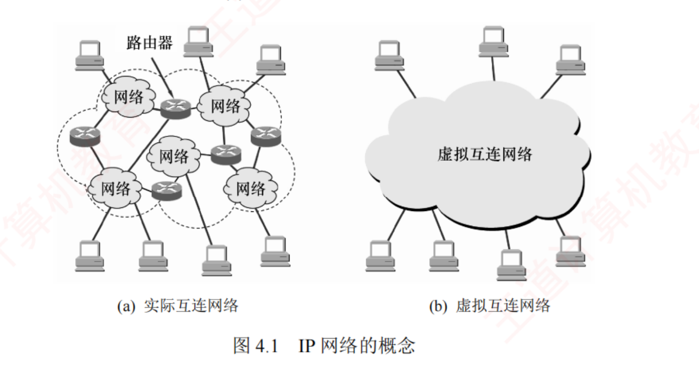
图 4.1 IP 网络的概念 。(a) 实际互连网络 ：一堆虚线圈起来的「网络」云，中间用路由器 （图上那些带 × 的鼓形符号）两两串起来——每朵云内部的技术可以完全不同（以太网、无线、卫星……） 。(b) 虚拟互连网络 ：同样这些主机，眼里看到的却是一整朵大云 。⭐ 这两幅图就是「网络互连」的全部含义 ：路由器 + 统一的 IP 协议，把 (a) 变成了 (b) 。看图时盯住一件事：(b) 图里路由器全部消失了 ——这正是「看不见互连的各个网络的具体异构细节」那句话的图示。 我的补讲 · 「虚拟互连网络」这个词是本章所有抽象的起点
书上说 X ：互连后的网络可视为一个虚拟互连网络（IP 网络），主机通信就像在单个网络上一样。潜台词是 Y ：「虚拟」二字意味着这一层是被造出来的假象 ——
物理上根本不存在一朵大云，存在的只是无数条链路和路由器；是 IP 协议这一层统一的编址与转发规则「装」出了一朵云。 所以能考 Z ：凡是问「为什么能互连异构网络」，标准答案就是「网络层采用统一的 IP 协议」 ，
而不是「因为大家的物理层相同」（恰恰相反，物理层可以完全不同）。 更值得记的是它的代价 ：既然是假象，IP 就必须自己重新定义一套地址（IP 地址），而不能用底层的 MAC 地址 ——
这直接引出 4.2 的全部内容，也引出 4.2.5 的 ARP（在假象与真实之间做翻译）。
把 4.1.1 与 4.2 之间的这条因果链想清楚，整章的结构就立起来了。
知识串联 · 中继系统四层表 ＝ ch2＋ch3＋本章三张表拼起来的那一张
设备 这张表你其实已经见过两次了，只是每次只见到一行 ：
ch2 2.3 讲的转发器/集线器 ＝ 第一行；ch3 3.8 讲的网桥/交换机 ＝ 第二行；本章 4.7 要讲的路由器 ＝ 第三行。 冲突域/广播域 ⭐ 更值钱的是：这张表与 ch3 的「冲突域 / 广播域」表是同一张表的两半 ——
层次越高，隔离能力越强 ：集线器什么都不隔离 → 交换机隔离冲突域 → 路由器连广播域也隔离。
2019 与 2022 两道综合真题的第一问都在考这句话，复习一次拿两章的分，这是全章投产比最高的一条串联。 分层 「设备在第 n 层就屏蔽 n 层及以下差异」这条规律，
和《操作系统》里「虚拟机/抽象层」的思路完全一致 ——每一层都在向上兜售一个「看起来更整齐的假象」 ：
链路层兜售「无差错的链路」，网络层兜售「一个统一的大网」，传输层兜售「一根可靠的管道」。
4.1.2 路由与转发
路由器的核心功能就是两件事：① 路由选择 ——运行路由协议，定期与相邻路由器交换信息，感知拓扑变化，动态生成并维护路由表 ，计算到目的网络的最优路径；② 分组转发 ——根据转发表 把到达的分组从合适的输出端口送出去。
必记 · 路由表 vs 转发表（书上专门用一段话区分，就是要考）
路由表 routing table 转发表 forwarding table 谁生成 路由选择算法 生成由路由表导出 侧重 拓扑计算 （哪条路最优）查找最优化 （怎么查得最快）属于哪个平面 控制平面 数据平面
⚠️
书上紧接着说：讨论原理时往往不区分，笼统使用「路由表」一词 ——
所以做题时看到「路由表」不要吹毛求疵 ，
只有当题目把两个词并列摆出来问区别 时，才用上面这张表答。 我的补讲 · 路由表里到底存什么？这是 04 题十几年不变的考法
书上说 X ：路由表的表项是「目的网络 + 下一跳」。潜台词是 Y ：这两个词各自都在排除一个错误答案 ——
「目的网络 」排除的是「目的主机」 （用网络号可让一个表项覆盖成千上万台主机，表才不会爆 ）；
「下一跳 」排除的是「完整路径」 （路由器只管交给下一个人，不知道全程 ）。所以能考 Z ：04 题的四个选项正好是这两个维度的四种组合，只有「目的网络 + 下一跳的 IP 地址」是对的 。
⚠️ 还要防第四个坑：下一跳存的是 IP 地址 而不是 MAC 地址 ——
MAC 地址是转发的那一瞬间 才用 ARP 现查的（见 4.2.5），不会长期躺在路由表里。 07 题把这条推到极致 ：源主机和中间路由器都不 知道完整路径 ——
主机只知道「本网内直接送，出网就丢给默认网关」，路由器只知道「下一跳是谁」 。
这就是数据报网络与虚电路网络最本质的差别，下一节马上要用到。
知识串联 · 「只知下一跳，不知全程」是分布式系统的通用姿势
局部决策 路由器的这种工作方式，在 408 里到处都是 ：
《数据结构》里 Dijkstra 每一步只挑当前最近的点 · 《操作系统》里进程调度只看就绪队列当前状态 · 本章 4.4 的距离-向量算法更是纯粹的「只跟邻居打听」 。存储转发 06 题的「必须先收完整个分组才能开始转发 ＝ 存储转发机制 」，
与 ch3 3.8 交换机的「直通式 vs 存储转发式」是同一个对照 ：
存储转发能查错、能变速率，代价是多一份发送时延；直通式快，但坏帧也照转。
⚠️ 计算题里凡是出现「经过 N 个路由器」，几乎一定要按存储转发算 N 次发送时延 ——
这正是 ch1 那条母公式 T ＝ (k+m−1)·r 的由来。
4.1.3 网络层提供的两种服务 考点追踪：虚电路的特点（2020）
分组交换网按通信子网向端系统提供的服务，分为面向连接的虚电路服务 与无连接的数据报服务 ——注意：两种服务方式都是由网络层提供的 。
1. 虚电路方式
通信前必须先在网络层 建立一条逻辑连接 ——虚电路（VC）。连接一旦建立，端到端传输路径就被固定 。整个通信过程分三阶段：虚电路建立 → 数据传输 → 虚电路释放 。每次建立时系统分配一个未使用过的虚电路号 VCID ，以区别于同一节点上 的其他虚电路；每个中间节点维护一张虚电路表 ，记录 VCID 与下一跳，在连接建立过程中就确定好了 。
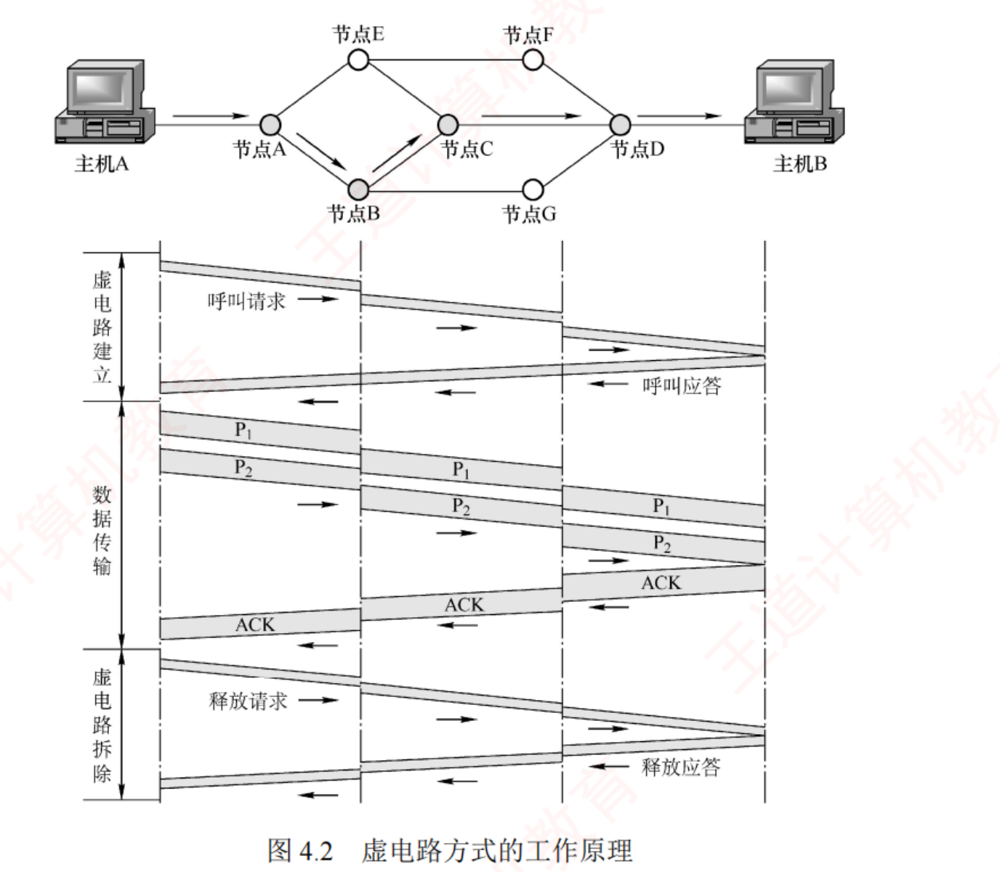
图 4.2 虚电路方式的工作原理 （A→B）。上半部是拓扑 ：主机A—节点A—{E—F ／ C ／ B—G}—节点D—主机B，加粗箭头标出被选中的那条路径 A→B→C→D 。下半部是时序，分三段 ：① 虚电路建立 ——「呼叫请求」逐跳向右、「呼叫应答」逐跳向左；② 数据传输 ——P₁、P₂ 沿同一条路径 逐跳前进，ACK 逐跳返回；③ 虚电路拆除 ——「释放请求」→、「释放应答」←。⚠️ 看图必须抓住的两点 ：① 数据段里 P₁ P₂ 走的是同一串斜条 （路径固定）；② 图 4.2 所示的数据传输是有确认的 ——这正是「虚电路由网络自身保证可靠」的图证 。我的补讲 · 虚电路的三阶段，和 ch1 的电路交换只差一个字
书上说 X ：虚电路通信分三阶段——虚电路建立、数据传输、虚电路释放，「与电路交换类似」。
潜台词是 Y ：
「类似」二字要能说清像在哪、不像在哪 ：
电路交换（ch1） 虚电路（本节） 三阶段 建立连接 → 通话 → 释放连接 虚电路建立 → 数据传输 → 虚电路释放 （一模一样） 建立的是什么 物理 通路逻辑 连接资源 独占 ，全程预分配带宽共享 ，不预分配带宽数据怎么走 连续的比特流，不分组 仍是分组交换 ，只是路径固定
所以能考 Z ：
「虚」字就是「逻辑而非物理、共享而非独占」这两句话的缩写 ——
2020 真题的错项「需要为每条虚电路预分配带宽」，正是把第三行读成了电路交换。 必记 · 虚电路服务的五个特点（原文顺序，逐条都出过题）
① 建立与释放连接开销大 ——不适合交互式应用或少量数据交换，适合长时间、大量数据交换 。② 路由选择在连接建立阶段 完成 ，建立完成后传输路径就固定了。③ 提供可靠、有序的分组交付，并支持端到端的流量控制。 ④ 对节点或链路的故障敏感 ——任一故障都会导致所有经过它的虚电路中断，必须重建 。⑤ 分组首部开销小 ——无须携带完整目的地址，只带虚电路号 。「虚」字的含义要能一句话答出来：这条链路并非专用 ，而是可被多条虚电路共享 。
2. 数据报方式
发送分组前无须建立连接 。源主机把应用层报文分割成若干数据段，封装成携带完整源地址和目的地址的独立分组 ；中间节点对分组短暂缓存，独立选路后随即转发 。网络层不提供服务质量保证，也不确保可靠传输，因此分组可能丢失、重复、失序或出错——这也正是路由器可以做得比较简单、造价低廉的原因 。
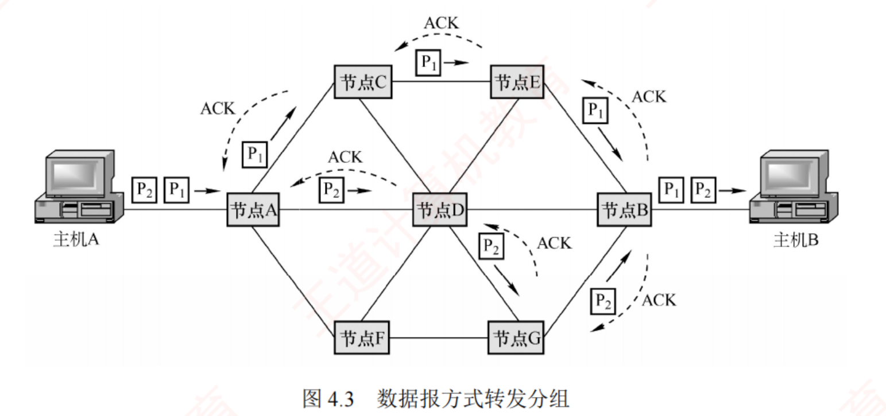
图 4.3 数据报方式转发分组 （A→B）。主机 A 把 P₁ 和 P₂ 逐个交给节点 A，节点 A 查转发表 后把两个分组送上了不同的路 ：P₁ 走 A→C→E→B ，P₂ 走 A→D→…→B ，最后两者都到达主机 B。每一跳都画了一条虚线 ACK 弧 （逐段确认，不是端到端确认）。⭐ 与图 4.2 对照着看，一眼就能记住表 4.1 的第三、四行 ：虚电路是一串固定的斜条 ，数据报是一张分岔的网 ——分岔 ⟹ 各分组独立选路 ⟹ 可能失序到达 。⚠️ 别被 ACK 弧误导成「数据报也可靠」：那是相邻节点间的链路层确认，网络层依旧不保证端到端可靠。 必记 · 数据报服务的六个特点
① 无须建立连接 ，随时可发、随时可收。② 尽最大努力交付 ——每分组独立选路 ⟹ 路径可能不同 ⟹ 可能失序到达 。③ 分组携带完整的源地址与目的地址 ，以支持独立路由。④ 存在排队时延与丢包风险 ，拥塞时时延显著增加，还可能被主动丢弃。⑤ 故障适应能力强 ——节点/链路失效可更新转发表动态绕行。⑥ 资源利用率高 ——带宽由多个会话共享；传输中分组仅占用当前链路 的资源 。
必记 · 表 4.1 数据报服务 vs 虚电路服务（本节唯一的默写项，七行）
对比项 数据报服务 虚电路服务 连接的建立 不需要 必须有 目的地址 每个分组都有完整的目的地址 仅在建立连接阶段使用 ，之后每个分组用较短的虚电路号路由选择 每个分组独立 选路和转发 同一条虚电路的分组按同一路由 转发 分组顺序 不保证 有序到达保证 有序到达可靠性 不保证，可靠性由用户 保证 可靠性由网络自身 保证 对网络故障的适应性 强 ，可另寻路径弱 ，经过故障节点的虚电路全部失效差错处理与流量控制 由用户主机 进行 可由分组交换网 负责，也可由用户主机负责
我的补讲 · 本节 28 题里有 11 题在考这张表，四个高频错项一次收干净
把 09–16、20 这一串题的错误选项归归类，你会发现命题人只有四张牌，翻来覆去地打：
错误说法 出处 为什么错（一句话记法） 「虚电路需要为每条虚电路预分配带宽」 2020 真题 B 虚电路是逻辑 连接，不是物理连接 ⟹ 不预分配带宽 （预分配那是电路交换 ）「虚电路不能按存储转发方式工作」 13-A 可以 ——虚电路仍是分组交换 ，只是路径固定「虚电路的连接都是临时性的」 13-B 还有 PVC 永久性虚电路 （提前定义好、几乎不需建立时间）；临时的那种叫 SVC 「虚电路依赖其他协议实现差错控制」 14-A 虚电路本身就能做 差错控制（表 4.1 最后一行） 「虚电路方式多站点共用链路会冲突」 14-D 不会 ——每个分组带虚电路号，靠它区分归属「虚电路在传输前要建立物理 连接」 15-A 建立的是逻辑 连接（与第一行是同一个坑的两种问法）
⭐ 六个错项里有三个（2020-B、15-A、14-D）根子上是同一句话：虚电路 ≠ 电路交换。
把这一句钉死，本节的选择题就基本不会错了。 陷阱 · 「面向连接」不等于「可靠」，但在虚电路 这里恰好等于
这是全书最容易记反的一处 ，必须分场合：
① 在网络层的虚电路 语境下：面向连接 ⟹ 可靠、有序（表 4.1 白纸黑字）。
② 在传输层 语境下：面向连接的是 TCP，它确实 可靠；但「面向连接」这个属性本身不蕴含 可靠 ——
ch5 会见到「面向连接但不可靠」的反例思路 。更要命的第三种情形：09 题问「故障率很高的传输系统选哪种」，答案是数据报 而不是虚电路 ——
虚电路虽然「可靠」，但它的可靠是建立在路径不出故障 的前提上的；一旦节点挂了，整条虚电路作废、必须重建。
⟹ 「可靠」与「抗故障」是两个维度，虚电路占前者、数据报占后者，别混成一个。
知识串联 · 虚电路 / 数据报这对概念，往前往后各连着一整章
往前 ch1 讲过的三种交换方式 ：电路交换（独占物理通路）· 报文交换 · 分组交换 。
虚电路与数据报都属于分组交换 的两个子类 ——这是 11 题与 16 题的胜负手 ：
16 题问「由网络负责差错控制和流量控制、分组按序递交」的是哪种，A 电路交换与 B 报文交换先被「不是分组交换」排除，再在剩下两个里选虚电路。 往后 ch5 传输层把这对概念原样搬了一遍 ：
TCP ＝ 面向连接（三次握手 ≈ 虚电路建立、四次挥手 ≈ 虚电路释放）· UDP ＝ 无连接（≈ 数据报） 。
2011 真题考的正是这个组合的错位：网络层无连接 + 传输层可以有连接 ，两层各管各的。 跨科 「先建立会话再通信」vs「每次都带完整地址」这对权衡，OS 里叫「连接式 IPC vs 无连接消息传递」 ，
组原里对应「握手式总线事务 vs 单次读写」 ——都是同一笔账：一次性建立开销 换 每次通信的首部开销。
4.1.4 SDN 的基本概念 考点追踪：SDN 的南向接口（2022）
网络层的两大任务（转发、路由选择）在功能架构上被抽象为两个逻辑平面：数据平面（也称转发平面） 负责执行分组转发，控制平面 负责实现路由选择、生成并维护路由信息。SDN（软件定义网络）的核心就是：控制平面与数据平面解耦 ——控制平面集中化，数据平面分布式部署。
必记 · 传统网络 vs SDN，三句话说清
传统网络 ：每台路由器同时承担控制与转发 ——既运行路由协议、与邻居交换路由信息，又维护并查找转发表。SDN ：路由器仅保留数据平面功能 ，不再运行路由选择软件，彼此之间也不再交换路由信息 ；
控制功能由一个逻辑集中式的远程控制器 （通常由多台服务器协同实现）统一承担。控制器掌握全网拓扑与主机状态，为分组计算最优路径，再通过 OpenFlow 等协议把流表 （SDN 中的转发表）下发到各路由器。
路由器的工作变得极简：接收分组 → 匹配流表 → 执行转发 （即所谓「匹配 + 动作」）。
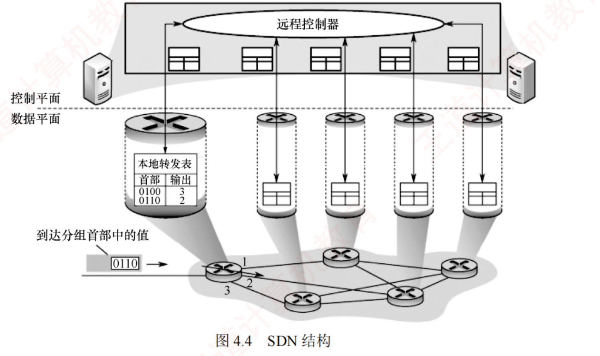
图 4.4 SDN 结构 。虚线把图切成上下两半 ：上半＝控制平面 （一个「远程控制器」椭圆，两侧是服务器，中间一排小表格＝它为每台设备算出来的流表）；下半＝数据平面 （五台交换机，每台肚子里放着控制器下发的那张表）。左下角是一次转发的全过程 ：到达分组首部中的值 0110 → 查「本地转发表」（0100→输出 3，0110→输出 2 ）→ 从端口 2 转发 。⭐ 这张图最该盯的是那些竖直向下的箭头 ：信息只从控制器流向交换机，交换机之间没有任何横向连线 ——这就是「SDN 中路由器彼此不再交换路由信息」那句话的图示，也是 17 题与 18 题的判据来源 。另外注意：控制器画在虚线之上、之外 ，它不在交换机里（18 题 III 项）。 我的补讲 · 「转发 vs 路由选择」在本章出现了四次 ，一次比一次具体
这对概念是全章的暗线 ，读到后面若觉得眼熟，就是因为它已经出现过好几遍了 ：
出现位置 它长什么样 4.1.2 第一次露面：路由选择 ＝ 跑协议建路由表；分组转发 ＝ 查转发表送出去 4.1.4 SDN 被抽象成两个平面：控制平面 vs 数据平面 ，并被「解耦」 4.4 路由选择的具体算法 登场：DV / LS / 路径向量，以及 RIP / OSPF / BGP 4.7.2–4.7.3 落到硬件 上：路由选择处理机 vs 交换结构 ；并给出正式定义——转发是单个 路由器的数据平面操作，路由选择是多个 路由器协同的控制平面操作
⟹ 读本章时如果迷路了，就回到这条暗线上：你现在读的内容，是在讲「怎么建表」还是「怎么查表」？
4.2 全在讲「查表要用到的地址知识」，4.4 全在讲「怎么建表」，4.7 讲「建表和查表分别由哪个硬件干」。 必记 · 三类接口谁对谁（2022 真题就考这一张表）
接口 连接谁与谁 典型协议 / 用途 北向接口 控制器 ↔ 上层应用 标准化 API，供开发者构建定制化网络应用，无须关心底层转发设备 南向接口 控制器 ↔ 转发设备 OpenFlow ；控制器统一管理异构硬件、下发流表到数据平面 东西向接口 控制器集群内部 提升控制平面的可靠性与可扩展性
记法：上北下南、左右东西 ——把控制器画在中间，应用在上、交换机在下、别的控制器在两边，一秒定位。 我的补讲 · SDN 三道题只考三件事，其余全是包装
17、18、21 三题拆开看，考点只有三个 ：① 三类接口谁对谁 （21/2022 真题）——「下发流表」用南向 ；北向 是给上层应用的 。② 谁取代了谁 （17 题）——流表取代了转发表，OpenFlow 不是 取代路由协议的东西，它只是控制平面与数据平面之间的接口 。
真正取代路由协议的是「远程控制器集中计算」这件事本身。 ③ 控制器在哪 （18 题）——控制器是远程的服务器 ，不在 OpenFlow 交换机里 ；
另外 SDN 是一种新型网络体系结构 （设计、构建、管理网络的新方法），不是新型「物理网络结构」 ——这个字眼是 18 题的 I 项。我的记法：SDN 的一切说法都可以用一句话验：「路由器变笨了，控制器变聪明了」。
凡是让路由器显得还很聪明的说法（还在跑路由协议、还在交换路由信息、控制器就装在它肚子里），一律错。
背景 · 考试不碰：SDN 的三大优势与两大挑战
书上列了优势三条 （集中控制 + 分布转发 · 灵活可编程 · 降低成本）与挑战两条 （安全风险：控制器一崩全网瘫 · 性能瓶颈：规模变大后控制器扛不住 ），
以及一段「SDN 并非要把整个互联网都改造成集中控制模式」的说明 （互联网本质是分布式的，全面集中不具可行性；但在大型数据中心互联的广域网 等特定场景下确实能显著提效）。
这些段落至今没有出过题，理解一遍即可，不必背条目。
唯一值得留一句的是那对矛盾本身：集中化带来全局最优，也带来单点故障 ——这个权衡在 OS 与组原里也会反复见到。
知识串联 · 「控制与数据分离」是 408 三科共有的一条设计哲学
控制器 vs 数据通路 ⭐ 《组成原理》ch5 的 CPU 就是这么分的 ：
控制器 （产生控制信号、决定做什么）与 数据通路 （ALU、寄存器、总线，负责实际搬运和运算）SDN 不过是把这套结构从一块芯片放大到了一整张网。 机制与策略分离 《操作系统》里叫「机制（怎么做）与策略（做什么）分离」 ：
调度机制固定在内核，调度策略可以换；页面置换机制固定，FIFO/LRU/CLOCK 可以换
⟹ 与「转发机制留在交换机、路由策略上收到控制器」是同一件事的三种说法。 分层 北向/南向接口的设计动机 ＝ ch1 讲的「分层 + 标准化接口」 ：
只要接口不变，上下两侧可以各自独立演进 ——这也是 OpenFlow 能统一管理「异构硬件」的全部原因。
4.1.5 拥塞控制
拥塞 ：网络中出现过量分组、超出其处理能力时所引发的性能下降现象。核心是及时感知拥塞并采取措施，避免因缓冲区溢出而丢包。这是一个全局性过程 ，涉及所有主机、路由器以及一切影响网络传输能力的因素——仅靠增加资源无法根本解决拥塞。
知识串联 · SDN 的「集中 vs 分布」，是 408 里反复出现的一道选择题
集中 vs 分布 书上那句「网络构架又变为集中控制模式，而互联网本质上是分布式的」，
点破了 SDN 最根本的张力 ——
把这组权衡摊开，三科都能对上号 ：
集中式 分布式 好处 全局视图 ⟹ 能算全局最优 无单点故障、可无限扩展 坏处 单点故障 + 性能瓶颈 只能靠局部信息，可能次优、可能震荡 本章的例子 SDN 控制器 、OSPF 的全网拓扑 传统路由器 、RIP 的逐跳打听 组原的例子 集中式总线仲裁 分布式仲裁 OS 的例子 单一就绪队列 每核一个队列 + 负载均衡
⟹ 4.4 讲的「DV vs LS」其实就是这张表的又一次实例化：RIP 分布式打听，OSPF 让每个节点都拿到全图。 必记 · 怎么判断「已经拥塞了」：看吞吐量与负载的关系
现象 结论 负载增大，吞吐量随之增大 正常，不是拥塞 负载增大，但吞吐量增长甚微 可能已处于轻度拥塞 负载增大，吞吐量反而下降 很可能已进入拥塞状态 （02 题答案）
⚠️
02 题的两个干扰项 B、C 说的是「节点接收和发出的分组越来越少 / 越来越多」 ——
「分组多少」与「吞吐量」不成正比 ，多发的可能全是重传和丢弃，因此不能据此判断是否拥塞。
严重时网络通信业务会陷入停顿，书上称为死锁 。 必记 · 拥塞控制 vs 流量控制（一句话分界线）
拥塞控制是全局性 的，流量控制是点对点 的。
拥塞控制 流量控制 作用范围 整个网络 （所有主机、路由器、链路）一对发送方与接收方 要解决什么 网络中分组太多、来不及处理 抑制发送方速率 ，使接收方来得及接收和处理谁在喊「慢点」 网络（路由器丢包、拥塞信号） 接收方 （通告窗口）
必记 · 开环控制 vs 闭环控制（认准「有没有反馈」四个字）
开环控制 ：设计时就把可能导致拥塞的因素考虑进去，用静态策略 防止拥塞 ；
一旦投入运行，控制机制不再依赖实时反馈 。典型手段：确定何时接收新流量、何时丢弃哪些分组、采用何种调度策略。
特点是不依赖当前网络状态。 闭环控制 ：监测网络运行状态 → 检测拥塞的位置与程度 → 反馈至控制节点 → 调整运行以缓解拥塞 。
基于反馈机制，是一种动态方法。 ⟹ 一字判据：有反馈回路的是闭环，没有的是开环 ；「静态/预防」＝开环，「动态/检测+反馈」＝闭环。
我的补讲 · 4.1.5 只有半页，却是 ch5 半章的总纲
书上说 X ：这半页讲了拥塞的定义、判据、与流量控制的区别、开环与闭环两类方法。潜台词是 Y ：这半页是纲 ，ch5 的 TCP 拥塞控制是目 ——
慢开始、拥塞避免、快重传、快恢复全部是「闭环控制」的实例 ：
丢包 ＝ 拥塞信号（检测）→ 反馈给发送方 → 把 cwnd 砍半（调整）。 所以能考 Z ：ch5 里凡是问「TCP 的拥塞控制属于开环还是闭环」，答案永远是闭环 ；
问「与流量控制的区别」，答案永远是全局 vs 点对点 。
反过来，本章这半页也可能单独出选择题（02 题就是），考的就是判据那一行。 最容易被忽略的一句：「仅靠增加资源无法根本解决拥塞」 ——
直觉上「带宽不够就加带宽」，但加了带宽只会让更多分组涌进来、把瓶颈推到下一个路由器 。
这句话本身就可以当判断题的题干。
知识串联 · 拥塞 ＝ 队列排不过来，这在三科里是同一件事
队列与调度 拥塞的物理实质就是「路由器的输出队列排满了」 ——
与《操作系统》的就绪队列过长、《组成原理》I/O 的缓冲区溢出是同一种现象 ：
到达率 > 服务率，队列无界增长，最终只能丢弃。 流量控制 ⚠️ 流量控制这个词你已经在 ch3 见过一次了 （链路层的滑动窗口），
ch5 还会再见一次（TCP 的接收窗口） ——同一件事在三层各做一遍，作用范围逐层放大 ，
但「拥塞控制」只有网络层与传输层有，链路层没有 （链路层管不到全局 ）。丢弃策略 开环控制里那句「确定何时及丢弃哪些分组」，
与《操作系统》的页面置换算法（该淘汰谁）、Cache 的替换策略（LRU/随机）是同一类决策 ——
资源不够时，谁被牺牲。
我的补讲 · 4.1 这 10 页读完，你应该能立刻回答这五个问题
自测清单（答不上来就回头翻，别往下走） ：
中继系统四层各是什么设备？哪几层的「互连」不算真正的网络互连？ （→ 转发器/集线器、网桥/交换机、路由器、网关；前两层不算）路由表与转发表的区别？路由表里存的是完整路径还是下一跳？存 IP 还是 MAC？ （→ 拓扑计算 vs 查找优化；下一跳；IP）表 4.1 的七行能不能默写？ （→ 连接建立、目的地址、路由选择、分组顺序、可靠性、故障适应性、差错与流控）SDN 三类接口谁对谁？流表取代了什么？控制器在不在交换机里？ （→ 北=应用/南=设备/东西=控制器集群；取代转发表；不在）怎么判断网络拥塞了？拥塞控制与流量控制差在哪？开环与闭环差在哪？ （→ 负载升而吞吐降；全局 vs 点对点；有无反馈）
⭐ 这五问对应本节 28 道题的全部考点，2011/2020/2022 三道真题分别落在第 ①③④ 问上。 📄 p.137
4.2 IPv4 ⭐⭐ 44 页 · 90 题 · 29 真题 · 全章绝对重心
我的补讲 · 进 4.2 之前，先看清这 44 页的地形
这一节大到足以单独当一章读 ，如果不先分块，很容易读到一半就迷路。我按
「考什么题型」 而不是按书上的小节号，把它切成
五块 ：
块 对应小节 页 题型 真题 ① 首部与分片 4.2.1 3 算：片数 / 片长 / 片偏移 / MF ；读十六进制首部2011 · 2018 · 2021 ② 地址与子网划分 4.2.2 6 算：子网块划分 / 网络地址 / 广播地址 / 可用主机数 2009 · 2010 · 2017 · 2018 · 2019 · 2021 · 2022 · 2025 ③ CIDR 与聚合、最长匹配 4.2.2 · 4.2.4 4 算：聚合成哪个前缀 / 查表选哪一行 2011 · 2013 · 2015 · 2016 · 2018 · 2023 ④ NAT 4.2.3 2 追踪：地址与端口在哪一跳被改成什么 2019 · 2020 ⑤ 三个配套协议 ARP／DHCP／ICMP 4.2.5–4.2.7 6 概念 + 报文流程追踪 2010 · 2012×2 · 2015 · 2022 · 2024 · 2025
（余下页数是本节的 90 道习题与答案，占 23 页。）
⭐ 五块里 ②③ 两块只占 10 页，却吃掉 14 道真题——「会不会切子网、会不会数前缀」几乎等价于「网络这一科能不能上 30 分」。
读的时候可以按 ①②③④⑤ 顺序走，但练的时候必须把 ②③ 单拎出来反复刷 。 4.2.1 IPv4 分组
IPv4 即现在普遍使用的网际协议 IP 。它定义了数据传送的基本单元——IP 分组及其确切的数据格式 ，也包括一套规则，指明分组如何处理、错误怎样控制；特别是它包含了非可靠投递 的思想，以及与之关联的路由选择 的思想 。
1. IPv4 分组的格式 考点追踪：IP 首部格式及字段含义（2011、2012）
IP 分组 ＝ 首部 + 数据部分 。首部的前一部分长度固定，共 20B ，是所有 IP 分组必须具有的；固定部分之后是一些可选字段 （提供错误检测及安全等机制），长度可变，从 1B 到 40B 不等 。
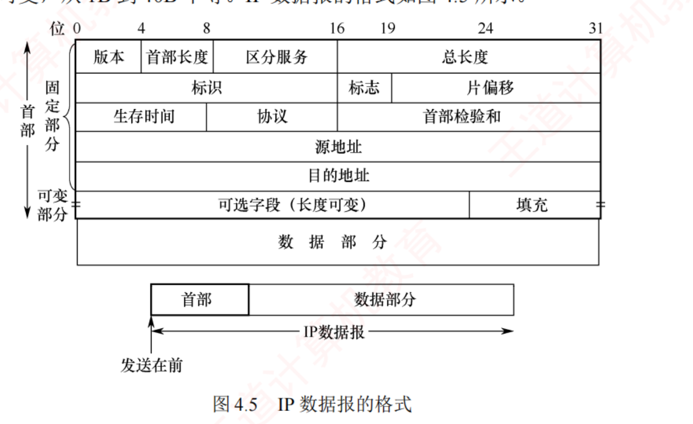
图 4.5 IP 数据报的格式 。每行 32 位（4B） ，上面五行是固定部分 20B （＝5 行 × 4B，这就是「首部长度字段常取 5」的由来 ），第六行「可选字段 + 填充」是可变部分 ，再下面才是数据部分。⭐ 看这张图时只需记住三件事 ：① 前四行挤了 11 个字段 ，后两行各被一个 4B 的地址整行占满（源地址、目的地址）；② 位标尺上的 0／4／8／16／19／24／31 决定了每个字段占几位；③ 底部那条「首部 ＋ 数据部分 ＝ IP 数据报」的示意，标着「发送在前」 ——首部一定先上路，所以在十六进制转储里 IP 数据报总是从 45 开始 。书上明说不必死记这张图，题目会给；但字段的位置顺序 要有印象，读十六进制串时才数得出偏移。 我的补讲 · 首部里哪些字段「每跳都会变」？这个清单能一次答三道题
书上在讲检验和时顺带提了一句「某些字段可能发生变化」，那句话值得单拎出来做成清单 ：
字段 每跳变不变 什么时候变 TTL 必变 每经一个路由器减 1 ——这是「必须每跳重算检验和」的唯一充分理由 首部检验和 必变 因为 TTL 变了，所以它跟着重算 总长度 / 标志 / 片偏移 可能变 发生分片时 源 / 目的 IP 一般不变 只有经过 NAT 路由器时才变 标识 不变 分片时所有片复制同一个值 ，正是靠它重组 版本 / 首部长度 / 协议 不变 —
这一张表同时回答了三个高频问题 ：
① 为什么每跳要重算检验和（TTL 变了）；
② 哪些字段端到端不变（地址、标识）；③ 分片会动哪几个字段（总长度、标志、片偏移，外加标识被复制）。 必记 · IP 首部字段清单（按位置顺序，考过的字段加粗）
字段 长度 要点 版本 4 位 IPv4 中值为 4 首部长度 4 位 以 4B 为单位 ；最大 60B（15×4B） ；最常用 20B ⟹ 字段值 5 ；首部长度必须是 4B 整数倍，不足由填充 补齐区分服务 8 位 一般不用 总长度 16 位 首部 + 数据，以 1B 为单位 ⟹ 最大 216 −1 ＝ 65535B 标识 16 位 源主机用递增计数器 为每个数据报设置；它不是序号 ；分片时所有分片复制同一个标识值 ，供目的主机重组时比对 标志 3 位 只有低 2 位有意义 ：DF （＝1 禁止分片，＝0 才允许分片 ）、MF （＝1 后面还有片 ，＝0 是最后一片） 片偏移 13 位 以 8B 为单位 ；指出该片在原数据报数据部分中的相对位置生存时间 TTL 8 位 允许经过的路由器数的最大值 ；每经一个路由器减 1 ，减到 0 就丢弃 ；若初值设为 1，则该数据报仅限本局域网内传输 协议 8 位 数据部分交给哪个上层协议：6 ＝ TCP，17 ＝ UDP 首部检验和 16 位 只检验首部、不检验数据 （减少计算量）；每经过一个路由器都要重新计算 源地址 / 目的地址 各 4B 发送方 / 接收方的 IP 地址 可选字段 + 填充 1–40B 可变部分，凑齐 4B 整数倍
我的补讲 · 「无须死记首部格式」这句话，反过来告诉你该记什么
书上说 X ：理解各字段的意义和功能即可，无须死记首部格式，题目需要时通常会给出。潜台词是 Y ：会给你的是「图」，不会给你的是「单位」和「语义」 题目印出一张首部图，但不会在旁边注明「片偏移以 8B 为单位」「首部长度以 4B 为单位」「协议 6 是 TCP」。 所以能考 Z ：该背的是这三类东西 ：
① 三个长度字段的单位 （4B / 1B / 8B）；② 几个魔数（0x45、6＝TCP、17＝UDP、TTL 最大 255 ）；
③ 每个标志位的极性 （DF＝0 才允许分片、MF＝1 还有后续）。
而字段的位置和位宽 确实不用背——那是图会告诉你的部分。
⭐ 书上还说「这一原则同样适用于第 5 章 TCP 和 UDP 首部」——到 ch5 时照此办理，省下的时间很可观。
必记 · 书上灰框亲口给的两条解题技巧（不是知识点，是工具）
① IP 首部前两个字节往往以 0x45 开头 ——版本 4 ＋ 首部长度 5（＝20B），拼起来就是 0x45 。
做「从一串十六进制里找出 IP 数据报从哪开始」的题时，直接搜 45。 ② 首部里三个与长度相关的字段单位各不相同 ：
首部长度 ＝ 4B · 总长度 ＝ 1B · 片偏移 ＝ 8B ，计算时必须换算 。书上还说了一句很重要的话 ：「读者应理解 IP 首部各字段的意义和功能，但无须死记首部格式 ，若题目需要通常会直接给出。」
这个原则对 ch5 的 TCP/UDP 首部同样适用 ——把力气花在「哪个字段单位是几」上，而不是背图。
我的补讲 · 「4B / 1B / 8B」这三个单位，是本章计算题最大的失分点
书上说 X ：三个长度字段的单位分别是 4B、1B、8B。潜台词是 Y ：命题人知道你会算分片，所以他不在算法上为难你，而在单位上为难你 ——
题目给你「片偏移＝185」，你要能立刻反应出「它前面已经有 185×8 ＝ 1480 字节」 ；
给你「首部长度字段＝5」，要反应出 5×4 ＝ 20B；给你「总长度＝1500」，那是连首部一起 的 1500B。所以能考 Z ：三个典型错法各对应一个错误选项——
① 把片偏移当字节数（少乘 8）· ② 把总长度当纯数据长度（多算 20B）· ③ 把首部长度当字节数（少乘 4） 。
⟹ 考场自查口诀：「偏移乘八、首长乘四、总长含头」。
我的补讲 · 「首部检验和只检验首部」这句话，背后是一个很值钱的推论
书上说 X ：首部检验和只检验首部，不检验数据部分，可减少计算工作量；且每经过一个路由器都要重算。潜台词是 Y ：IP 层根本不保护你的数据 那谁来保护？上面的 TCP／UDP 检验和 （它们的检验范围包含数据 ）与下面的链路层 CRC 。
⟹ 「IP 只自保首部、数据靠上下两层」是一条完整的跨层结论。 所以能考 Z ：① 判断题「IP 提供差错检测，所以数据出错会被丢弃」——错 ；
② 问「为什么每跳都要重算检验和」——因为 TTL 每跳减 1，首部变了
（顺带：总长度、标志、片偏移、地址在分片或 NAT 时也可能变 ）。
⚠️ 这条还解释了一个常被问的问题：为什么 IPv6 干脆取消 了首部检验和 ——
既然上下两层都在查，中间这一层每跳重算纯属浪费，见 4.3。
2. IP 数据报分片 考点追踪：IP 分片相关首部字段（2011）· IP 分片的原理及分析（2021）
一个链路层数据帧能承载的最大数据量称为最大传送单元 MTU 。源到目的路径上各段链路的 MTU 可能不同 ——以太网的 MTU 通常为 1500B，而很多广域网的 MTU 不超过 576B 。当 IP 数据报总长度超过某段链路的 MTU 时，就必须拆成多个较小的 IP 数据报，称为分片 。
我的补讲 · 读十六进制 IP 首部的定位法（10 题、11 题的通用做法）
综合题会直接甩给你一长串十六进制，让你答「总长度多少 / 是不是分片 / 源 IP 是什么」。
硬数字节容易错位，用下面这套定位法更稳 ：
找起点 ：IP 首部通常以 45 开头 （版本 4 ＋ 首部长度 5）。先在串里搜 45。 按 4B 一行数 ：第 1 行 = 版本/首部长度/区分服务/总长度 ；第 2 行 = 标识/标志+片偏移 ；
第 3 行 = TTL/协议/检验和 ；第 4 行 = 源 IP ；第 5 行 = 目的 IP 。 拆位 ：标志+片偏移那 2 字节要按位拆——高 3 位是标志（第 2 位 DF、第 3 位 MF），低 13 位是片偏移 。倒着验 ：用已知的目的 IP 往前数 4 字节找到源 IP，再往前 4 字节就是 TTL 那一行 ——正着数错了能立刻发现 。
⚠️
最阴的一种题（教材综 11）：以太网帧的类型字段是 0x8864（PPPoE），IP 首部并不在第 15 字节起 ——
此时第 1 步的「搜 45」和第 4 步的「从目的 IP 倒着数」就是救命稻草。
🐍 我按这套方法复算过教材 10、11 两题的逐字段结果，与书答完全吻合。
⚠️
另一处书上灰框专门提醒的坑：把 4 字节地址转成点分十进制时，极易因字节顺序或进制转换出错 ——
写完务必回头把四段分别对一遍十六进制。 必记 · 分片的三条铁律
① 分片可以发生在源主机或中间路由器 上，但重组只在目的主机 上进行。
（⟹ 中间路由器只拆不合，哪怕下一段链路的 MTU 又变大了也不合。） ② 重组靠首部里的三个字段：标识、标志、片偏移 ——
标识说「谁和谁是一家的」，MF 说「后面还有没有」，片偏移说「我该放在第几个字节」。 ③ 分片行为受标志字段控制：仅当 DF＝0 时才允许分片 ；DF＝1 则禁止分片
（此时若超过 MTU，路由器只能丢弃并回一个 ICMP 差错报文，见 4.2.7 ）。
我的补讲 · 分片题的五种问法，母公式只有一条
把历年出现过的问法排一遍，你会发现它们全是同一条公式的不同投影 ：
问法 怎么答 分成几片？ ⌈数据总长 ÷ 每片最大数据⌉；注意「数据总长」＝ 总长度 − 20 第 k 片的片偏移是多少？ (k−1) × 每片最大数据 ÷ 8最后一片有多长？ 数据总长 − (片数−1) × 每片最大数据，再加 20B 首部才是它的「总长度」 某片的 MF／DF 是多少？ 除最后一片外 MF＝1；DF 全程为 0 （否则根本不许分片）能不能推出原数据报多大？ 拿最后一片 ：原数据总长 ＝ 片偏移×8 + 该片数据长度
⭐ 最后一行是「反向题」，2021 真题就是这么问的（给一片求原报）——很多人只练正向，一遇反向就懵。
🐍 复算记录：2021 真题的那一片数据长 796B 、MF＝1 ；2018 真题原报分成 2 片 、第二片偏移 97 （＝776÷8）——两题都与书答吻合。 必记 · 分片三步法（本章第一条母公式，闭着眼睛也要会）
第 1 步 每片最大数据 = ⌊(MTU − 20) / 8⌋ × 8 ← 必须是 8 的倍数
第 2 步 片数 = ⌈数据部分总长 / 每片最大数据⌉
第 3 步 片偏移 = 该片之前已装走的字节数 / 8
标志位：除最后一片外 MF 全为 1，最后一片 MF = 0
⚠️
第 1 步那个「向下取整到 8 的倍数」是全章最容易漏的一步 ——
因为片偏移以 8B 为单位，除最后一片外，每片的数据长度必须是 8 的整数倍 ，否则下一片的偏移就不是整数了。
⟹ MTU＝1500 时 (1500−20)＝1480 恰好是 8 的倍数，所以这一步「看起来没做」；一旦 MTU 换成 576，(576−20)＝556，⌊556/8⌋×8 ＝ 552 ，这一步就露出獠牙了。 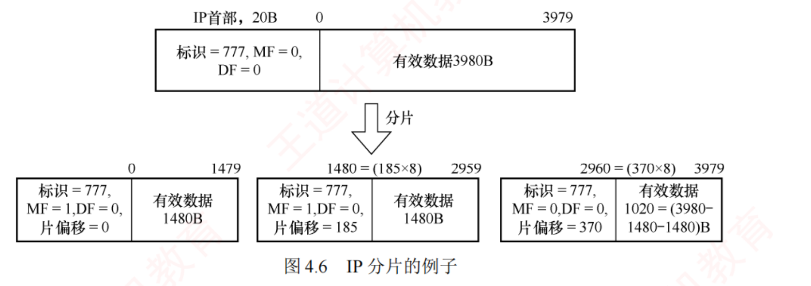
图 4.6 IP 分片的例子 。上方是原始数据报：IP 首部 20B ＋ 有效数据 3980B ，字节编号 0～3979 ，首部里写着标识＝777、MF＝0、DF＝0 。一个大空心箭头「分片」向下 ，分成三个独立的 IP 数据报，每个都自带 20B 首部 ：片 1 （0–1479，MF＝1，偏移 0）、片 2 （1480–2959，MF＝1，偏移 185 ，图上直接标出 1480＝(185×8)）、片 3 （2960–3979，MF＝0 ，偏移 370 ，图上标 2960＝(370×8)）。⭐ 这张图最值钱的是它把「偏移 × 8 ＝ 字节编号」这个换算直接印在了图上 ——看图时把那两个括号里的算式抄进脑子，考场上就不会漏乘 8。 知识串联 · 「标识 ≠ 序号」这半句，把 IP 和 TCP 划清了界限
无连接 书上特意点了一句：标识字段并不是「序号」，因为 IP 是无连接服务 。这句话值得往两头延伸 ：
IP 的「标识」 TCP 的「序号」（ch5） 干什么用 给同一个数据报的各分片打上「同族标记」，供重组时比对 给字节流编号，供排序、去重、确认、重传 同一个连接内递增吗 递增，但只是个计数器 ，收方不据此排序 严格按字节数递增，收方据此排序 丢了会怎样 不知道，也不管 超时重传
⟹ 「有编号」≠「有序」。IP 有标识却仍然可能失序，正是因为它不用标识做排序 。
这也解释了 4.1 那句「尽最大努力交付：不保证按序」——不是做不到，是刻意不做 ，留给传输层。 必记 · 书上主例（图 4.6）：4000B 过 MTU＝1500 的链路
原始数据报总长
4000B （首部 20B ＋ 数据
3980B ），标识号
777 ，要转发到
MTU＝1500B 的链路上。
每片自带 20B 首部 ⟹ 每片最多携带
1480B 数据 ⟹ 分成
3 片 ：
分片 标识 MF DF 片偏移 数据长度 覆盖字节范围 原始 777 0 0 — 3980B 0–3979 片 1 777 1 0 0 1480B 0–1479 片 2 777 1 0 185 （＝1480÷8）1480B 1480–2959 片 3 777 0 0 370 （＝2960÷8）1020B （＝3980−1480−1480）2960–3979
🐍 已用 Python 独立复算：每片最多 (1500−20)//8×8 ＝ 1480B，三片 1480/1480/1020，偏移 0/185/370 —— 与书答完全吻合。 我的补讲 · 分片题最容易算错的一组数：552 / 552 / 376 / 520
教材综 02 是本章最容易算错的一道 ：
2000B 的数据报（数据 1980B）先过 MTU＝1500 ，再过 MTU＝576 。
第一级 MTU=1500：每片数据 ⌊(1500−20)/8⌋×8 = 1480
⟹ 1980 = 1480 + 500 两片：数据 1480 / 500
第二级 MTU=576： 每片数据 ⌊(576−20)/8⌋×8 = 552 ← 【556 要向下取到 552】
第 1 片（1480B）再拆：1480 = 552 + 552 + 376
第 2 片（500B） ：500 < 552，【不必再拆】
⟹ 最终四片数据长度 = 552 / 552 / 376 / 500
片偏移（相对最原始的数据报）= 0 / 69 / 138 / 185
⚠️ 三处最常出错的地方 ：
① 556 忘了向下取到 8 的倍数（552）；② 第二片 500B 已经小于 552，不需要再分 ，很多人惯性地也去拆它；
③ 片偏移必须相对最原始的数据报 累计，不能在第二级重新从 0 起算。
🐍 我按事件级逐片复算过这条分片链，四片长度与偏移全部落在 8 的倍数上，与书答吻合。
⭐ 记住 552 这个数：只要题目里出现 MTU＝576（广域网的典型值），每片数据就是 552。 我的补讲 · 多级 MTU 必须「串行做两次」，这是分片题里最狠的一个变式
书上只给了一级 MTU 的例子，但真题会给你两段链路 。做法是：
把第一次分出来的每一片，当成一个全新的、独立的 IP 数据报，再对它做一次分片 ——
因为「重组只在目的主机」，中间路由器拿到的就是一个个独立数据报，它不知道也不关心这些片原本是一家的。
唯一要留心的是片偏移必须相对于最原始 的数据报 ，不能从 0 重新起算。
例：2000B 数据报（数据 1980B）先过 MTU=576，再过 MTU=552
第一级 MTU=576：每片数据 ⌊(576−20)/8⌋×8 = 552
⟹ 552 + 552 + 552 + 324 = 1980 偏移 0 / 69 / 138 / 207
第二级 MTU=552：552B 数据 + 20B 首部 = 572 > 552，还要再分！
每片数据 ⌊(552−20)/8⌋×8 = 528
⟹ 每个 552B 的片再拆成 528 + 24
🐍 这个例子我已按事件级逐片复算过：最终片长序列 552→(528,24) 各级偏移全部落在 8 的倍数上。
所以能考 Z ：
凡题干里出现两个不同的 MTU，一律警觉——这是在考「串行两次」而不是「取最小的 MTU 算一次」。
（取最小值算一次得到的片数往往和正确答案不同，正是命题人准备好的干扰项。） 知识串联 · MTU 与分片，是 ch3 与 ch5 之间的一道门
帧长限制 MTU 这个数字不是网络层自己定的，是 ch3 链路层 给的 ：
以太网帧的数据字段最大 1500B（帧总长 1518B）⟹ 以太网 MTU ＝ 1500 ；
「网络层的分片，是被链路层的帧长上限逼出来的」——这是最典型的一处「下层约束上层」。 端到端原则 ch5 的 TCP 用 MSS 从源头 避免分片 ：
与其让路由器辛苦地拆、让目的主机辛苦地拼，不如一开始就发小一点
⟹ 这就是为什么实际网络里 IP 分片很罕见，也是 IPv6 干脆禁止中间路由器分片 的底气（见 4.3）。 分块与映射 「大的东西装不进小容器，就切成块并编号，到目的地再拼回去」 ——
这个动作在 408 里出现了至少四次 ：IP 分片（本节）· TCP 分段（ch5）· OS 的分页（一个进程切成页）· 组原的 Cache 行划分。
四者的「重组信息」也同构：片偏移 ≈ 序号 ≈ 页号 ≈ 块号。
陷阱 · MF 与 DF 的极性方向相反，一年至少考一次
DF＝0 才允许 分片（Don't Fragment 为 0，即「不禁止」）；MF＝1 表示还有 后续片（More Fragment）。
一个「0 是允许」，一个「1 是还有」，方向恰好拧着 ，这是纯粹的记忆坑，没有道理可讲，只能死记 。我的记法：把两个字母都读成英文原意 ——D on't F ragment ＝「别分片」，那当然是 1 才生效；
M ore F ragment ＝「还有更多」，当然是 1 表示还有。⟹ 两个都是「1 时该字母的字面意思成立」，这样就统一了。 第二个附带的坑：最后一片的 MF＝0，但它的片偏移不为 0 ；
第一片的片偏移＝0，但它的 MF＝1 。「MF＝0 且偏移＝0」只有一种情况：这个数据报根本没被分片 。
4.2.2 IPv4 地址 考点追踪：0.0.0.0 的作用（2017）· 网络地址的确定（2022）· 默认网关与子网掩码的配置（2015、2016、2019、2022）· CIDR 地址块的分析（2011、2015、2016、2019、2023）· 路由聚合的原理（2009、2011、2013、2014、2018）
IP 地址是为连接到互联网上的每台主机（或路由器）的每个接口 分配的一个全球唯一的 32 位标识符 ，由 ICANN 统一管理。通常把 32 位分成 4 段、每段 8 位，转成十进制并用小数点分隔——点分十进制记法 。
1. 分类的 IP 地址
无论哪一类，IP 地址都由网络号与主机号两部分组成：IP 地址 ::= {<网络号>, <主机号>} 。网络号 标志接口所连接到的网络 ，在整个互联网范围内必须唯一；主机号 标志该接口，在其所在网络内必须唯一。
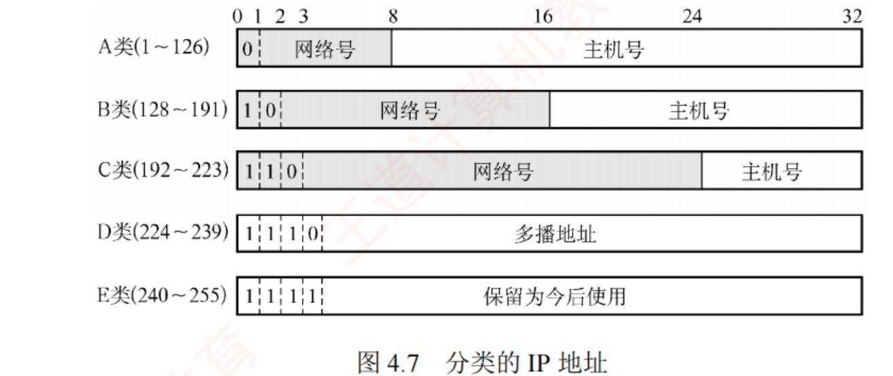
图 4.7 分类的 IP 地址 。五行分别是 A～E 类，左侧标注了各类的第一字节十进制范围 ，右侧的位标尺 0 1 2 3 … 8 … 16 … 24 … 32 标出了分界位置。⭐ 看图只需盯住两列 ：① 最左边那几格的 0/1 模式 （0 ／ 10 ／ 110 ／ 1110 ／ 1111）——它同时决定了「首字节范围」和「类别」，二者是一回事 ；② 灰色网络号块的右边界 落在第 8／16／24 位——这就是 A/B/C 类网络号 8/16/24 位的来历 。注意 D 类与 E 类没有主机号 ：D 类整块是多播地址（4.5 节），E 类保留。知识串联 · 「按首位模式分类」＝ 一棵最朴素的前缀树
分块与映射 A/B/C/D/E 五类的划分方式，本身就是一次变长前缀编码 ：
0… ⟹ A 类（占掉整个地址空间的 1/2）
10… ⟹ B 类（1/4）
110… ⟹ C 类（1/8）
1110… ⟹ D 类（1/16）
1111… ⟹ E 类（1/16）
⟹ 这正是《数据结构》里哈夫曼编码/前缀码 的形状：没有任何一个码字是另一个的前缀，所以能唯一解码。
「看第一字节就能定类别」这件事之所以成立，全靠这个前缀码性质。
分块与映射 而 CIDR 干的事，就是把这棵固定的树换成可以任意深浅的树 ——
前缀长度不再限于 1/2/3 位，而是 0～32 任选 ；
于是「查表」也从「看头几位」升级成了 4.2.4 的最长前缀匹配 。
分类编址 → CIDR 的这次演化，用一句话概括就是：从定长前缀码变成了变长前缀码。 必记 · 五类地址的首位模式与第一字节范围
类 首位模式 第一字节范围 网络号位数 主机号位数 A 0…1～126 8（含首位） 24 B 10…128～191 16 16 C 110…192～223 24 8 D 1110…224～239 全部是多播地址 （见 4.5）E 1111…240～255 保留为今后使用
速记：128、192、224、240 四个数把 0–255 切成五段 ——
这四个数正好是 27 、27 +26 、…，即「首位模式」的十进制值。
⚠️
A 类的 127 缺口要单独记：127 被环回测试占了，所以 A 类只到 126。 我的补讲 · 判断「一个地址属于哪类、能不能给主机用」的三秒流程
这是 4.2 里出现频率最高的微技能 ，几乎每道地址题的第一步都要用 ：
看第一段十进制 ⟹ 定类别：1–126 ＝ A ｜ 128–191 ＝ B ｜ 192–223 ＝ C ｜ 224–239 ＝ D（多播）｜ 240–255 ＝ E 。
127 单独一格，是环回。 看主机号是不是全 0 或全 1 （必须结合掩码看，不能只看末字节 ）⟹ 全 0 是网络地址、全 1 是广播地址，两个都不能分给主机 。看是不是三个私有块之一 ：10.0.0.0/8 · 172.16.0.0/12 · 192.168.0.0/16 ⟹ 是的话只能在内网用 。
⚠️ 第 2 步是全章最高频的失分点 ：
教材 15 题的干扰项就是「末字节是 255 所以是广播地址」——
在 /23 这样的掩码下，x.x.1.255 可能只是一台普通主机 ；反过来在 /26 下，x.x.x.63 才是广播地址 。
🐍 我复算过 11 道涉及子网/广播地址的教材题，全部吻合；错的人错的几乎都在这一步。 必记 · 五个特殊 IP 地址（不能用作普通主机地址）
特殊地址 含义 主机号全 0 表示本网络本身（网络地址） ，如 202.98.174.0 主机号全 1 表示本网络的广播地址 ，也称直接广播地址 ，如 202.98.174.255 127.×.×.× 本地环回测试 ；仅用于本机进程间通信 ，目的地址为环回地址的数据报不会被发送到任何物理网络 0.0.0.0 （32 位全 0）表示本网络上的本主机 ——常用于 DHCP （见 4.2.6），2017 年真题就考它 255.255.255.255 （32 位全 1）受限广播地址 ，仅在本网络内广播 （路由器不转发）
我的补讲 · 三个「2n −2」长得一样，扣的东西却不同
本章会反复出现形如 2n −2 的式子，但它们扣的不是同一对东西 ，混了就会算错 ：
式子 出现在 扣的是哪两个 27 −2 ＝ 126 A 类网络数 网络号 0 与网络号 127 （一个保留、一个环回）224 −2 / 216 −2 / 28 −2 每网主机数 主机号全 0（网络地址）与全 1（广播地址） 2n −2 子网/CIDR 块的可用地址数 同上：网络地址与广播地址 不减 2 B、C 类的网络数 （214 、221 ） 脚注：128.0 与 192.0.0 早期不能指派，现在都能了 [RFC6890]
⟹ 一句话判据：「减 2」减掉的永远是那一层里的首尾两个特殊值 ；问网络数就减网络号的特例，问主机数就减主机号的全 0 全 1。
⚠️ 唯一的例外是 /31 （新标准的点对点链路）：它不保留 网络地址与广播地址，2 个地址全可用（见后文）。 必记 · 表 4.2 三类地址的使用范围（必须能默写）
网络类别 最大可用网络数 第一个可用网络号 最后一个可用网络号 每网最大主机数 A 27 −2 ＝ 126 1 126 224 −2 ＝ 16777214 B 214 ＝ 16384 128.0 191.255 216 −2 ＝ 65534 C 221 ＝ 2097152 192.0.0 223.255.255 28 −2 ＝ 254
⚠️ 三处「减 2」的来历完全不同，考试专挑这个问：
① A 类网络数 −2 ：网络号 0（0.×.×.×）保留特殊用途、网络号 127 保留作环回测试。
B、C 类网络数不减 （脚注说明：128.0 与 192.0.0 早期不能指派，
现在都能指派了 [RFC6890] ）。
② 每网主机数 −2 ：主机号全 0 是
网络地址 、主机号全 1 是
直接广播地址 ，两个都不能给主机用。
⭐
这两个「−2」在后面 CIDR 的 2N −2 里还会反复出现，是同一个道理。 知识串联 · 「一个接口一个地址」，三科的编址都遵守这条
寻址 「IP 标识接口而非主机」这句话，在 408 里有两个孪生兄弟 ：
《组成原理》里一个 I/O 端口一个地址 （一台设备可能占好几个端口地址）；
《操作系统》里一个打开的文件一个描述符 （同一个文件被打开两次就是两个描述符）。
三者的共同点：编址对象是「连接关系／访问通道」，不是「实体」。 广播域 第 ③ 条「集线器或交换机连起来的多个网段仍属同一个网络（同一个广播域）」，直接指向 ch3 3.8 与本章 4.7.1 ——
这一句是 2019、2022 两道综合真题「设备选型」那一问的全部依据 ：
题目给你两组网络前缀不同的主机，问中间该放什么设备 ⟹ 因为交换机不分隔广播域，所以只能放路由器。 分层 第 ① 条「管理机构只分配网络号」＝ 分级授权 ：
与 ch6 域名系统的「顶级域授权给二级域」、OS 目录树的「父目录管子目录」是同一套治理结构 ——
全局只管到某一级，再往下由本地自治，这样全局表才不会爆炸。
必记 · IP 地址的四个重要特点（第 ② 条最常考）
① 分等级的地址结构 ——两大好处：管理机构只分配网络号 ，主机号由本单位自行分配 ；
路由器转发时只依据目的地址的网络号，从而显著减小路由表规模 ② IP 地址标识的是「网络接口」，而不是「主机」 ——
一台主机连到多个网络时，每个接口都要配一个 IP，且各地址的网络号必须不同
⟹ 路由器至少拥有两个或更多 IP 地址，每个接口对应一个不同网络号的地址。 ③ 用集线器或交换机连起来的多个网段，逻辑上仍属同一个网络（同一个广播域）
⟹ 其中所有主机的 IP 必须有相同的网络号 ，主机号唯一。 ④ IP 地址是逻辑地址 ，与底层物理硬件（MAC 地址）无关 ——正因如此，网络层才能屏蔽链路层的异构性。近年随着无分类编址 广泛应用，传统分类地址已逐渐退出历史舞台 （但考试仍在考，因为它是理解 CIDR 的台阶 ）。
我的补讲 · 数「一张拓扑图里要划几个子网」的两条规则
这是变长划分题的第 0 步，做错了后面全废 ：
规则 怎么数 常见漏项 ① 每个「广播域」算一个子网 从路由器的每个已用接口 往外看，一整片（含中间的交换机、集线器）算一个 把交换机两侧误算成两个 ——交换机不分隔广播域② 每条路由器之间的点对点链路也算一个 需求 ＝ 2 ⟹ 分一个 /30 整条链路被忘掉 ——这是最高频的漏项
例：3 个部门 + 2 台路由器互连（R1—R2 一条链路）
子网数 = 3（部门）+ 1（R1—R2 链路）= 4 个
⚠️ 若是 3 台路由器串成一条线（R1—R2—R3），链路有 2 条 ⟹ 一共 5 个子网
⟹ 数子网 ＝ 数广播域，而数广播域 ＝ 数「路由器用了几个接口」。
这条规则与 4.7.1 的冲突域/广播域是同一件事，2019 与 2022 两道综合真题都靠它开局。 我的补讲 · 「IP 标识接口而非主机」这一条，是三道大题的第一问
书上说 X ：IP 地址标识的是网络接口；路由器至少有两个 IP。潜台词是 Y ：做子网划分题时，路由器接口要占掉一个 IP 地址 ——
这就是为什么书上的例题里「50 台主机的部门」要按 51 个地址算。 所以能考 Z ：凡题目说「某部门有 N 台主机」，你要算的需求量是 N ＋ 1 （多出来的那个给路由器接口） ，
再按 2n −2 ≥ N+1 反推主机位 n 。
2009、2018、2019、2025 四道综合真题在这一步上一模一样。 第二个推论同样值钱 ：既然路由器每个接口都在不同的网络 里，那么「一台路由器连了 k 个网段」就意味着要划出 k 个子网 ——
点对点链路两端也是两个接口，因此那条链路本身也算一个网络 ，需要一个 /30 地址块 （见下文）。
很多人算子网时漏掉的正是「路由器之间那条线也要一个子网」。
知识串联 · IP 地址 vs MAC 地址：408 最经典的一组跨层对照
寻址 「④ IP 是逻辑地址，与 MAC 无关」这句话，把 ch3 与本章缝在了一起 ：
MAC 地址（ch3） IP 地址（本章） 长度 48 位 32 位 层次 平面的 （厂商编码只用于分配，不用于转发）分等级的 （网络号 + 主机号）谁给的 网卡出厂时固化 管理机构分配 / DHCP 动态获得 传输中变不变 逐跳都变 端到端不变 （唯一例外：NAT）一句话 IP 地址负责「找到那个网络」，MAC 地址负责「在那个网络里找到那台机器」
分块与映射 「网络号 + 主机号」的两级结构，与《组成原理》Cache 的「块号 + 块内地址」、《操作系统》页表的「页号 + 页内偏移」是同一个套路 ：
高位定位「哪一组」，低位定位「组内第几个」 ；
而 AND 掩码取网络号，正是组原里用位屏蔽取字段的那套操作。
路由表压缩 「只按网络号转发以减小路由表」＝ OS 里「用页表而不是逐字节映射」的同一笔账 ：
牺牲一点精细度，换取表规模从「主机数量级」降到「网络数量级」。 2. 划分子网
传统两级 IP 地址结构有三个缺点：地址空间利用率低 （一个物理网络吃掉一整个网络号）、路由表规模过大 、地址分配缺乏灵活性 。从 1985 年起 在 IP 地址中增加「子网号」字段，形成三级结构：
IP 地址 ::= { <网络号> , <子网号> , <主机号> }
└── 对外可见 ──┘ └── 单位内部自己划 ──┘
我的补讲 · 「无法从 IP 地址本身判断是否划分了子网」——这句话有三个直接后果
书上说 X ：划分子网只动主机号、不改网络号，因此从 IP 地址本身看不出有没有划子网。
潜台词是 Y ：
掩码是必须单独告诉你 的信息 ，它不藏在地址里。
所以能考 Z（三个后果，都出过题） ：
题目只给「192.168.1.100」而不给掩码 ⟹ 无法确定它的网络地址 （这正是 CIDR 下「/前缀长度不可省略」的由来 ）。配置主机时必须同时配掩码 （三条使用原则的第 ① 条），否则主机不知道该直接交付还是间接交付 。路由器交换路由信息时必须同时通告网络地址和掩码 ——这一条到 4.4 会变成 RIP 与 OSPF 的一个具体差别：RIP 报文里不带掩码，所以它不支持 VLSM；OSPF 带，所以它支持 。
⭐ 第 3 条是把 4.2 与 4.4 缝在一起的一针，很多人读完两节也没发现它们在说同一件事。 必记 · 划分子网的三条基本思想
① 对外透明 ：单位对外仍表现为单一网络 ，外部路由器无须感知其内部子网结构 。② 内部灵活划分 ：从原主机号 中借用若干位作为子网号 ，主机号位数相应减少。③ 分层转发 ：外部路由器按网络号 把数据报送到该单位的边界路由器 ；边界路由器再结合子网号 交付到具体子网，最后送到目的主机 。书上灰框的两句话，句句是考点 ：
① 划分子网只对主机号部分再划分，不改变原网络号 ，因此无法从 IP 地址本身判断是否划分了子网 （必须给掩码）。
② 划分子网提升了灵活性，但也使可分配主机总数略有减少 （每个子网都要各扣掉一个网络地址和一个广播地址 ）。
我的补讲 · 掩码的三种写法要能瞬间互换（考场上题目不会照顾你）
同一个掩码，题目可能用三种面孔出现，必须能秒转 ：
前缀 点分十进制 块大小 可用主机 常见用途 /24 255.255.255.0 256 254 一个标准 C 类网 /25 255.255.255.128 128 126 切成两半 /26 255.255.255.192 64 62 「50 台主机的部门」 /27 255.255.255.224 32 30 「20 台主机的部门」 /28 255.255.255.240 16 14 小部门 /29 255.255.255.248 8 6 「5 台主机的部门」 /30 255.255.255.252 4 2 路由器之间的点对点链路
⭐ 转换心法：掩码的那个「怪字节」＝ 256 − 块大小 ；反过来块大小 ＝ 256 − 怪字节 。
例：/27 ⟹ 主机位 5 ⟹ 块大小 25 ＝32 ⟹ 怪字节 ＝ 256−32 ＝ 224。
这张表的四个高亮行覆盖了历年真题里绝大多数的「部门规模」，值得直接背下来。 必记 · 子网掩码与三条使用原则 2022
子网掩码是一个与 IP 地址对应的 32 位二进制串，由一串 1 后跟一串 0 组成 ：
1 对应网络号 + 子网号，0 对应主机号。
把 IP 地址与子网掩码逐位「与」（AND），得到的就是子网地址（网络地址）。 默认子网掩码 ：A ＝ 255.0.0.0 · B ＝ 255.255.0.0 · C ＝ 255.255.255.0 ；现在的互联网标准规定每个网络都要配置子网掩码 。三条使用原则 ：① 配 IP 必须同时配掩码；② 同一子网内所有主机及路由器接口 必须配置相同 的掩码；
③ 路由表的三项核心信息 ＝ 目的网络地址 + 子网掩码 + 下一跳地址 。 路由器交换路由信息时，必须同时通告目的网络地址和 子网掩码 ——
这一句在 4.4 讲 RIP 与 OSPF 时会变成「RIP 的报文里带不带掩码」这个具体差别。
知识串联 · 「直接交付 / 间接交付」是本章后半程所有内容的总开关
一段 vs 端到端 这一小段话，后面被引用了至少四次 ：
后续小节 它在这一段的基础上加了什么 4.2.4 转发过程 把「间接交付」展开成路由器的四步转发算法 4.2.5 ARP 回答「怎么拿到那个 MAC」——直接交付查目的主机的 MAC，间接交付查网关的 MAC 4.7.3 把它写成综合题的五步答题模板 ch5 / ch6 更高层完全看不见 这一区别——这正是网络层「虚拟互连网络」抽象的价值
分块与映射 「先做 AND 判断在不在同一块，再决定走近路还是远路」 ，
与《组成原理》Cache 的「先比标记位判断命中，命中走近路（读 Cache）、不命中走远路（访主存）」是同一个控制流 ；
连代价比例都相似：命中/直接交付是一跳，未命中/间接交付要多走好几跳。 必记 · 默认网关与「直接交付 / 间接交付」 2015、2016、2019、2022 四年真题
默认网关 ＝ 本子网所连路由器接口 的 IP 地址。
主机发数据前，先把
目的 IP 与自身 IP、自身子网掩码 比较，判断是否在同一子网：
目的IP AND 我的掩码 == 我的IP AND 我的掩码 ？
├─ 相等 ⟹ 同一子网 ⟹ 直接交付
│ 用 ARP 查【目的主机】的 MAC，封成帧直接发过去
└─ 不等 ⟹ 不同子网 ⟹ 间接交付
用 ARP 查【默认网关】的 MAC，把帧发给路由器，由它在网络层转发
⚠️ 这段话是本章跨节引用最多的一段：4.2.4 转发过程、4.2.5 ARP、4.7 路由器工作原理全都建立在它之上。 我的补讲 · 「掩码配错」会长什么样？两道教材题的完整推演
书上 45、58 两题都在考同一个场景：同一物理网段上的两台主机配了不同的掩码 。
后果不是「都不通」，而是诡异的单向可达 ，必须能推演 ：
设 A = 192.168.1.10/24，B = 192.168.1.200/25（同一根网线上）
A 判断 B：192.168.1.200 AND 255.255.255.0 = 192.168.1.0
A 自己的网络也是 192.168.1.0 ⟹ A 认为【同网】⟹ 直接交付
B 判断 A：192.168.1.10 AND 255.255.255.128 = 192.168.1.0
B 自己的网络是 192.168.1.128 ⟹ B 认为【不同网】⟹ 发给网关
⟹ A 直接把帧丢给 B（能到）；B 却把回包交给了路由器（可能绕、可能回不来）
⟹ 结论一句话：「同网与否」是各判各的 ，两边的判断可以互相矛盾。
所以能考 Z ：
① 「为什么 A ping 得通 B，B ping 不通 A」——答掩码不一致；
② 「该改哪一台的配置」——改成与本网段其余主机相同 的掩码 （三条使用原则的第 ② 条）；
③ 2015 真题的「网关配错」是同一族问题的另一种版本。 陷阱 · 判断「是否同一网络」，用的是发送方自己 的掩码
这是本章 45 题与 58 题的胜负手，也是最反直觉的一处 ：
主机 A 判断「目的主机在不在我这个网」，用的是 A 自己的子网掩码 去 AND 目的 IP——它根本不知道目的主机的掩码是多少。 后果是：如果 A 和 B 的掩码配错成不一致，会出现「A 认为 B 在同网、B 认为 A 在外网」这种单向可达的怪现象 ——
而这正是很多真题题干里「为什么 ping 不通」的原因。 配套的第二条：路由器不会把分组从它进来的那个接口再转发回去
（否则就绕回去了 ）——做转发路径题时，这条能直接排掉一个选项。
3. 无分类编址 CIDR 考点追踪：CIDR 地址块的分析（2011、2015、2016、2019、2023）
无分类域间路由选择 CIDR 是一种基于可变长子网掩码 的地址分配与路由聚合机制，用来消除 A/B/C 类地址的限制、提升地址空间利用率。核心思想：不再区分网络类别，改用「网络前缀」标识网络部分 ，前缀长度（掩码中连续 1 的个数）可任意指定，不再局限于 8/16/24 位 。
我的补讲 · CIDR 题的四个标准问法，答案都从同一组数推出来
拿到「a.b.c.d/n」，先算出三个数 ，四类问法就都能答 ：
主机位 h = 32 − n 块大小 = 2^h 怪字节 = 256 − (块大小 mod 256)
① 网络地址（最小地址）＝ 把主机位全置 0
② 广播地址（最大地址）＝ 把主机位全置 1 ＝ 下一个网络地址 − 1
③ 地址总数 ＝ 2^h ④ 可分配主机数 ＝ 2^h − 2
⑤ 可用地址范围 ＝ 【网络地址+1】～【广播地址−1】
问法 答 「该地址块的最小/最大 地址」 ① 与 ② 「能容纳多少台 主机」 ④，别忘了减 2 「某地址是否属于 该块」 拿它与掩码 AND，看是否等于 ① 「两个地址在不在同一网 」 各自与同一个 掩码 AND，比结果
⚠️ 第二问的变体最坑：「该网络还能再连多少台 主机」——要在 2h −2 的基础上再减去已用的主机数和路由器接口数 。
2018 真题就是这么问的：126 − 80 − 1 ＝ 45 （🐍 已复算，与书答吻合）。 必记 · 斜线记法与地址块的四件事
CIDR 结构：IP 地址 ::= {<网络前缀>, <主机号>} ，写作
「IP 地址/前缀长度」 。
只要知道地址块中的任意一个地址及其前缀长度，就能定出：最小地址、最大地址、地址总数、可用主机数。
以 128.14.32.5/20 为例（前 20 位是前缀）
IP 地址 = 10000000.00001110.0010|0000.00000101
掩码 = 11111111.11111111.1111|0000.00000000 = 255.255.240.0
网络前缀 = 10000000.00001110.0010|0000.00000000 = 128.14.32.0 ← 最小地址
最大地址 = 10000000.00001110.0010|1111.11111111 = 128.14.47.255 ← 广播地址
地址总数 = 2^(32-20) = 2^12 = 4096 可分配 = 4096 - 2 = 4094
🐍 已复算：网络 128.14.32.0、掩码 255.255.240.0、广播 128.14.47.255、共 4096 个地址 —— 与书吻合。
⚠️
在 CIDR 下「/前缀长度」不可省略：只给 128.14.32.5 无法确定它的网络地址。
⭐ CIDR 地址块的地址总数一定是 2 的整数次幂 ；前缀越短 ⟹ 主机位越多 ⟹ 块越大。 知识串联 · 掩码 AND 运算，是组原位操作在网络里的现场演出
位运算 「IP AND 掩码 ＝ 网络地址」这一步，在《组成原理》里叫按位与做位屏蔽 ：
掩码里的 1 保留原位、0 清零，正是 ch4 逻辑指令那一节讲的 AND 的标准用法 ；
而「求广播地址 ＝ 主机位全置 1」在组原里叫「与掩码的反码按位或 」。 分块与映射 「前缀长度 n 决定块大小 232−n 」，与 OS 的「页内偏移 k 位 ⟹ 页面大小 2k 」是同一个公式 ：
都是「低位留几位，块就多大」 。连「地址必须对齐到块边界」这条约束也一样 ——
页框起始地址必是页面大小的整数倍，子网起始地址必是块大小的整数倍。 空间换时间 组原里判断「两个地址是否同一 Cache 行」＝ 高位相同；本章判断「两个 IP 是否同一网」＝ 网络号相同 ——
做题时的动作完全一致：把地址右移 h 位后比较 。
我的补讲 · 手算网络地址／广播地址的两条捷径（考场上别真去写 32 位二进制）
32 位手写一遍要 30 秒，一道题里往往要算五六次，必须提速。两条捷径 ：
① 只算「有零有一的那一段」。 前缀是 8 的倍数时（/8、/16、/24）直接按段截断，一位二进制都不用写 ；
不是 8 的倍数时，
只有跨界的那一个字节需要展开 ，其余字节照抄或清零。
例 /20 ⟹ 前两段照抄、第三段展开 （前 4 位保留、后 4 位清零/置一）、第四段清零/置一。
② 用「块大小」直接跳。 块大小 ＝ 256 − 掩码中那个非 0 非 255 的字节值 ，
网络地址就是「该字节向下取到块大小的整数倍」，广播地址 ＝ 下一个网络地址 − 1 。
例 128.14.32.5/20 ⟹ 掩码 255.255.240.0，关键字节 240
块大小 = 256 − 240 = 16
第三段 32 是 16 的整数倍 ⟹ 网络地址第三段 = 32 ⟹ 128.14.32.0
下一个块从 32+16 = 48 起 ⟹ 广播 = 128.14.47.255
⭐ 常用块大小表（背下来，考场省一半时间）：
前缀 /25 /26 /27 /28 /29 /30 末字节掩码 128 192 224 240 248 252 块大小 128 64 32 16 8 4 可用主机 126 62 30 14 6 2
这张表里的 62 / 30 / 6 / 2 四个数字，在真题里出现的频率高得离谱——因为它们对应「50 台/20 台/5 台/点对点」这四种最常见的部门规模。 我的补讲 · 「借几位前缀就加几」——这条加法贯穿整个 4.2
书上说 X ：/20 的地址块借 3 位划子网，每个子网变成 /23。
潜台词是 Y ：
前缀长度是可以做加法的 ，而且方向永远是「越切越长」：
父块 /n ──借 k 位子网号──▶ 2^k 个子块，每个 /(n+k)
/24 借 1 位 ⟹ 2 个 /25 /24 借 2 位 ⟹ 4 个 /26
/24 借 3 位 ⟹ 8 个 /27 /20 借 3 位 ⟹ 8 个 /23
所以能考 Z（三种问法，全靠这一条加法） ：
① 「要划出 m 个子网，前缀该多长」⟹ 取最小的 k 使 2k ≥ m，前缀 ＝ n+k；
② 「划成 /(n+k) 后每个子网能容纳几台」⟹ 232−n−k −2；
③ 「这样划会不会不够用」⟹ 拿 ② 的结果和需求比。
⚠️ 定长划分时这条加法就够了；变长划分时不能只用它 ——变长是「每块单独定前缀」，不是「统一借 k 位」。 陷阱 · 「CIDR 不使用子网」≠「用了 CIDR 就不能划子网」
书上专门用一段话强调这件事 ：「CIDR 不使用子网」是指它不在全局地址结构中预设固定的子网字段 ，
但这并不妨碍 获得 CIDR 地址块的单位在其内部继续划分子网。 例：某单位拿到一个 /20 地址块后，可从主机号里再借 3 位划成 8 个子网，此时每个子网的前缀变成 /23 。
（20 + 3 ＝ 23，借几位前缀就加几 ）这正是 CIDR 的最大好处，书上原话值得背下来 ：
「在网络外部 ，可通过较短前缀进行路由聚合 ，显著减少全局路由表项；在网络内部 ，可延长前缀以灵活划分子网 。」
——外部聚合、内部细分，八个字概括整个 CIDR。
4. 路由聚合 考点追踪：路由聚合的原理（2009、2011、2013、2014、2018）
一个大的 CIDR 地址块包含多个较小的地址块，于是在路由表里可以用一个较大的块代替多条较小的路由 ，这称为路由聚合 ——它使路由表中的一个项目能代表原来的多条路由，从而压缩路由表规模、提升网络性能 。
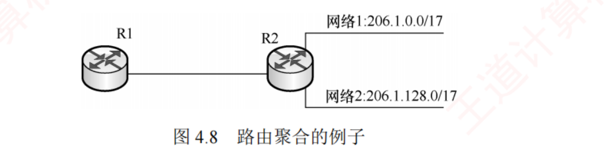
图 4.8 路由聚合的例子 。拓扑极简：R1 —— R2 ，R2 右侧挂着网络 1：206.1.0.0/17 与网络 2：206.1.128.0/17 。⭐ 图虽小，但它把聚合的两个前提画得清清楚楚 ：① 两个网络地址相邻 （前 16 位相同、第 17 位分别为 0／1）；② R1 到它们的下一跳都是 R2 ——这两条缺一不可 。于是 R1 的两条路由合并成一条 206.1.0.0/16 → R2。 ⚠️ 反过来想：如果网络 2 挂在别的路由器上，哪怕地址再相邻也不能合并——合并了就会把去网络 2 的分组错送给 R2。 知识串联 · 路由聚合、Cache 分块、多级页表：同一笔「压缩表规模」的账
分块与映射 三者要解决的问题一模一样：一张表太大了，装不下也查不动 ：
原始的表有多大 怎么压 代价 路由聚合 （本节）每个网络一条 ⟹ 全球几十万条 用一条 /16 代替两条 /17 粒度变粗，可能连不该管的地址也吸进来 Cache 分块 （组原）每字节一个标记 ⟹ 标记比数据还大 一整块共用一个标记 块内有用不上的字节（伪共享） 多级页表 （OS）4GB/4KB ＝ 100 万个页表项 分级，只为用到的部分建二级表 多一次访存
⟹ 三者的收益都来自「地址空间的连续性 」：相邻的东西往往去同一个地方，于是可以打包处理。
这也解释了为什么地址分配必须连续 ——不连续就聚合不了，ISP 分配地址块时最看重的就是这一点。 必记 · 路由聚合三步法（本章第三条母套路）
第 1 步 找出这些网络地址【完全相同】的前几段，原样保留
第 2 步 只把【有差异】的那一段展开成 8 位二进制
第 3 步 从高位起数出【连续相同】的位数 k
聚合前缀长度 = (相同段的位数) + k
书上的例子（图 4.8） ：R2 下挂
206.1.0.0/17 与
206.1.128.0/17 ，R1 到两者的下一跳都是 R2。
两者前 16 位完全相同、第 17 位分别为 0 和 1 ⟹ 聚合成
206.1.0.0/16 ，两条路由变一条。
🐍 已复算：collapse_addresses 结果就是 206.1.0.0/16 —— 与书吻合。
⚠️
能聚合的前提是「下一跳相同」 ——
下一跳不同的路由再怎么地址相邻也不能合并 ，这是选择题的常见错项。
我的补讲 · 四个 /24 聚合成什么？一道能直接抄的范例
教材综 04 是聚合题的标准形态：给四个连续的 /24，问最大聚合 。手算过程写给你看 ：
212.56.132.0/24 132 = 1000 0100
212.56.133.0/24 133 = 1000 0101
212.56.134.0/24 134 = 1000 0110
212.56.135.0/24 135 = 1000 0111
↑↑↑↑↑↑ 高 6 位完全相同，第 7、8 位取遍 00~11
⟹ 相同段位数 = 16（前两段）+ 6 = 22
⟹ 聚合结果 212.56.132.0/22 🐍 复算吻合
⭐ 一个更快的心算法：要聚合的块数 m 若是 2 的幂，则前缀长度 ＝ 原前缀 − log₂m
（
本例 4 个 /24 ⟹ 24 − 2 ＝ /22 ）。
但用这个捷径前必须先验两件事 ：
① 这 m 个块地址连续 ；② 起始块的地址对齐 到聚合后的边界
（
本例起点 132 是 4 的倍数 ✔；若从 133 开始就聚不了 ）。
🐍 教材里另外几道聚合题我也复算过：/21、/25、/24、/19 各一例，全部吻合。 我的补讲 · 聚合题的两个坑：「多聚了」与「少聚了」
书上说 X ：从高位数出连续相同的位数，就是聚合前缀长度。
潜台词是 Y ：
这个数只能不多不少 ——
多聚（前缀取太短）会把不属于自己 的地址也吸进来，造成错误转发；
少聚（前缀取太长）则聚不完，还得留着多条路由。
所以能考 Z ：
选择题最爱给你四个前缀长度让你挑，正确答案永远是「能覆盖全部给定网络的最长 前缀 」 。
换句话说：先算出必须多短才能全包住，然后一位都不再放宽。
口诀：聚合取【最长的公共前缀】，一位都不能多让
反例：要聚合 192.168.4.0/24 与 192.168.7.0/24
4 = 000001|00 7 = 000001|11
高位连续相同 6 位 ⟹ 192.168.4.0/22
⚠️ /22 实际覆盖 4、5、6、7 四个网络——比要求的多包了 5 和 6，
但这是【聚合必然的代价】，只要 5、6 也归自己管就没问题；
若 5、6 属于别人，则【不能聚合】。
⟹ 综合题里出现「聚合后是否会影响其他网络」这一问时，考的就是上面这个副作用。 5. 最长前缀匹配 考点追踪：最长前缀匹配机制（2013、2015）
我的补讲 · 为什么「前缀最长 ＝ 最精确」？想通了就不用背
书上说 X ：匹配多条时选前缀最长的，因为前缀越长地址块越小、信息越具体。潜台词是 Y ：把它翻译成日常语言就很自然了 ——
路由表就像一份「投递指南」：「凡是寄往中国的，交给 A」和「凡是寄往北京海淀区的，交给 B」同时命中时，
当然听后者的 ，因为后者对这个具体地址知道得更多 。
默认路由 0.0.0.0/0 就是那条「其余一律交给 A」，最笼统，所以优先级最低；
特定主机路由 /32 是「专门给张三的信交给 C」，最具体，所以优先级最高。 所以能考 Z ：① 选择题问优先级顺序 ⟹ 前缀长度降序；② 综合题给一张表让你判走哪个接口 ⟹ 逐条 AND 后取最长。 ⚠️ 最经典的一道设计（2013 综合真题）：表里同时有 /23 和 /25 两条能匹配同一个目的地址 ——
此时必须走 /25 那条，哪怕 /23 那条看起来更「主干」 。
🐍 我复算过这道题的裁决过程，与书答吻合。
必记 · 最长前缀匹配（也称最佳匹配）
使用 CIDR 时，路由表项由「网络前缀」和「下一跳地址」组成。查表时目的地址可能匹配多条路由，
此时应选择网络前缀最长 的那一条 ——因为前缀越长，地址块越小，路由信息就越具体、越精确 。优先级从高到低 ：特定主机路由 /32 > 前缀长的普通路由 > … > 默认路由 0.0.0.0/0（前缀长度 0，最低） 。实现 ：为高效实现最长前缀匹配，路由器通常把 CIDR 路由表组织成层次式数据结构（如 Trie 树） ，自上而下快速定位。
我的补讲 · 一道「四合一模板题」的完整走法（教材综 06）
这类题把本节几乎所有考点串在一道里，走一遍就等于复习了半节 ：
问 考什么 怎么做 ① 分组 A 走哪个接口 最长前缀匹配 逐条 AND，命中 /30 那条（前缀 30 位最长） ② 分组 B 走哪个接口 同上 命中 /28 那条 ③ 若加一条特定主机路由 /32 优先级最高 一旦命中就走它，其余全被压过 ④ 都不匹配时 默认路由 走 0.0.0.0/0 ；若连默认路由都没有 ⟹ 报「目的不可达」
🐍 我复算过这道题：分组 A 命中 30 位 前缀那条、分组 B 命中 28 位 那条，与书答一致。
⭐ 做这类题的两个提速习惯 ：
① 先把表按前缀长度从长到短 重排一遍（在草稿纸上标个序号即可），然后从上往下扫，第一个命中就停；
② 只展开「有 0 有 1 的那一个字节」，其余字节直接比十进制。
这两招能把一道 5 分钟的题压到 2 分钟。 我的补讲 · 查路由表的标准动作，三行写完（综合题必考步骤）
拿到一张路由表和一个目的 IP，机械地做三件事，一步都别跳 ：
逐行做 目的IP AND 该行掩码 ，把结果与该行的「目的网络」比较，相等即为一条候选 。在所有候选中挑前缀最长 的那一条 （掩码里 1 最多的那行 ）。按该行的下一跳转发 ；若该行下一跳写的是「直接交付」，就在本地网络用 ARP 找 MAC 直接送到 。
⚠️ 三个高频失分点 ：
① 忘了默认路由 0.0.0.0/0 也是候选 （它匹配一切，只是前缀最短）；
② 把「候选最多的」当答案 （要选前缀最长，不是匹配得最多）；
③ 忘了检查「特定主机路由」 （
掩码 255.255.255.255，前缀 32，一旦命中就是它，优先级最高 ）。
⭐
考场提速技巧 ：
先把路由表按前缀长度从长到短 排一遍，然后从上往下扫，第一个匹配上的就是答案 ，扫到即停 ——
这正是路由器内部真实的做法（Trie 树自上而下），也省掉了「比较谁更长」这一步。 知识串联 · 最长前缀匹配 ＝ 数据结构的 Trie 树 ＋ 组原的按块匹配
分块与映射 「前缀越长越具体」这个规则，在《数据结构》里就是 Trie（字典树）的最深匹配 ：
沿着树往下走，能走多深走多深，最后停下的那个节点就是答案 ——王道在正文里直接点了 Trie 树的名字，这是本章少见的明确跨科指路。 空间换时间 路由器把路由表组织成层次结构，与《组成原理》Cache 的组相联映射是同一笔账 ：
全相联查得准但慢，直接映射快但冲突多，组相联折中 ；路由表若逐条线性比对就是 O(n)，组织成 Trie 后是 O(前缀长度)。 分块与映射 再往回看：路由聚合 ＝ 把多个小块合成大块 ，与 OS 里大页（huge page） 、组原里增大 Cache 行 的动机一模一样 ——
都是「用一条表项覆盖更多地址，来压住表规模的爆炸」。
而副作用也一模一样：粒度变粗，可能把用不着的东西也包进来。
6. 子网划分的应用举例（本章综合题的主干，逐字精读）
通常有两类划分方法：定长子网掩码 与变长子网掩码 。
我的补讲 · 定长 vs 变长，考试其实是在考「浪费了多少」
把书上同一个例子（50/20/5 台，208.115.21.0/24）两种做法的结果并排放，浪费一目了然 ：
部门（需求含路由器接口） 定长：分到 浪费 变长：分到 浪费 部门 1（需 51） /26，62 个 11 /26，62 个 11 部门 2（需 21） /26，62 个 41 /27，30 个 9 部门 3（需 6） /26，62 个 56 /29，6 个 0 剩余可用 64 个 （一个 /26）152 个
⟹ 同样的 256 个地址，定长只剩 64 个可周转，变长剩 152 个——差了 2.4 倍。
这就是书上「定长容易造成地址资源浪费」那句话的定量版本。
所以能考 Z ：
① 「采用定长/变长后还剩多少地址」是常见问法（答案 64 与 152 都要会算）；
② 「为什么用变长」——答「按需分配，减少浪费」；③ 反过来「定长有什么好处」——方案统一、掩码只有一个，配置和排错简单 。
🐍 两套方案的每一个数字我都用 ipaddress 复算过，与书上表格逐格吻合。 必记 · （1）定长子网掩码 2009、2010、2017、2018
定长 ＝ 每个子网使用相同 的掩码、分到相同 数量的地址 ⟹
容易造成地址浪费 。
书上例题 ：单位拥有
208.115.21.0/24 ，三个部门主机数
50、20、5 ，采用定长掩码。
各部门含一个路由器接口 ，实际需求为 51、21、6 个地址 ；从主机号借
2 位 作子网号 ⟹ 4 个子网，每子网可用
28−2 −2 ＝ 62 个，满足最大的那个需求（51）。
后 8 位二进制展开 地址块 分配 208.115.21.00 000000 ～ .00 111111 208.115.21.0/26 部门 1（需 51） 208.115.21.01 000000 ～ .01 111111 208.115.21.64/26 部门 2（需 21） 208.115.21.10 000000 ～ .10 111111 208.115.21.128/26 部门 3（需 6） 208.115.21.11 000000 ～ .11 111111 208.115.21.192/26 留作备用
子网掩码 ＝ 255.255.255.11000000 ＝ 255.255.255.192。
🐍 已复算四个子网地址、掩码与可用主机数 62 —— 全部吻合。
⚠️
看清浪费在哪：部门 3 只要 6 个地址，却分走了 64 个。 知识串联 · 变长划分 ＝ 一次「首次适应 / 最佳适应」的内存分配
分配策略 ⭐
把子网划分和《操作系统》的动态分区分配并排看，会发现连术语都能对上 ：
本节 OS 动态分区分配 一个 /24 地址块 一整块空闲内存 按需求从大到小切块 「最大适应」思路：先满足大的，避免大需求无处安放 块起始地址必须对齐到块大小的整数倍 伙伴系统（buddy system）的对齐要求，一模一样 定长划分造成的浪费 固定分区的内部碎片 剩下 152 个零散地址 外部碎片
⟹ 「块大小必须是 2 的幂 + 起始地址必须对齐」这两条约束，正是伙伴系统 的定义 ——
所以变长子网划分在数学上就是一次伙伴系统分配，书上说的「二叉树模型」也正是伙伴系统的那棵树。
想不清楚该怎么切的时候，就画那棵二叉树：每切一刀就是把一个节点劈成两个孩子。 必记 · （2）变长子网掩码 VLSM 2019、2021、2025
变长 ＝ 每个子网可用不同 掩码、分到不同 数量的地址 ⟹
更高效、少浪费 。
同样的条件 ：部门 1 需 51 个 ⟹ 主机位
6 （2
6 −2＝62 ≥ 51）⟹ 前缀
/26 ；
部门 2 需 21 个 ⟹ 主机位
5 （30 ≥ 21）⟹
/27 ；部门 3 需 6 个 ⟹ 主机位
3 （2
3 −2＝6 ≥ 6）⟹
/29 。
后 8 位范围 地址块 子网掩码 可分配 分配 .00 000000 ～ .00 111111 208.115.21.0/26 255.255.255.192 62 部门 1 .010 00000 ～ .010 11111 208.115.21.64/27 255.255.255.224 30 部门 2 .01100 000 ～ .01100 111 208.115.21.96/29 255.255.255.248 6 部门 3 .01101000 ～ .11111111 剩余 — 256−64−32−8 ＝ 152 留作备用
🐍 已复算：/26 用 .0–.63、/27 用 .64–.95、/29 用 .96–.103、剩余 152 个 —— 全部吻合。
⭐
两条书上明写的规矩 ：
① 每个子网的网络地址（最小地址）＝ 主机号全 0 的地址；
② 划分方案不唯一 ，但建议从最大的子网开始划 （以避免地址碎片）。 我的补讲 · 变长划分的「二叉树模型」：判断一个方案合不合法
综合题有时不让你划，而是给你一组子网问「这样划行不行」。用二叉树模型三秒判定 ：
把每个子网写成【去掉公共前缀后的二进制串 / 前缀增量】，摆成一棵二叉树：
208.115.21.0/26 ⟹ 00
208.115.21.64/27 ⟹ 010
208.115.21.96/29 ⟹ 01100
判据① 任意两串【不能互为前缀】（不能有祖先—后代关系）
—— 若 "01" 和 "010" 同时出现就冲突了（地址重叠）
判据② 若要求【正好用完】父块，全部串必须【刚好铺满】这棵树
⟹ 判据 ① 就是「不重叠」，判据 ② 就是「不留缝」。绝大多数题只考 ①。
这个模型还能一眼看出「最小子网有多大」 ：
把最大的子网放树的最左边、用最短的串，
之后每个子网的串长依次 +1，最后两个子网必然等长 ——
教材 64 题问「按这种分法最小的子网能容纳几台」，靠的就是这条规律（答案 254，🐍 已复算）。
⚠️
书上也提到可以「借助二叉树模型辅助分配」，并要求各子网地址范围互不重叠，且起始地址对齐到其前缀对应的边界 ——
这两句话就是判据 ① 与「对齐」的书面表述。 我的补讲 · 变长子网划分的标准解法：四步 + 一张验算表
这是本章综合题出现频率最高的一问，把动作固定下来，考场上不用思考 ：
算需求 ：每个部门 主机数 ＋ 1（路由器接口） ；别忘了路由器之间的每条点对点链路各算一个「网络」，需求为 2。 定主机位 n ：找最小的 n 使 2n −2 ≥ 需求 ；前缀 ＝ 32 − n 。从大到小、边界对齐地切块 ：每个块的起始地址必须是它自己块大小的整数倍 （这叫「对齐」，是唯一容易错的一步）。写出四件东西 ：CIDR 表示、子网掩码、地址范围（最小～最大）、可用主机范围（最小+1 ～ 最大−1）。
验算表（写完必查，30 秒） ：
查什么 怎么查 够不够 每块的 2n −2 ≥ 该部门需求？（含路由器接口） 对不对齐 每块起始地址 ÷ 块大小 是否整除？不整除就是切错了 重不重叠 前一块的最大地址 < 后一块的最小地址？ 漏没漏网络 数一数路由器的接口数：每个接口所在的网段都必须有一个块
⭐ 第 3 步「对齐」失手的典型样子：需求 30 的部门想从 .70 开始切一个 /27——错，/27 的块大小是 32，起点只能是 .0/.32/.64/.96…
我按这四步复算过 2009／2018／2019／2021／2025 五道综合真题，步骤完全通用。 知识串联 · /30 这个小东西，在三道综合真题里都当了「第一问」
对端推导 只要拓扑图上出现 x.x.x.d/30，几乎必有一问是「对端接口的地址是多少」 ：
真题 给的 要推的 2016 201.1.3.10 网络 201.1.3.8/30 ⟹ 对端 201.1.3.9 2019 R 的下口 192.168.1.253/30 设备 1 的 IF1 ＝ 192.168.1.254 2023 195.123.0.33 网络 195.123.0.32/30 ⟹ 对端 195.123.0.34
⟹ 套路固定成一句话：末字节 ÷ 4 向下取整再 ×4 得网络地址，网络地址 +1 与 +2 就是两端，+3 是广播。
🐍 上面三个数字我都用 ipaddress 复算过，与书答一致。
分块与映射 「/30 恰好剩 2 个可用地址」是「块大小 4，扣掉首尾 2 个」的最小非平凡情形 ——
再切一刀就是 /31，此时块大小 2、扣掉首尾就一个不剩，所以新标准干脆规定 /31 不扣 。
这是「规则在边界处必须重新定义」的一个漂亮例子，与 OS 里「页面大小不能小于一个页表项」是同一类边界考量。 必记 · 点对点链路用 /30（真题口径）还是 /31（新标准）
传统做法（统考真题至今仍用这个口径 ） ：连接两个路由器接口的点对点链路分配一个
/30 地址块——
主机号 2 位，共 4 个地址，扣掉网络地址与广播地址后恰好剩 2 个 ，给链路两端各一个 。
/30 的四个地址，用途一目了然：
x.x.x.0 网络地址 ✗ 不能用
x.x.x.1 接口 A ✓ ⟹ 记法：【网络地址+1】与【广播地址−1】
x.x.x.2 接口 B ✓
x.x.x.3 广播地址 ✗ 不能用
新标准（谢希仁第 8 版，书上脚注特别提醒「近年统考真题仍采用旧标准」） ：
这类链路两端接口可不分配 IP ；若要分配，则用 /31 ——只有 1 位主机号、2 个地址，
无须保留网络地址与广播地址 ，两个地址全部可用，实现零浪费。
⟹ 考场上一律按 /30 作答；/31 只在题目明确提到「新标准」时才用。 我的补讲 · 「点对点链路也是一个网络」，这是子网题最常见的漏项
书上说 X ：点对点链路分配一个 /30 地址块。
潜台词是 Y ：
一条只连了两个路由器接口、上面一台主机都没有的线，在 IP 的世界里也是一个完整的「网络」 ——
因为路由器的每个接口必须处于不同的网络（IP 标识接口，见前文的四个特点之②）。
所以能考 Z ：
题目画一张拓扑，三个部门 + 两台路由器互连，要划的子网不是 3 个而是 4 个甚至 5 个
（
3 个部门网段 ＋ 路由器之间的每条链路各一个 ）。
2016 的 201.1.3.10、2023 的 195.123.0.33、教材综合题 12 的 203.10.2.1，三处都是在考「这个地址属于哪条 /30 链路」。
⭐
快速判定某地址属于哪个 /30 ：
把最后一个字节 除以 4 取整再乘 4 ，就是网络地址 。
201.1.3.10 ⟹ 10 ÷ 4 = 2 …… 2 ⟹ 网络 201.1.3.8/30
可用地址 .9 与 .10，广播 .11 ⟹ 10 是合法接口地址 ✔
195.123.0.33 ⟹ 33 ÷ 4 = 8 …… 1 ⟹ 网络 195.123.0.32/30
可用地址 .33 与 .34，广播 .35 ⟹ 33 是合法接口地址 ✔
🐍 上面两例与教材综 12 的 203.10.2.1 我都用 ipaddress 复算过，与书答一致。 📄 p.144
4.2.3 网络地址转换 NAT 考点追踪：私有 IP 地址连网处理机制（2011）· NAT 的工作原理（2016、2019、2020、2023）
NAT 把专用网络中的私有 IP 地址 转换为公网 IP 地址 ，从而实现与互联网的通信，并对外隐藏内部网络的结构 。整个专用网通常只需一个 全球 IP 地址即可与互联网连通 ；由于私有地址可在不同专用网中重复使用，NAT 有效缓解了 IP 地址短缺的问题 ，并在一定程度上降低了内网被攻击的风险 。
我的补讲 · 三个私有块的「/12」为什么最容易记错
书上说 X ：172.16.0.0/12 相当于 16 个连续的 B 类网络，范围到 172.31.255.255。
潜台词是 Y ：
另外两块的前缀恰好落在字节边界 上（/8 和 /16），所以「看第几段」就够了；
唯独 /12 卡在第二段中间 ，必须真的去数位 ：
172.16.0.0/12 前 12 位固定 = 10101100 . 0001____
└172┘ └ 16~31 ┘
第二段的高 4 位锁死为 0001，低 4 位自由 ⟹ 0001 0000 ~ 0001 1111
＝ 16 ~ 31 ⟹ 共 16 个 B 类网
所以能考 Z ：
判断「172.20.5.1 是不是私有地址」——是 （20 在 16~31 内）；
「172.35.5.1 呢」——不是 （35 > 31）。
这两个判断题在教材 14、15、29、38、68 五道题里都出现过，🐍 我用 ipaddress 逐个复算，全部吻合。
⭐
记忆钩子：三块的大小依次是 1 个 A 类 · 16 个 B 类 · 256 个 C 类 ，
三个数字 1 / 16 / 256 正好是 20 / 24 / 28 ，与三个前缀 /8 /12 /16 一一对应（8+0＝8、12+4＝16、16+8＝24，都补齐到各自类别的网络号长度）。 必记 · 三个私有 IP 地址块（172 那一行是经典陷阱 ）
地址块 范围 相当于 10.0.0.0/8 10.0.0.0 ～ 10.255.255.255 1 个 A 类网络 172.16.0.0/12 172.16.0.0 ～ 172.31.255.255 16 个连续的 B 类网络 192.168.0.0/16 192.168.0.0 ～ 192.168.255.255 256 个连续的 C 类网络
⚠️ 172 那块的上界是 172.31 .255.255，不是 172.16.255.255 ——
因为 /12 表示前 12 位固定，第 13～16 位可变，即第二段的低 4 位可从 0000 变到 1111，也就是 16～31，正好 16 个 B 类网络。
这个 31 我用 ipaddress 复算过，是本节最容易丢的一分。
⚠️
私有地址只用于 LAN 内部，互联网中所有路由器对目的地址为私有地址的数据报一律不予转发 ；
私有地址也称可重用地址 ，用它组建的网络称为专用网络 。 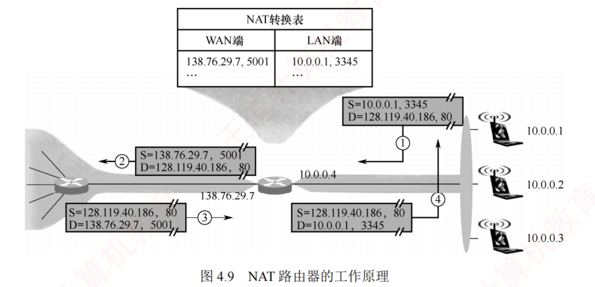
图 4.9 NAT 路由器的工作原理 。顶部是 NAT 转换表 ，两列「WAN 端 ｜ LAN 端」，里面躺着唯一的一行：138.76.29.7, 5001 ｜ 10.0.0.1, 3345。下方是拓扑 ：右侧三台内网主机 10.0.0.1／2／3，中间的家庭网关（LAN 侧 10.0.0.4 、WAN 侧 138.76.29.7 ），左侧通往互联网。四个带圈数字标出四段报文，每段都用一个小方框写明 S=／D= ：① S=10.0.0.1,3345 → ② S=138.76.29.7,5001 → ③ 回程 D=138.76.29.7,5001 → ④ D=10.0.0.1,3345。⭐ 看图只需盯住那四个小方框里「哪一半被改了」：出站改的是 S，入站改的是 D，另一半自始至终没动过。 我的补讲 · NAT 表里为什么必须有端口？拿掉端口试一下就知道了
书上说 X ：NAT 转换表保存
{私有 IP:端口} ⟷ {全球 IP:端口} 的对应关系。
潜台词是 Y ：
假设表里只有 IP、没有端口 ，会发生什么？
内网 10.0.0.1 和 10.0.0.2 同时访问同一个网站 128.119.40.186:80
只记 IP 的表： 138.76.29.7 ⟷ 10.0.0.1
138.76.29.7 ⟷ 10.0.0.2 ← 【同一个键，冲突了】
回包 D=138.76.29.7 到达 NAT 路由器 ⟹ 【无法判断该还原成谁】
⟹ 端口号在这里承担的是「区分同一个全球 IP 背后的不同内网主机」的职责，本质上是一个复用/分用 的标签。
所以能考 Z ：
① 「一个全球 IP 最多能支撑多少条并发连接」——理论上受端口号 16 位限制（约 6.5 万）；
② 「NAT 工作在哪一层」——网络层，但涉及传输层 ，理由就是它必须读写端口；
③ 「ICMP 没有端口号，NAT 怎么办」——用 ICMP 报文里的标识符字段代替端口 （了解即可）。
⭐ 因为要看端口，NAT 才成了 408 里唯一一个「跨层」的网络层设备。 必记 · NAT 的四步（图 4.9，2020 综合真题就是把这四步做了两遍）
场景 ：家庭宽带获得全球 IP
138.76.29.7 ，内部主机 10.0.0.1／2／3，网关 LAN 侧 10.0.0.4；
主机
10.0.0.1 用源端口 3345 访问 Web 服务器
128.119.40.186:80 。
步 位置 源 目的 ① 内网 → NAT 路由器 10.0.0.1 : 3345 128.119.40.186 : 80 ② NAT 路由器 → 互联网 138.76.29.7 : 5001 （源被改写，并在 NAT 表中新增一条映射）128.119.40.186 : 80 ③ 服务器 → 互联网 128.119.40.186 : 80 138.76.29.7 : 5001 （服务器根本不知道 内网地址 ）④ NAT 路由器 → 内网 128.119.40.186 : 80 10.0.0.1 : 3345 （查 NAT 表还原）
NAT 转换表的一行长这样：{WAN 侧 138.76.29.7, 5001} ⟷ {LAN 侧 10.0.0.1, 3345}
⟹
正因为表里带端口，多个私有地址才能共享同一个全球 IP （靠端口区分是谁）。
上述过程属于动态 NAT （内网主机发起连接时自动建映射，一段时间后自动清除）；
若内网服务器要对公网提供服务，需由管理员在 NAT 表中手工配置静态映射 。 我的补讲 · NAT 的三个副作用，是简答题的标准答案
书上只讲了 NAT 的好处（省地址、隐藏内网结构、降低被攻击风险），但考试也会问「代价是什么」 ：
副作用 为什么 对应现象 破坏了端到端透明性 IP 地址在中途被改了 ，违背「IP 端到端不变」的基本假设凡是把 IP 地址写进数据部分 的协议都会出问题 外部主机无法主动 发起连接 NAT 表是内网主动外连时才建立 的（动态 NAT） 内网服务器必须手工配静态映射 （书上明写）路由器负担变重 要看并改传输层的端口号 ，还要维护转换表NAT 路由器功能涉及传输层 ，不再是纯网络层设备
⟹ 第二条是 2020 真题的题眼：题目让内网 Web 服务器对公网提供服务，答案必须提到「在 NAT 表中手工配置静态映射 」。
⭐ 顺带记一句反直觉的结论：NAT 「提升安全性」和「破坏透明性」是同一件事的两面 ——外面进不来，既是保护，也是限制。 必记 · 书上灰框：普通路由器 vs NAT 路由器（高频考点，原话背下来 ）
① 普通路由器转发 IP 分组时，不会改变 其源 IP 地址和目的 IP 地址。 ② NAT 路由器转发时，会修改 源 IP（出站）或目的 IP（入站）。 ③ 普通路由器仅工作在网络层；NAT 路由器还需查看并转换传输层的端口号，因此其功能涉及传输层 。 第 ③ 条是 408 里「网络层设备越界」的唯一例子 ，问「NAT 路由器工作在哪一层」时，标准答案是「网络层，但涉及传输层」。
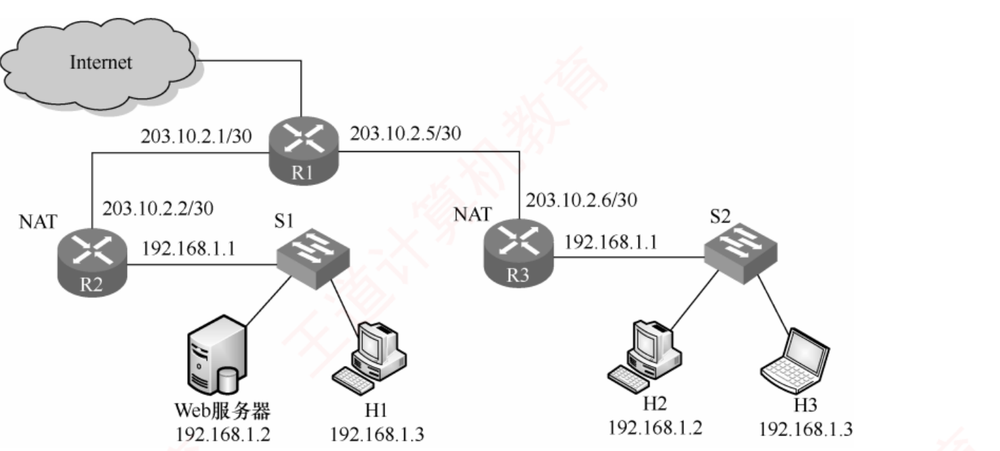
2020 统考真题的拓扑（本章 4.2 综 16）——把 NAT 的意义画得最透的一张图 。R1 接互联网，其下挂着两台 NAT 路由器 R2 与 R3 （图上各自标着 NAT ），它们的 WAN 侧分别是 203.10.2.2/30 与 203.10.2.6/30 （注意都是 /30 点对点链路 ）。⭐ 最该盯的是最下面一排地址：R2 网内的 Web 服务器是 192.168.1.2、H1 是 192.168.1.3；R3 网内的 H2 也是 192.168.1.2、H3 也是 192.168.1.3——两个网络的私有地址完全撞车，却互不干扰 。 这就是「私有地址可重用」四个字的图证 ，也是 NAT 能缓解地址短缺的全部原因 。另注意两台 NAT 路由器的 LAN 侧接口地址也都是 192.168.1.1 ——连网关地址都能重复 。我的补讲 · NAT 题的通用解法：画一张四列表，逐跳填地址
书上说 X ：NAT 路由器出站改源、入站改目的。
潜台词是 Y ：
做题时不要在脑子里想 ，一律画表 ——
「在哪一段链路上 / 源 IP / 源端口 / 目的 IP / 目的端口」五列，一段一行 。
因为真题（2020）会串两级 NAT，脑子转两圈必错。
所以能考 Z ：填表时只记两条规则就够——
① 出站（内 → 外）改源 ，入站（外 → 内）改目的 ；② 每过一个 NAT 就改一次，双 NAT 就改两次。
双 NAT（2020 真题的骨架）：内网 A --NAT1--> 中间网 --NAT2--> 公网 S
段1 A:10.0.0.1,3345 → S:x.x.x.x,80 （原始）
段2 NAT1外:172.16.0.5,4001 → S:x.x.x.x,80 （改源一次）
段3 NAT2外:203.0.1.9,5001 → S:x.x.x.x,80 （再改源一次）
回程逐段【原样倒着还原】，每过一个 NAT 改一次目的
⚠️
还有第三条容易忘的规则：NAT 只改 IP 和端口，不改 数据部分 ；
而且目的地址在出站方向自始至终不变 ——
很多人一紧张就把目的地址也改了。 我的补讲 · 2020 真题的三段地址：把「同名不同人」标清楚
2020 那道综合真题最狠的设计 ：
R2 和 R3 两侧的私网都用 192.168.1.0/24 ，
Web 服务器是 192.168.1.2，H2 也是 192.168.1.2 ——
字面完全相同，指的却是两台不同的机器 。
做题时必须在草稿纸上加限定词，否则一定串 ：
写成【R2 侧的 192.168.1.2】与【R3 侧的 192.168.1.2】，或干脆写成 W 和 H2
H2（R3 侧 192.168.1.2）访问 Web 服务器（R2 侧 192.168.1.2）的三段地址：
段1 R3 内网: S = 192.168.1.2(H2) , D = 203.10.2.2(R2 的公网口)
段2 公网: S = 203.10.2.6(R3 公网口), D = 203.10.2.2
← 【R3 出站改源】
段3 R2 内网: S = 203.10.2.6 , D = 192.168.1.2(Web)
← 【R2 入站改目的，靠静态映射还原】
⟹ 注意两个 NAT 各只改一次、各改一半：R3 改源、R2 改目的。
而 Web 服务器能被公网访问，靠的是 R2 上手工配置的静态映射 （动态 NAT 做不到）。
🐍 三段地址我逐段复算过，与书答吻合。 知识串联 · NAT 是「地址空间不够」这个老问题的第二种解法
地址耗尽 IPv4 地址不够用，408 里给了三种 解法，考试常放在一起对比 ：
① CIDR / VLSM （把地址切得更细，少浪费 ）· ② NAT （让多台机器共用一个地址 ）· ③ IPv6 （直接把地址加长到 128 位 ，见 4.3）。
前两个是「省着用」，第三个是「彻底换」——这就是 4.2 与 4.3 之间的逻辑关系。 端口 NAT 靠端口号区分内网主机，这一点直通 ch5 ：
端口号本是「区分同一台主机上的不同进程」的，NAT 把它借来「区分不同主机」 ——
这也解释了为什么 NAT 表里必须记端口，以及为什么 NAT 对 ICMP 这种没有端口的协议要特殊处理。 空间换时间 NAT 转换表本身就是一张缓存表 ：动态建立、超时清除 ——
与 ARP 缓存、Cache、TLB 是同一族机制 ，连「表满了怎么办」「条目过期怎么办」这些问题都同构。
4.2.4 网络层转发分组的过程 考点追踪：特定主机路由的应用（2009）· 默认路由的应用（2009、2014）
主机发送数据时，先把目的 IP 与本网络的子网掩码 逐位与运算：结果等于本网络前缀就直接交付 （无须路由器参与），否则发给默认网关 由路由器转发（间接交付 ）。分组的转发始终基于「目的主机所在网络 」 ——因为互联网中的网络数量远小于主机数量，这样能显著压缩转发表规模 。
我的补讲 · 综合题里「写出路由表」的四行标准格式（背成肌肉记忆）
2009、2013、2019 三道综合真题都要求你把一张路由表填出来 。行的顺序不是随便排的 ：
按【前缀长度降序】写，从上往下依次是：
① 特定主机路由 255.255.255.255 下一跳 = 某个具体 IP
② 直连网络 本网掩码 下一跳写「—」或「直接交付」
③ 具体网络路由 该网掩码 下一跳 = 对端路由器接口 IP
④ 默认路由 0.0.0.0 / 0.0.0.0 下一跳 = 出口路由器 IP
接口列：直连的写本机接口名（E1/L0…），非直连的写「从哪个口出去」
⚠️ 三个最常被扣分的细节 ：
① 直连网络的下一跳不能 写自己接口的 IP （
教材 53 题的错项 A、B 就是这么造出来的 ）；
② 默认路由必须放最后一行 （
体现优先级 ）；
③ 掩码列要写成点分十进制 （
题目若给的是 /n，要自己换算 ）。
⭐ 有些题会要求「用最少的表项」——那就是在暗示你做路由聚合 （见前文三步法）。 必记 · 路由表中的两种特殊路由
特定主机路由 默认路由 写法 a.b.c.d/32 0.0.0.0/0 为什么这么写 掩码全 1 ⟹ 只匹配这一台主机 全 0 掩码与任何地址相与都是 0.0.0.0 ⟹ 必然匹配所有地址 用途 网络管理员对某台主机做控制和测试 目的网络不在表中就走它；常用于连接互联网 （海量网络列不完） 优先级 最高 （前缀 32 位，最长）最低 （前缀 0 位，最短）
⚠️
书上专门说明：「/32」的掩码在子网划分 里没有意义，但在转发表 里可作为标识单个主机的特殊前缀。
⭐ 两者的优先级差异不是额外规定 ，而是最长前缀匹配的自然结果——这一点想通了就不用背。 知识串联 · 四步转发算法 ＝ 一次「有序表查找 + 提前终止」
查找 《数据结构》ch7 讲过：有序表上的顺序查找可以提前终止 。
路由器把转发表按前缀长度降序 排好，再从上往下扫，第一个匹配上的就是答案，扫到即停
⟹ 这就把「先找全部候选再比谁最长」的两遍扫描，变成了一遍。 分块与映射 更快的做法是书上提到的 Trie 树 ：
把前缀当成一条从根往下的路径，走得越深前缀越长，走不动为止的那个节点就是最长匹配
⟹ 复杂度从 O(表项数) 降到 O(前缀位数 ≤ 32) ，与《数据结构》字典树的分析完全一致。空间换时间 再往硬件走一步就是 4.7.3 说的「转发表可用专用硬件 实现」 ——
与《组成原理》用硬件比较器并行比对 Cache 标记、OS 用 TLB 硬件并行查页表，是同一条提速路线：把查找做进电路里。
必记 · 路由器的分组转发算法四步（可直接当综合题卷面模板）
从收到的 IP 分组首部提取目的 IP 地址 D ，从转发表第一项开始检查（表按前缀长度降序 排列 ）。
若存在特定主机路由 （目的网络为 D/32 ），按其下一跳转发；否则转步骤 3。
把当前路由项的子网掩码与 D 逐位「与」 ：结果等于该项的网络前缀 ⟹ 匹配成功 ，按「下一跳」处理
（直接交付给本网络上的目的主机，或经指定接口转发到下一跳路由器 ）；否则检查下一项，重复本步。全表都不匹配时：若有默认路由 0.0.0.0/0 就发给它 ；否则报告 「目的不可达」 错误。
书上补了一句：特定主机路由与默认路由的匹配本质上已包含在第 3 步里 ，单列只是为了强调优先级与典型场景。
⚠️
转发表不提供到目的网络的完整路径，仅指明「下一跳路由器」，分组逐跳转发直至抵达目的网络。 必记 · 书上灰框：下一跳的 IP 不会 被填进分组首部（跨层串联的关键句 ）
从转发表得到下一跳路由器的 IP 地址后，并不会把该地址填入待转发分组的首部 ，
而是通过 ARP 解析出对应的 MAC 地址，填入链路层帧首部 作为目的地址。
该帧发到下一跳路由器后，路由器剥离帧首部 、取出 IP 分组，再交给网络层处理。
同一个 IP 分组，走三跳的样子：
[ IP 首部: S=H1, D=H4 ] ← 三跳全程【一个字都不改】
链路 1 外面套：[ MAC: H1 → R1 ]
链路 2 外面套：[ MAC: R1 → R2 ] ← 每跳【拆掉重套】
链路 3 外面套：[ MAC: R2 → H4 ]
⭐
这张图就是本章与 ch3 的接缝，也是综合题最爱问的一问：「在链路 X 上，帧的源/目的 MAC 分别是什么」。 4.2.5 地址解析协议 ARP 考点追踪：ARP 的工作原理（2011、2012、2021）· ARP 的解析过程（2011、2015）· 跨局域网的 ARP 解析（2015）
我的补讲 · 第 ③ 条那句话，是本章分值最高的一句
书上说 X ：每经过路由器转发都会解封装并重新封装，MAC 帧的源地址和目的地址都随之改变，
这决定了 MAC 地址无法用于跨网络通信 。
潜台词是 Y ：
这句话是一个因果链 ，不是一个孤立事实 ：
路由器隔离广播域（ch3 3.8 / 本章 4.7.1）
⟹ 广播帧出不了本网
⟹ ARP（靠广播工作）跨不了网
⟹ 你根本【拿不到】远端主机的 MAC
⟹ MAC 只能用于【本跳】，跨网寻址只能靠 IP
⟹ 于是 MAC 逐跳改写，IP 端到端不变
所以能考 Z ：
① 综合题问「链路 X 上帧的源/目的 MAC」——按逐跳改写答；
② 选择题问「为什么需要 IP 地址，直接用 MAC 不行吗」——按上面的链条答；
③ 4.8 疑难点 3 问「路由表里能否直接放 MAC」——不能 ，理由还要加上「MAC 是平面地址、表会爆炸」。
⭐ 这条链把 ch3、4.2.5、4.7.1、4.8 四处内容串成了一根绳，是全章最值得画在草稿纸上的一张图。 必记 · 分层抽象的四条精髓（书上原话，命题人反复取材）
① 在 IP 层抽象的互联网上，只能看到 IP 数据报 。 ② 尽管 IP 数据报首部包含源 IP 地址，但路由器仅依据目的 IP 地址进行转发 。 ③ 在局域网的链路层只能看到 MAC 帧，IP 数据报被封装其中；每经过路由器转发都会被解封装并重新封装，MAC 帧的源地址和目的地址都随之改变 ⟹ 这决定了 MAC 地址无法用于跨网络通信 。 ④ 底层硬件地址体系各异，IP 层的抽象屏蔽了这些差异 ——只要在网络层讨论问题，就能用统一的 IP 地址研究主机与主机、主机与路由器的通信。附带一条：路由器因互连多个网络，每个接口都配置有一个 IP 地址和一个对应的 MAC 地址 。
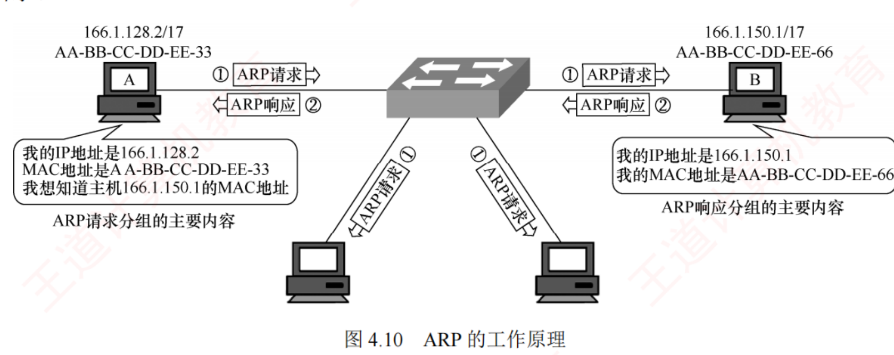
图 4.10 ARP 的工作原理 。左侧主机 A（166.1.128.2/17，AA-BB-CC-DD-EE-33） ，右侧主机 B（166.1.150.1/17，AA-BB-CC-DD-EE-66） ，中间一台交换机，下方还挂着两台无关主机。⭐ 看图要抓住箭头的「粗细差别」 ：① 标着 ARP 请求 的箭头从 A 射向了图中每一台 主机 （包括下面那两台无关的）——这就是广播 ；② 标着 ARP 响应 的箭头只有 B → A 这一条 ——这就是单播 。两侧的文字框写着请求与响应的内容 ：请求 ＝「我的 IP 是 166.1.128.2、MAC 是 …-33，我想知道 166.1.150.1 的 MAC 」，响应 ＝「我的 IP 是 166.1.150.1，我的 MAC 是 …-66」。⚠️ 顺带看清一件事：A 与 B 的前缀都是 /17，166.1.128.2 与 166.1.150.1 在同一个网络里——ARP 只有在这个前提下才用得上。 必记 · ARP 的三步与两个「广播/单播」
每台主机和路由器都维护一个 ARP 高速缓存 （ARP 表） ，存放
本局域网内 各主机与路由器接口的 IP↔MAC 映射；
动态更新，每个表项设有生存时间（例如 20 分钟） ，超时自动删除 。
主机 A 要给本局域网的主机 B 发数据 ：先查自己的 ARP 缓存，
有就直接用 ；没有则：
A 构造 ARP 请求分组，封装在目的 MAC ＝ FF-FF-FF-FF-FF-FF 的帧中广播 发送 ，本局域网内所有主机都收到。
内容：「我的 IP 是 …，MAC 是 …，我想知道 IP 为 X 的主机的 MAC 」。B 发现被问的正是自己，向 A 单播 发送 ARP 响应分组 ，含自己的 MAC。
⚠️ 同时 B 把 A 的 IP↔MAC 写进自己的 ARP 缓存 （一次问答，两边都受益 ）。A 收到响应后把 B 的映射写入缓存，然后用该 MAC 封装数据帧发出。
⚠️ 「ARP 请求广播、ARP 响应单播」是本节最高频的一个考点。
ARP 归为网络层 协议，因为它处理的是 IP 地址 ——
书上给了通用判据：看某协议使用或依赖哪一层的地址/端口信息，就归哪一层 。
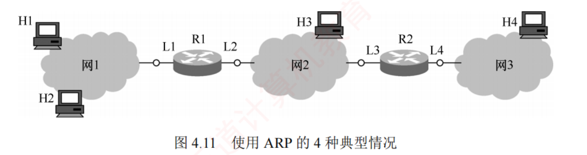
图 4.11 使用 ARP 的 4 种典型情况 。三朵云（网 1／网 2／网 3）被两台路由器串起来：网1 —L1[R1]L2— 网2 —L3[R2]L4— 网3 ；网 1 上有 H1、H2，网 2 上有 H3，网 3 上有 H4。⭐ 这张图的全部价值在那四个接口标号 L1／L2／L3／L4 ——下面那张四种情况表里的每一个答案，都是从这四个标号里挑一个出来 。读表时用手指按住图上对应的那个字母，四种情况一遍就能记住：跨网时 ARP 问的永远是「本网络里那台路由器的接口」，也就是离自己最近的那个 L。 我的补讲 · ARP 缓存里到底存了些什么？看一眼就懂四种情况
把四种情况反过来看——各方的 ARP 缓存里会多出哪些条目 ，比死记表格直观得多 ：
谁的缓存 里面会有什么 普通主机 H1 同网内它通信过的主机 （H2）＋ 默认网关 R1 的 L1 接口 ——只有这两类，绝不会有跨网主机的 MAC 路由器 R1 它每个接口所在网络里 的主机与邻居路由器接口（L1 侧有 H1、H2；L2 侧有 H3、R2 的 L3）
⟹ 一条判据就够了：ARP 缓存里只可能出现与自己同一广播域的地址 。
选择题若说「H1 的 ARP 缓存中有 H4（跨网主机）的 MAC」，直接判错。
⭐
顺带解释一个常被问的现象 ：
为什么 B 回应 ARP 时，顺手把 A 的映射也存了下来 ？
因为「A 问了 B」几乎必然意味着「B 马上要回话给 A」——这是一次免费的预取，与 Cache 的预取思想完全一致。 必记 · ARP 的四种典型情况（图 4.11，「解析谁的 MAC」是唯一考点 ）
拓扑：H1、H2 在网 1 —— L1[R1]L2 —— 网 2 上有 H3 —— L3[R2]L4 —— 网 3 上有 H4。
情况 发送方 目标 ARP 解析出的是谁的 MAC 1 主机 H1 本网络 上的 H2目的主机 H2 的 MAC2 主机 H1 其他网络 上的 H4本网络中默认网关（R1 的接口 L1） 的 MAC，不是 H4 的 3 路由器 R1 直连网络 （网 2）上的 H3H3 的 MAC4 路由器 R1 非直连网络 （网 3）上的 H4下一跳路由器 R2 的接口 L3 的 MAC
⟹ 四种情况其实只有一条规律：ARP 永远只解析「我这一跳要交给谁」的 MAC ——
同网就是目的主机，跨网就是下一跳路由器接口。
⚠️
书上灰框：ARP 仅作用于同一局域网（广播域） ，无法跨网络工作。 知识串联 · 「地址在哪一层变、在哪一层不变」，一张表管住三层
一段 vs 端到端 把三层的地址放在一起看，本章那句核心结论就有了参照系 ：
层 用什么地址 作用范围 沿途变不变 数据链路层 （ch3）MAC 地址 一段链路 每跳都变 网络层 （本章）IP 地址 主机到主机 端到端不变 （NAT 除外）传输层 （ch5）端口号 进程到进程 不变（NAT 除外）
⟹ 三行连起来正好是一句完整的话：MAC 找到下一台机器，IP 找到目的主机，端口找到目的进程。
而 NAT 之所以「越界」，正是因为它同时改了第二行和第三行 ——
这也是它被称为「破坏端到端透明性」的原因。
封装 「解封装 → 查表 → 重新封装」这个动作，就是 ch1 讲的逐层封装模型 在路由器里的现场 ：
路由器只拆到网络层就停了（不看传输层），所以它看不见端口号 ——除非它是 NAT 路由器 。 必记 · 书上灰框：一路上 MAC 地址怎么变（⭐⭐ 综合题最爱考的一句 ）
H1 → H4 这一路，MAC 帧的源/目的地址依次是 ：
链路 1（网1）: 源 = H1 ，目的 = L1 ← R1 的入接口
链路 2（网2）: 源 = L2 ，目的 = L3 ← R1 的出接口 → R2 的入接口
链路 3（网3）: 源 = L4 ，目的 = H4 ← R2 的出接口
自始至终： IP 分组的 源 = H1 ，目的 = H4 【一个字都没变】
⟹ IP 分组每经过一个路由器，外层 MAC 帧的源/目的地址都会更新为当前链路两端设备的接口 MAC；而 IP 地址始终不变——除非经过 NAT 路由器。
整个 ARP 过程对用户完全透明 ，系统自动完成，用户无须也无法干预。 我的补讲 · 「IP 不变、MAC 逐跳变」是本章最高频的一句话，但它有两个例外
书上说 X ：IP 地址端到端不变，MAC 地址逐跳改变。
潜台词是 Y ：
这句话是默认规则 ，而 408 的选择题专挑例外 下手 。
例外恰好两个，都要记住 ：
例外 发生什么 在哪一节 NAT 路由器 IP 地址被改了 （还顺带改端口）4.2.3 同一网络内直接交付 全程只有一跳，MAC 也「没变过」 （因为根本没经过路由器）4.2.2 / 4.2.4
所以能考 Z ：
判断题「IP 分组从源到目的，源 IP 地址始终不变」——在没有 NAT 的前提下正确 ，
但若题干出现 NAT 路由器，这句话就错 。
⟹ 做题时先扫一眼拓扑里有没有 NAT，这一眼值 2 分。 知识串联 · ARP 缓存 ＝ 三科共有的那张「空间换时间」的表
空间换时间 ⭐
ARP 缓存是 408 里最标准的一个「缓存」实例，把它与另外三个并排放，四张表长得一模一样 ：
缓存 缓存什么映射 失效机制 在哪一科 ARP 缓存 IP → MAC 生存时间约 20 分钟 本节 Cache 主存地址 → 数据 替换算法（LRU 等） 组原 TLB / 快表 页号 → 页框号 替换 + 进程切换时刷新 OS NAT 转换表 内网 IP:端口 → 外网 IP:端口 超时清除 4.2.3
四者的收益公式完全相同：命中就省掉一次昂贵操作（广播查询／访存／查页表／建映射）。
中断 另有一层关系值得点破 ：
ARP 之所以能广播，是因为链路层提供了广播能力（ch3 的 FF-FF-FF-FF-FF-FF） ；
而路由器隔离广播域（ch3 3.8）正是 ARP 不能跨网的根本原因 ——
两章的知识在这里咬合得严丝合缝。 4.2.6 动态主机配置协议 DHCP 考点追踪：DHCP 发现报文的作用（2022）· DHCP 报文的地址分析（2015、2022、2025）
DHCP 用于给主机动态分配 IP 地址 ，提供即插即用的联网机制 。DHCP 是应用层协议，基于 UDP ——这一句与「ARP 是网络层协议」形成对照，是最常考的层次判断 。
必记 · 连网主机需要配置的四项
① IP 地址 ② 子网掩码 ③ 默认路由器的 IP 地址（默认网关） ④ 域名服务器（DNS）的 IP 地址
⟹ 这四项正是 DHCP 提供报文里要发下来的内容（再加一个租用期 ）。
选择题会问「DHCP 不能提供下列哪一项」，四项之外的都是错的。
我的补讲 · DHCP 四步为什么非广播不可 ？逐步问一遍就懂了
很多人死记「四步全广播」，其实每一步的理由都不一样，理解后根本不用背 ：
步 为什么必须广播 Discover 客户此刻既没有自己的 IP（只能写 0.0.0.0），也不知道服务器在哪 ——除了广播没有别的办法 Offer 客户还没有 IP 地址 ，服务器就算知道该发给谁也没法单播 给它Request 客户可能收到多个 Offer，必须让没被选中 的服务器也听见，好释放为它预留的地址 ——这是四步里唯一「主动要让别人听见」的一步 ACK 同 Offer：客户配置此刻才生效 ，在这之前它仍然没有可用 IP
⟹ 前两步和第四步是「没办法」，第三步是「故意的」。第三步的理由是最常考的简答点。
反过来看续租为什么能单播 ：
此时客户已经有 IP （可作源地址）、也知道是哪台服务器给的 （可作目的地址）
⟹
两个前提都满足了，广播就没必要了。
唯一的例外是 87.5% 那次——因为上次单播没人应答，只好改用广播碰运气 。 必记 · DHCP 四步报文与它们的源/目的地址（逐格背，三年真题都在这张表里 ）
步 报文 方式 源地址 目的地址 要点 1 DHCP Discover 发现广播 0.0.0.0 255.255.255.255 客户还没有 IP、也不知道服务器 IP；所有主机都收得到，但只有 DHCP 服务器才回答 2 DHCP Offer 提供广播 DHCP 服务器地址 255.255.255.255 含 IP、掩码、网关、DNS、租用期 ；⚠️ 网络中可能有多台服务器，凡收到发现报文的都要发提供报文 3 DHCP Request 请求广播 0.0.0.0 255.255.255.255 客户可能收到多个提供报文，只能选一个；仍用广播，是为了让没被选中的服务器释放预留资源 4 DHCP ACK 确认广播 DHCP 服务器地址 255.255.255.255 被选中的服务器广播确认，客户收到后配置生效
⭐ 一句话记法：四步全是广播；客户侧的源永远是 0.0.0.0，目的永远是 255.255.255.255。 知识串联 · DHCP 的租用期 ＝ 一份「带续约的资源租约」
资源回收 「租用期」这个机制在 408 里到处都是，都是为了解决同一个问题：持有者失联了，资源怎么收回 ：
机制 租约期 不续约会怎样 DHCP 租用期 （本节）由服务器决定；50% 时续租 到期收回 IP，客户须重新申请 ARP 缓存表项 （4.2.5）约 20 分钟 条目删除，下次重新广播询问 RIP 路由表项 （4.4.3）180 s 无更新距离置 16 （不可达） OSPF 邻居 （4.4.4）40 s 无问候判定邻居不可达，重算路由 BGP 保持时间 （4.4.5）180 s 无报文认为对等方失效，关闭 TCP 连接
⟹ 五者的结构完全相同：定期心跳 + 超时判死 + 自动回收 。
《操作系统》里的「看门狗」「锁的租约」「会话超时」也是这一套。
把五个数字（20 分钟 / 180s / 40s / 180s + 60s 心跳）一起背，比分散在五节里各背一次省力得多。 必记 · 租用期的三个节点（50% / 87.5% / 提前终止）
租用期由 DHCP 服务器 决定。
时机 客户做什么 方式 源 / 目的 过 50% 发 DHCP 请求 报文，请求更新租用期 单播 源 ＝ 客户当前 IP ；目的 ＝ 为其分配地址的那台服务器 服务器同意 ⟹ 发 确认 报文（单播）；不同意 ⟹ 发 否认 报文（单播），客户必须停用当前 IP 并重新申请 过 87.5% 若上次续租没被响应，改用广播 再发请求，以提高成功率 广播 源 ＝ 客户当前 IP；目的 ＝ 255.255.255.255 提前终止 发 DHCP 释放 报文 单播 源 ＝ 客户当前 IP；目的 ＝ 服务器地址
⚠️ 这是本节最大的一个分界线：「获取阶段」四步全广播，「续租/释放阶段」除 87.5% 那次外全单播 ——因为此时客户已经有 IP、也知道服务器是谁了。 我的补讲 · DHCP 为什么用 UDP 不用 TCP？这是一道白送的简答题
书上说 X ：DHCP 基于 UDP。潜台词是 Y ：这不是随便选的，而是被逼的 ——
① 客户在初始阶段既没有 IP 地址、也不知道服务器地址 ，建不了 TCP 连接 （TCP 三次握手需要双方明确的地址）；
② TCP 不支持广播 ，而 DHCP 的头两步必须广播。 所以能考 Z ：凡问「DHCP 为何不用 TCP」，答上面两条即可；
反过来，选择题若说「DHCP 使用 TCP 保证可靠性」，直接判错。 顺带把三个协议的层次一次钉死（这是本节与前后节的唯一 混淆点） ：
ARP ＝ 网络层 · DHCP ＝ 应用层（走 UDP） · ICMP ＝ 网络层（封装在 IP 里但不是高层协议）· IGMP ＝ IP 的组成部分。
王道把 DHCP 放在网络层这一章讲，考的却是「它是应用层协议」——这个错位本身就是考点。
4.2.7 网际控制报文协议 ICMP 考点追踪：ICMP 使用的下层协议（2012）· ICMP 差错报告报文的类型与语义（2022）
为了更有效地转发 IP 数据报、提高交付成功率，网络层使用 ICMP ，使主机或路由器 能向源点 报告网络中的差错或异常。ICMP 报文被封装在 IP 数据报中传送，但它不是高层协议，而是网络层协议 ——这是最经典的一道判断题 。ICMP 报文分两类：差错报告报文 与询问报文 。
我的补讲 · 五种差错报文，其实对应着分组「死法」的五种死因
换个角度看这张表：一个 IP 分组在路上会怎么死？
死因 谁开的死亡证明 ICMP 类型 地址压根到不了 路由器或目的主机 终点不可达 转太多圈了（TTL 归零） 把它减到 0 的那台路由器 时间超过 分片没凑齐（超时） 目的主机 同样是「时间超过」 ——这是最容易漏的一种情形 首部字段写错了 路由器或目的主机 参数问题 （⚠️ 「某些字段」不是任意字段 ）路走岔了（但没死） 路由器 改变路由（重定向） ——这一条不是死因，是建议 路上太挤被扔了 路由器或主机 源点抑制 （⚠️ 新标准 [RFC6633] 已废弃 ）
⭐ 第 3 行值得单拎出来：「目的主机没能在规定时间内收齐所有分片」也发时间超过 报文 ——
很多人以为「时间超过」只跟 TTL 有关，这是本节最常被漏掉的半句话。
它同时把 4.2.1 的分片与 4.2.7 的 ICMP 接在了一起。 必记 · 五种 ICMP 差错报告报文
类型 什么时候发 终点不可达 路由器或主机无法交付数据报 时，向源点发送 时间超过 TTL 减为 0 而丢弃 时发送；另外，目的主机在规定时间内未收齐某数据报的所有分片 ，也会丢弃已收到的分片并发送此报文 参数问题 发现首部中某些字段的值不正确 （⚠️ 注意并非任意字段 ）时，丢弃并发送 改变路由（重定向） 路由器通知源点：下次应把数据报发给另一个路由器 （路径更短） 源点抑制 因拥塞而丢弃 数据报时，请求源点降低发送速率。⚠️ 脚注：最新标准 [RFC6633] 已不再使用 源点抑制报文
必记 · 四种「不发」ICMP 差错报告的情形（必背，考过多次）
① 对 ICMP 差错报告报文本身 ，不再发送 （否则会无限循环 ）。② 对第一个数据报片之后的所有后续分片 ，不发送 （一个原始数据报只报一次 ）。③ 对目的地址为多播或广播地址 的数据报，不发送 （否则会引发差错报文风暴 ）。④ 对具有特殊地址（如 127.0.0.0 或 0.0.0.0） 的数据报，不发送。 ⟹ 四条的共同动机只有一个：防止差错报文本身把网络压垮 。理解了这一点，四条就不用硬背。
必记 · 两种询问报文与 ICMP 的两个典型应用
询问报文两种 ：
① 回送请求和回答 （测试目的主机是否可达、获取状态）；
② 时间戳请求和回答 （估算往返时延）。
两个典型应用（必须能说出各用哪种报文 ） ：
应用 用什么 原理 PING（分组网间探测） ICMP 回送请求与回答 报文 测试两台主机之间的连通性 Traceroute / Tracert（路由跟踪） ICMP 时间超过 报文 逐步增大 TTL （1, 2, 3…），让沿途每一跳路由器依次因 TTL 归零而回报，从而追踪出完整路径
⭐
Traceroute 是 TTL 字段最漂亮的一个应用，也是把 4.2.1 与 4.2.7 串起来的那根线。 我的补讲 · ICMP 那道十几年不变的判断题，考的是「封装」与「层次」的区别
书上说 X ：ICMP 报文封装在 IP 数据报中传送，但它是网络层协议、不是高层协议。潜台词是 Y ：「被谁封装」和「属于哪一层」是两回事 判断层次看的是它处理什么信息、为谁服务 ，而不是它坐在谁的肚子里。
ICMP 报告的是 IP 转发过程中的差错、服务对象是 IP 本身，所以它是网络层的一部分。 所以能考 Z ：2012 真题问「ICMP 使用的下层协议是什么」，答案是 IP ；
但若问「ICMP 属于哪一层」，答案是网络层 ，不是传输层也不是应用层。
同一把刀的另外两面：ARP 也封装在链路层帧里，但它是网络层协议 ；DHCP 封装在 UDP 里，它就真的是应用层协议 。 王道给的通用判据值得抄下来 ：「看某协议使用或依赖哪一层的地址或端口信息 ，就归到哪一层」 ——
ARP 用 IP 地址 ⟹ 网络层；DHCP 用 UDP 端口 ⟹ 应用层；ICMP 报告 IP 转发的差错 ⟹ 网络层。
知识串联 · ICMP 把本章的三个零件接成了一条链
中断 ICMP 在网络层扮演的角色，正是《组成原理》与《操作系统》里「异常/中断」扮演的角色 ：
正常流程走不下去时，向发起者报告一个异常事件 ——「终点不可达」≈ 缺页异常，「时间超过」≈ 超时中断，「源点抑制」≈ 忙信号。
连「不为异常处理本身再产生异常」（第 ① 条不发规则）都和 OS 的中断嵌套限制同构。 TTL 「时间超过」把 4.2.1 的 TTL 字段变成了可考的东西 ：
TTL 是个计数器（4.2.1）→ 减到 0 就丢弃并回报 ICMP（4.2.7）→ 逐步增大 TTL 就能画出路径（Traceroute）
⟹ 2014 与 2024 两道真题都是在这条链上出的。 拥塞控制 「源点抑制」是 4.1.5 说的闭环控制 的一个具体实例 ：
路由器检测到拥塞 → 反馈给源点 → 源点降速 ；而它被新标准废弃 这件事同样值得记——
因为拥塞控制的重担后来完全交给了 ch5 的 TCP （这正是「端到端原则」的又一次胜利 ）。
📄 p.181
4.3 IPv6 5 页 · 9 题 · 1 真题（2023）· 半小时就能吃透的一节
我的补讲 · 这 5 页怎么读：它是「地址不够用」这条故事线的结局
IPv4 地址已于 2011 年 2 月耗尽 。为解决这个问题一共采取了三种措施 ：
① CIDR（让分配更合理）· ② NAT（省着用公网地址）· ③ IPv6（换一套地址空间）。
书上明说：前两种只是延缓 了 IPv4 的使用寿命，只有第三种能从根本上解决 。 这一句把 4.2.2（CIDR）、4.2.3（NAT）、4.3（IPv6）三节串成了一条完整的故事线 ，选择题喜欢把三者放在一起问「哪个能根本解决」。 投产比提示 ：本节 5 页只有 1 道真题（2023），但王道在这 5 页里标了三处「考点追踪」，三处全指向 2023 ——
说明 2023 那一年是把这一节考了个遍 ，之后至今未再考 。
读法：不要精雕细刻，但也别跳过 ——记住下面五条硬结论 + 会做缩写还原，这 5 页就到手了。
4.3.1 IPv6 的特点 考点追踪：IPv6 的特点（2023）
必记 · IPv6 的十个特点（加粗的四条几乎每次考到 IPv6 都出现）
① 更大的地址空间——这是最重要的 ：地址从 32 位增大到 128 位（16B） ，
地址空间是 IPv4 的 2128 /232 ＝ 296 倍 。② 扩展的地址层次结构 （空间大了，就能划出更多层次）。③ 灵活的首部格式 ：定义了许多可选的扩展首部 ；能提高路由器处理效率，因为路由器通常不处理扩展首部 。④ 改进的选项 ：IPv6 首部长度固定，选项放在有效载荷 中 ；而 IPv4 的选项放在首部的可变部分 。⑤ 允许协议继续扩充 （IPv4 的功能是固定不变的）。⑥ 支持即插即用（自动配置地址） ⟹ 通常不需要使用 DHCP 。⑦ 支持资源的预分配 （实时音视频等需要带宽与时延保证的应用）。⑧ 只有源主机才能分片，只支持端到端分片，不允许中间路由器分片 （与 IPv4 正好相反 ）。⑨ 首部长度固定为 40B （IPv4 的首部长度可变，必须是 4B 的整数倍 ）。⑩ 增大了安全性 ：身份鉴别与保密功能由扩展首部提供。IPv6 与 IPv4 不 兼容，但与其他互联网协议（TCP、UDP、ICMP、IGMP、DNS 等）总体兼容 ，
仅在少数地方做了必要修改，主要是为了处理更长的地址。
陷阱 · 2023 真题的两个坑，都埋在数字上
坑一：「IPv6 地址空间是 IPv4 的 96 倍 」——错，是 296 倍 。
96 与 296 差了大约 2.4×1028 倍，但在选项里只差一个上标，扫读极易漏。
🐍 复算：2128 /232 ＝ 296 ≈ 7.9×1028 。 坑二：「IPv4 首部和 IPv6 基本首部的长度均可变 」——错。
IPv4 首部可变（20–60B），IPv6 基本首部固定 40B 。
「一个可变一个固定」，选项把它们捏成「均可变」，就是在赌你只记得 IPv4 那半句。 2023 那道题的正确项是 Ⅲ（过渡用双协议栈和隧道）与 Ⅳ（Hop Limit ≡ TTL），答案 D。
把这两个「对的」也记住，比只记两个坑更保险。
4.3.2 IPv6 数据报的基本首部 考点追踪：IPv6 首部格式及字段含义（2023）
IPv6 数据报 ＝ 基本首部 + 有效载荷（净负荷） 。有效载荷由零个或多个扩展首部 （扩展首部不属于 基本首部 ）及其后的数据部分 构成。
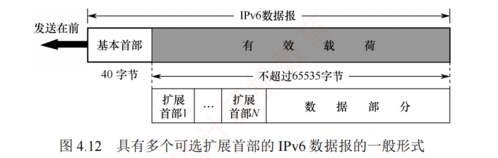
图 4.12 具有多个可选扩展首部的 IPv6 数据报的一般形式 。上面一条：基本首部（40 字节）＋ 有效载荷（不超过 65535 字节） ，左边一个粗箭头标着「发送在前」 ，指着基本首部。下面把「有效载荷」这一格展开 ：扩展首部1 … 扩展首部N ＋ 数据部分 。⭐ 这张图要抓住的就一件事：扩展首部在有效载荷里面 ，不在基本首部里 ——所以「有效载荷长度」这个字段算的是包含扩展首部在内 的全部字节数，也所以路由器可以不管扩展首部、直接看那 40B 就转发 。必记 · IPv6 相对 IPv4 的八项调整（「IPv4 vs IPv6」对照题的全部素材）
取消 / 改动了什么 为什么 取消「首部长度 」 基本首部固定 40B ，不需要了 取消「服务类型」 功能由通信量类（优先级）和流标号 实现 取消「总长度」 改用「有效载荷长度 」 取消「标识、标志、片偏移 」 相关功能移到分片扩展首部 「TTL 」更名为「跳数限制 」 作用不变 ，只是名称更贴合实际含义取消「协议」 改用「下一个首部 」 取消「首部检验和 」 传输层已提供差错检测 ，取消可加快路由器处理速度 取消「选项」 功能由灵活的扩展首部 实现
⚠️
结果很反直觉，书上专门点了一句 ：
字段数从 IPv4 的 12 个减少到 8 个 ，首部长度却从 20B 增加到 40B ——
因为两个地址字段各自从 4B 涨到了 16B，光这两项就 32B。 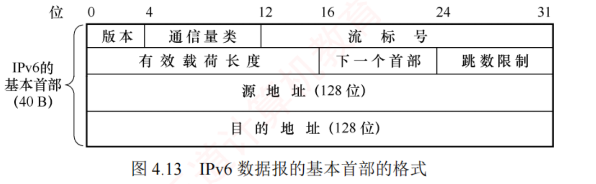
图 4.13 IPv6 数据报的基本首部的格式 。只有四行 （对比 IPv4 的六行）：第一行版本(4) ｜ 通信量类(8) ｜ 流标号(20) ，第二行有效载荷长度(16) ｜ 下一个首部(8) ｜ 跳数限制(8) ，第三、四行各被一个 128 位 的地址整行占满。左侧那个大括号标着「IPv6 的基本首部（40B） 」。⭐ 数一下：前两行 8B ＋ 两个地址 32B ＝ 40B，正好 ——这就是「字段少了、首部反而长了」的算术证据 。与图 4.5 并排看，IPv4 首部里那些被取消的字段（首部长度、标识/标志/片偏移、协议、首部检验和）在这张图上一个都找不到。 必记 · 八个字段里只有三个要细看
版本 （4 位，值为
6 ）·
通信量类 （8 位，区分类别/优先级）·
源/目的地址 （各 128 位）——
这四个一看就懂 。剩下三个要细看：
字段 位数 要点 流标号 20 「流」＝ 互联网上从特定源点到特定终点 （单播或多播）的一系列数据报 （如实时音视频）；路径上的路由器可据此提供特定的服务质量保证 ；同一个流的所有数据报有相同的流标号 有效载荷长度 16 基本首部之后 的字节数 ，包括所有扩展首部和上层数据 ；最大 65535B下一个首部 8 类似 IPv4 的「协议」字段：没有 扩展首部就标识上层协议；有 扩展首部就标识紧随其后的第一个扩展首部 的类型 跳数限制 8 作用等同于 IPv4 的 TTL ；源主机设初值（最大 255 ），每经一个路由器减 1，减到 0 丢弃
我的补讲 · 「取消首部检验和」这一条，是全书最好的一道分层权衡题
书上说 X ：IPv6 取消首部检验和，因为传输层已提供差错检测，这样能加快路由器处理速度。潜台词是 Y ：这是一次明确的取舍 ，理由要能自己复述出来 ——
① 下面：链路层的 CRC 已经把出错的帧丢掉了；② 上面：TCP/UDP 检验和覆盖了包括数据在内的全部内容；
③ 中间这一层每经过一跳就要重算一次 （因为 TTL 变了），代价高、收益低。
三条合起来 ⟹ 中间这一层的检验属于重复劳动 ，砍掉换速度。 所以能考 Z ：选择题「IPv6 使用首部检验和保证传输正确性」——错（05 题的 D 项） ；
简答「为什么 IPv6 取消首部检验和」——答上面三条。 把这个思路推广，就得到 408 里一条通用的判断法则 ：
同一个功能若在多层重复实现，就要问「哪一层做一次 就够」 ——
差错检测（链路层 + 传输层就够）· 流量控制（链路层与传输层各做各的，作用范围不同，都需要）·
可靠传输（端到端原则说：必须在端 做，中间做了也白做）。
这三条对照着记，ch3／本章／ch5 的一大批判断题就都通了。
4.3.3 IPv6 地址
必记 · 三种目的地址类型（IPv6 没有广播地址 ）
① 单播 ：传统的点对点通信，发给唯一指定的接收方。② 多播 ：一点对多点，发给所有加入该多播组的接口。③ 任播（Anycast）——IPv6 新增的地址类型 ：「一址多用、就近交付」 ；
任播地址标识一组 接口，但网络只把数据报交付给其中路由距离最近的那一个 。IPv6 没有广播地址 ——广播的功能由「多播」承担了 。这是一道现成的判断题。
必记 · 冒号十六进制记法与两条缩写规则（本节唯一要动手的题型 ）
把 128 位分成 8 组 ，每组 16 位（4 个十六进制数） ，组间用冒号分隔 ，
例如
4BF5:AA12:0216:FEBC:BA5F:039A:BE9A:2170。
规则 内容 易错点 ① 省略前导零 每组中前面 连续的十六进制零可省略，但至少保留一个数字 开头的 0 可省，结尾的 0 不可 省 （89A 还原成 089A，不是 89A0）② 双冒号 一个或多个连续的全零组 可用 :: 替代 :: 在一个地址中只能用一次
例 ：
4BF5:0000:0000:0000:BA5F:039A:000A:2176
⟹ 先省前导零
4BF5:0:0:0:BA5F:39A:A:2176
⟹ 再用双冒号
4BF5::BA5F:39A:A:2176。
我的补讲 · 缩写还原三步法（03、04 两题的标准动作）
还原（缩写 → 完整）的机械步骤，一步都别跳 ：
先补组数 ：数出现有的组数 k，:: 代表 8 − k 个全零组，把它们摊开写成 0000。再补每组的位数 ：每组不足 4 位的，在前面 补 0 补到 4 位。核对 ：最终必须正好 8 组、每组 4 位 。
04 题：8::D0:123:CDEF:89A 还原
第1步 现有 5 组（8 / D0 / 123 / CDEF / 89A）⟹ :: 代表 3 个全零组
8 : 0000 : 0000 : 0000 : D0 : 123 : CDEF : 89A
第2步 每组前面补 0 到 4 位
0008:0000:0000:0000:00D0:0123:CDEF:089A ← 答案 D
⚠️ 最后一组是 089A 不是 89A0，这就是干扰项 A/B 的来源
🐍 我用 ipaddress 复算过：8::D0:123:CDEF:89A 展开正是 0008:0000:0000:0000:00D0:0123:CDEF:089A，只有 D 吻合。
⭐
判断合法性（03 题）更简单：数 :: 出现了几次，出现两次以上直接判非法 。
🐍 1A22::120D::72A2::00C0 被 ipaddress 直接判为非法地址，选 C 无误。 必记 · 表 4.3 IPv6 地址的分类（五类，记 CIDR 记法那一列）
地址类型 CIDR 记法 说明 未指明地址 ::/128 不能用作目的地址 ，仅供尚未配置 IPv6 地址的主机作源地址（≈ IPv4 的 0.0.0.0 ）环回地址 ::1/128 作用同 IPv4 环回，但 IPv6 只定义了这一个 （IPv4 是整个 127.0.0.0/8 段 ） 多播地址 FF00::/8 占 IPv6 地址空间的 1/256 本地链路单播地址 FE80::/10 仅用于本地链路内通信，不能被路由器转发 全球单播地址 见下 用得最多
全球单播地址的划分非常灵活（图 4.14 的三行） ：
① 整个 128 位 ────────────────────── 节点地址
② 子网前缀(n 位) ──┬── 接口标识符(128−n 位) ← 接口标识符 ≈ IPv4 的主机号
③ 全球路由选择前缀(n) ┬ 子网标识符(m) ┬ 接口标识符(128−n−m)
⭐
第 ③ 行的三级结构，就是 4.2.2 那个「网络号 + 子网号 + 主机号」三级结构的 IPv6 版 ——
换了名字，思想一模一样。 4.3.4 从 IPv4 向 IPv6 过渡 考点追踪：IPv4 向 IPv6 过渡的策略（2023）
必记 · 两种过渡策略（2023 真题的正确项之一）
过渡只能逐步演进 ，并确保新部署的 IPv6 系统向后兼容 ——能接收、转发 IPv4 数据报并为其选路。
策略 做法 关键细节 双协议栈 一台主机上同时安装 IPv4 与 IPv6 两个协议栈 ，各配一个地址，两边都能通 靠应用层的 DNS 判断该用哪一套 ：DNS 返回 IPv4 地址就用 IPv4，返回 IPv6 地址就用 IPv6 隧道技术 IPv6 数据报进入 IPv4 网络时，整个被封装成 IPv4 数据报的数据部分 ；离开 IPv4 网络后再取出交给 IPv6 协议处理 「隧道」这个词的意思：中途的 IPv4 路由器只看到一个普通的 IPv4 数据报 ，完全不知道里面装着 IPv6
知识串联 · IPv6 这 5 页，和另外三章各有一根线
分层 「取消首部检验和」← ch3 3.3 的链路层 CRC ＋ → ch5 5.2.2 的 TCP/UDP 检验和 ：
三层的差错检测放在一起看，才能理解为什么中间那层可以砍 。
这是 408 最典型的一道「同一个功能该在哪一层做」的分层权衡题。 封装 隧道技术 ＝ 「把一层的报文塞进另一层当数据」 ，
与 ch3 的 PPP／VPN 封装、ch5 的「TCP 报文段装进 IP 分组」是同一种手法 ——
封装的本质就是「让中间人看不懂、也不需要懂」。 分块与映射 全球单播地址的三级划分（全球路由前缀 / 子网标识 / 接口标识）
＝ IPv4 的「网络号 / 子网号 / 主机号」＝ OS 的「多级页表」＝ 组原 Cache 的「标记 / 组号 / 块内偏移」 ——
四者是同一个「分级定位」模式的四次实例化。 队列与调度 流标号提供 QoS，往前连着 4.1.3 的虚电路服务 （都是「为一条流预留特定处理」 ），
往后连着 ch5 的服务质量 ；而任播的「就近交付」则与 OS 的负载均衡、4.5 多播的一对多形成三点对照。 DNS 双协议栈靠 DNS 返回的地址类型来决策 → ch6 6.2 域名系统 （IPv4 是 A 记录、IPv6 是 AAAA 记录 ）——
这是本章少数几个直接依赖应用层的地方。
📄 p.186
4.4 路由算法与路由协议 ⭐ 22 页 · 33 题 · 7 真题 · 全章第二重心
我的补讲 · 4.4 的真题密度只有 0.32，为什么还排第二重心？
三个理由，缺一不可 ：① 分值不看密度看题型 ：本节 7 道真题里有 3 道是综合题 ——2013（聚合+最长匹配+BGP）· 2014（OSPF，王道明标「数据结构与计网组合题」）· 2024（RIP 收敛 + TTL + BGP，一道题五问） 。
按 15 分/道估，这三道 ≈ 45 分，抵得上十几道选择题。 ② 它是近年新热点 ：王道在这 22 页里标了 11 处「考点追踪」，其中 2024 一年就占 5 处
（RIP 收敛机制 · RIP 优缺点 · OSPF 与 RIP 特性对比 · BGP 会话类型 · BGP 报文类型 · BGP 路由选择策略）。
一个考点在同一年被标五次，说明命题人刚刚把这一节翻了个遍。 ③ 它有一张必默写 的表 ：表 4.6 三协议对照表 （类型 / 算法 / 传递协议 / 路径选择 / 交换节点 / 交换内容，六行三列 ）——
这张表本身就能出五六道选择题，是本节投产比最高的东西，读到最后我会把它整张摆出来。
4.4.1 路由算法
路由选择协议的核心是路由算法 ，即生成路由表各表项的计算方法。目的很明确：给定一组路由器及其互连链路，找到从源路由器到目的路由器的最佳路径 。「最佳」通常指费用最低 ，而费用可根据跳数、带宽、延迟 等因素定义 。
必记 · 静态路由 vs 动态路由
静态路由算法 动态路由算法 怎么来的 网络管理员手工配置 每一条路由根据网络状态变化（链路故障、新增）动态调整自身路由表 优点 实现简单、开销小 能较好地适应网络状态变化 缺点 不能及时适应网络状态变化 实现复杂、开销大 适用 简单的小型 网络 较复杂的大型 网络
常用的动态路由算法分两类：距离-向量算法（DV）与链路状态算法（LS） ——
这两个词是本节全部内容的骨架。 必记 · 距离-向量算法（Bellman-Ford）的核心公式与三项信息
DV 算法基于 Bellman-Ford 算法 ，不要求每个节点掌握完整的网络拓扑 ，只需知道两件事：
① 与相邻节点之间的距离；② 各邻居到目的节点的最短距离 。
d_x(y) = min { c(x,v) + d_v(y) } v 取遍 x 的所有邻居
含义：我到 y 有多远 = 【我到某个邻居的代价 + 那个邻居到 y 的代价】里最小的一个
⭐ 所有最短路径算法都依赖同一个基本性质 ：
「两点之间的最短路径，必然包含路径上任意子路径的最短路径」 ——
这就是《数据结构》里 Dijkstra／Floyd 的最优子结构 性质 。
每个节点 x 维护三项信息 ：
① 到每个直连邻居 v 的链路费用 c(x,v)；② 自己的距离向量（x 到网络中其他各节点的费用）；
③ 从每个邻居收到的距离向量副本 。
运行方式 ：
每个节点定期向所有邻居 发送自己的距离向量；收到邻居的新向量后更新副本、按公式重算自己的向量；
若自己的向量变了就立即再向所有邻居发送 （没变就不发）。 我的补讲 · DV 迭代题的做题模板：一张 3×3 的表，逐轮填
书上说 X ：图 4.16 用三节点网络
x —2— y —1— z、
x —7— z 演示了两轮迭代。
潜台词是 Y ：
这类题永远只考三件事 ——
① 初始向量是什么（只填直连邻居的链路费用，非邻居填 ∞ ）；② 第 k 轮后哪一格变了；③ 什么时候收敛。
所以能考 Z ：把三轮摊成一张表，答案一目了然（
🐍 已用 Bellman-Ford 迭代复算，与书上三张表逐格吻合 ）：
到 (a) 初始 DVx ／DVy ／DVz (b) 第 1 次交换后 (c) 第 2 次交换后 x 0 ／ 2 ／ 7 0 ／ 2 ／ 3 0 ／ 2 ／ 3 y 2 ／ 0 ／ 1 2 ／ 0 ／ 1 2 ／ 0 ／ 1 z 7 ／ 1 ／ 0 3 ／ 1 ／ 03 ／ 1 ／ 0
关键一格的算法 ：
dx (z) ＝ min{ c(x,y)+dy (z), c(x,z)+dz (z) } ＝ min{2+1, 7+0} ＝ 3
⟹
x↔z 从 7 降到 3 （绕道 y 比直连更近 ）；x 和 z 的向量变了要再发一轮，y 没变则不必发 ；第 2 轮谁都没变 ⟹ 收敛 。
⚠️
「更新报文的大小与网络节点数成正比」——这一句是 DV 的致命缺陷，也是它与 LS 对比时的第一条。
最常见的 DV 协议就是 RIP ，它用跳数 作为费用度量。 必记 · 链路状态算法（LS）的两项任务与三个优点
链路状态 ＝ 「本路由器与哪些邻居相连，以及对应链路的代价」。
LS 要求每个节点都掌握完整的全网拓扑图 ，为此每个节点做两件事：
① 主动探测所有相邻节点的状态；② 定期把自身的链路状态通过洪泛法 传播给全网所有节点。
于是每个节点都能用 Dijkstra 算法 独立算出到其他所有节点的最短路径；链路状态一变就立即重算。 三个主要优点 ：① 所有节点基于相同的链路状态数据库 独立计算，不依赖邻居的路由决策 ⟹ 避免了 DV 的无穷计数问题 ； ② 拓扑完整 ⟹ 本地即可算出全局最优，收敛快且无环 ； ③ 链路状态报文只含本节点的直连链路信息，报文大小与网络总规模无关 ⟹ 大网中扩展性更好。 典型的 LS 算法就是 OSPF 。
我的补讲 · DV 与 LS 的对比，本质是「信息传得远还是传得广」
书上说 X ：DV 只与直接邻居交换、发的是完整距离向量（与节点数成正比）；LS 洪泛给全网、但每条报文只含局部信息。
潜台词是 Y ：
两者各自省了一样、各自费了一样 ，是一笔对称的账 ：
距离-向量 DV 链路状态 LS 信息传给谁 只给直接邻居 （传得近 ）洪泛给全网 （传得远 ）每条报文多大 整个距离向量，∝ 节点数 （内容多 ）只有自己的直连链路，与规模无关 （内容少 ）每个节点知道什么 只知道「到各处多远」，不知道全图 知道完整拓扑 算法 Bellman-Ford，分布式迭代 Dijkstra，本地独立计算 典型病 无穷计数、慢收敛 洪泛本身的开销
所以能考 Z ：
凡问「为什么大网用 OSPF 不用 RIP」，答两条——① 报文大小与规模无关；② 不会无穷计数、收敛快 。
⟹ 一句话记法：DV 是「跟邻居打听，消息层层转」，LS 是「大家把自己那块拼图发给所有人，各自拼出全图」。 知识串联 · 这一节其实是《数据结构》第 6 章的应用题
最短路径 ⭐
DV ＝ Bellman-Ford，LS ＝ Dijkstra，两个算法你在《数据结构》ch6 图里都手算过 ：
连「最优子结构」这句话都是同一句 。
408 复盘中心的图算法八合一模拟器 里就有 Dijkstra 的逐步演示，
卡在 OSPF 算路的题上时，回去跑两遍比看文字快。
⚠️ 2014 那道 OSPF 综合真题，王道自己在题干上标了「数据结构与计网组合题」——它真的就是一道 Dijkstra 手算题。
局部决策 DV 的「只跟邻居打听就能收敛到全局最优」，是分布式算法里最漂亮的结论之一 ，
与 OS 里「每个进程只看自己的局部状态、靠调度器涌现全局秩序」同构 。
中断 DV「定期发」vs LS「变了才发」，正是《组成原理》I/O 的程序查询 vs 中断 、OS 的轮询 vs 事件驱动 ——
同一个权衡在三科出现了第三次：定期查简单但浪费，有事才报高效但要有触发机制。 4.4.2 分层次的路由选择协议
互联网采用自适应的分布式路由选择协议 。由于规模庞大、且许多联网单位不愿对外暴露内部网络细节，因此采用分层次 的路由选择协议：把整个互联网划分为许多较小的自治系统 AS ，每个 AS 对外表现为单一且一致的路由选择策略 ，而AS 的管理者有权自主决定内部使用什么协议 （RIP 或 OSPF）。
必记 · IGP 与 EGP（两个词、两句话）
内部网关协议 IGP 外部网关协议 EGP 用在哪 自治系统内部 的路由选择自治系统之间 的路由选择别名 域内路由选择 域间路由选择 代表 RIP、OSPF BGP-4 与外界的关系 与其他 AS 用什么协议无关 把路由信息从一个 AS 传到另一个 AS
⭐ 每个 AS 至少有一个或多个边界路由器 （图 4.17 的 R1、R2），
它们除了运行本系统的 IGP，还要运行 EGP（如 BGP-4） ——
「一台路由器同时跑两种协议」是本节最容易被忽略的一句。 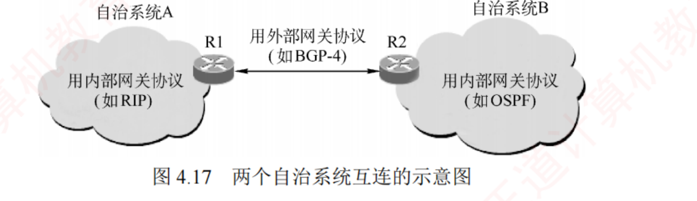
图 4.17 两个自治系统互连的示意图 。左边一朵云是自治系统 A （内部「用内部网关协议，如 RIP 」），右边一朵是自治系统 B （内部「用内部网关协议，如 OSPF 」），两朵云各自伸出一台边界路由器 R1 与 R2 ，中间那条双向箭头标着「用外部网关协议（如 BGP-4） 」。⭐ 这张图一眼说清了三件事 ：① 两个 AS 内部可以用完全不同的 IGP ，互不干涉；② 跨 AS 只能靠 EGP；③ R1 和 R2 这两台边界路由器身兼二职 ——既跑本 AS 的 IGP，又跑 BGP-4 。第 ③ 点是最容易被忽略、也最容易出选择题的一句。 4.4.3 路由信息协议 RIP 考点追踪：RIP 中跳数为 16 的含义（2010）· RIP 使用的下层协议（2017）· RIP 路由收敛机制（2024）· RIP 的优缺点（2024）
RIP 是一种分布式的、基于距离向量的路由选择协议 ，是 IGP 中最早得到广泛应用的协议之一。
必记 · RIP 的五条规定与三问三答
五条规定 ：
① 用跳数 衡量距离：到直连网络的距离规定为 1 ，每经过一个路由器跳数加 1。
② 「好」路由 ＝ 所经路由器数量最少（跳数最少）。
③ 一条路径最多只能包含 15 个路由器，跳数 16 ＝ 目的网络不可达 ⟹ RIP 仅适用于小型自治系统。
④ 路由表项三字段：<目的网络 N，距离 d，下一跳路由器地址 X> ，读作「我通过 X 到 N 的距离是 d」。
⑤ 每个路由器维护一个距离向量（到所有目的网络的距离记录）。
三问三答（必背） ：
问 答 和谁交换 仅和直接相邻的路由器 交换什么 本路由器当前的完整路由表（全部路由信息） 何时交换 按固定时间间隔（默认 30 秒） ；拓扑变化时也及时通告
⭐ RIP 是应用层协议，使用 UDP 传送（端口 520） ；
⚠️
RIP 选的路径不一定时延最短，但一定跳数最少 ——
因为它只看跳数。 必记 · RIP 的距离向量更新算法（2024 综合真题的第一问 ）
收到相邻路由器 X 发来的 RIP 报文后 ：
第 1 步 把报文里【所有】项目改一遍：
下一跳 ← X 距离 ← 距离 + 1
第 2 步 逐项与自己的路由表比较：
IF 表中【没有】目的网络 N
⟹ 加入路由表（发现新网络）
ELIF 表中有 N，且原下一跳【就是 X】
⟹ 【无条件】用新项目替换（以最新消息为准）
ELIF 表中有 N，但原下一跳【不是 X】
⟹ 仅当新距离 d【更小】时才替换（找到更优路径）
ELSE 什么也不做
第 3 步 若连续 180 秒未收到某邻居的更新报文
⟹ 把该邻居对应的路由项距离置为 16（不可达）
⚠️ 第二条是全节最容易错的一条：下一跳相同就无条件 更新，哪怕距离变大 。
理由：下一跳没变，说明这条信息就是从这条路上来的最新 消息，必须以最新为准；只有下一跳不同时才去比距离 。 必记 · 书上主例：R6 收到 R4 的路由表后怎么改（表 4.4 → 表 4.5）
目的网络 R6 原表 R4 发来 加 1 改下一跳后 R6 更新后 依据 Net1 （无） 3, R1 4, R4 4, R4 表中没有 ⟹ 新增 Net2 3, R4 4, R2 5, R4 5, R4 下一跳相同 ⟹ 无条件更新（距离从 3 变 5 也照换） Net3 4, R5 1, 直接交付 2, R4 2, R4 下一跳不同，新距离 2 < 原距离 4 ⟹ 更新
🐍 已按三条规则逐项复算：更新后 R6 的表 ＝ Net1<4,R4> · Net2<5,R4> · Net3<2,R4>，与表 4.5(b) 完全吻合。
「加 1 并把下一跳改为 X」这一步的含义是：R6 可以通过 R4 到达这些网络，但距离比 R4 自己到达它们的距离大 1。 必记 · RIP 的优缺点 2024
优点 ：① 实现简单、开销小、收敛过程较快；② 「好消息传播得快」 ——发现更短的路由后，更新信息会迅速传遍所有路由器。 缺点 ：① 限制了网络规模（最大有效距离 15）；② 交换的是完整路由表 ，网络越大通信开销越大；
③ 「坏消息传播得慢」——故障时要反复多次交换才能收敛，即慢收敛 / 无穷计数问题。
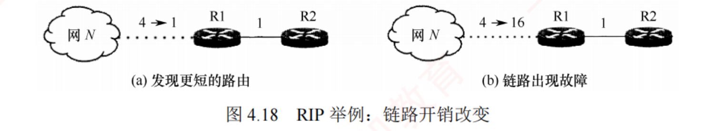
图 4.18 RIP 举例：链路开销改变 。左右两幅图的拓扑完全一样——网 N — R1 — R2 ，R1 与 R2 之间的链路开销为 1 ；差别只在 N 到 R1 那条线上的标注：(a) 发现更短的路由 标着「4 → 1 」（距离变小 ＝ 好消息 ），(b) 链路出现故障 标着「4 → 16 」（16 ＝ 不可达 ＝ 坏消息 ）。⭐ 两幅图的区别只有一个数字，结果却天差地别 ：(a) 一轮就传完；(b) 要爬 12 轮 ≈ 6 分钟 。看图时把这两个数字并排记住——「4→1 快、4→16 慢」，就是本节最著名的那句「好消息传播得快、坏消息传播得慢」的全部内容。 我的补讲 · 「坏消息传播得慢」是怎么发生的：一步一步推给你看
书上说 X （图 4.18b）：R1 与 R2 相邻、链路开销 1；初始 R1 有
<N, 4, 直接>，R2 有
<N, 5, R1>。
某刻 R1 发现 N 不可达（距离置 16），
但要等下一次周期性更新（30s）才通知 R2 ；
而 R2 可能
抢先 把自己的
<N, 5, R1> 发给了 R1。
潜台词是 Y ：
R1 收到后误以为「原来还能绕道 R2 到 N」 ——
而 R2 那条路本来就是经 R1 的，这是一个「自己教坏自己」的回环。
于是距离开始一格一格往上爬 ：
R1 <N,16,直接> R2 <N,5,R1>
⟹ R1 收到 R2 的报文，改成 <N, 6, R2> ← 第一次「教坏」
⟹ R2 收到 R1 的报文，改成 <N, 7, R1> ← 此后【下一跳相同 ⟹ 无条件替换】
⟹ <N,8,R2> → <N,9,R1> → … → <N,16,R2> → <N,16,R1>
共 12 轮周期性交换 × 30s ≈ 6 分钟，双方才都判定「N 不可达」
🐍 我严格按三条更新规则做过事件级模拟：确实是 12 轮 ≈ 6 分钟，与书上叙述吻合。
⚠️ 模拟时的关键点：R1 第一次把下一跳改成 R2 之后，后续每次收到 R2 的报文都属于「下一跳相同 ⟹ 无条件替换」，所以距离才会一路爬升；
若误用「只在更短时才更新」，会卡在 6/7 反复震荡而永远到不了 16。
所以能考 Z ：
① 问「几轮后收敛」——按上面的爬升数；② 问「跳数上限 15 有什么用」——给无穷计数封顶，否则会无限循环 ；
③ 问「好消息为什么快」——更短的路由一旦出现，任何一条规则都会立刻接受它，一轮传一跳，没有回环 。 📄 p.191
4.4.4 开放最短路径优先协议 OSPF 考点追踪：OSPF 与 RIP 特性对比（2024）· OSPF 使用的下层协议（2017）
OSPF 是分布式链路状态算法的典型代表，采用 Dijkstra 最短路径算法。 名字里虽有「最短路径优先」，但这不意味着其他协议不用最短路径原则 ——AS 内使用的所有路由协议都在找最短路径，只是「最短」的度量标准不同 （RIP 量跳数，OSPF 量代价 ）。
必记 · OSPF vs RIP 的四个主要区别（2024 直接考这张表 ）
# OSPF RIP 1 用洪泛法 向本 AS 中所有 路由器发送信息 ：向所有输出端口发给邻居，邻居再转给它的所有邻居（但不再回传给刚刚发来信息的那个路由器 ），最终全区域每台都收到一个副本仅向直接相邻 的几个路由器发送 2 发的是本路由器与其相邻路由器之间的链路状态（局部拓扑） 发的是自己所知的全部路由信息（完整路由表） 3 仅在链路状态发生变化时才触发洪泛更新 ，收敛快，不会出现「坏消息传得慢」 不论拓扑是否变化都定期交换 4 OSPF 是网络层协议，不用 UDP 也不用 TCP，直接封装在 IP 数据报中（IP 首部协议字段 ＝ 89） RIP 是应用层协议，使用 UDP（端口 520）
📌 书上灰框给了「层次判断题」的判据，原话很值钱 ：
「用 UDP 传送 」是指把协议数据作为 UDP 报文的数据部分 ；「直接使用 IP 数据报传送 」是指把协议数据直接作为 IP 数据报的数据部分 。
RIP 报文属于前者。 必记 · OSPF 另外五项优势
① 支持对每条路由设置不同的代价 （可针对不同业务类型算差异化路径）；② 多条等代价路径时可实现负载分担（负载均衡） ；③ 分组具备鉴别功能 ，确保只在可信路由器之间交换链路状态；④ 支持可变长子网掩码和无分类编址 （⚠️ 这一条正是 RIP 的短板，选择题常拿来对比 ）；⑤ 每条链路状态通告都带一个 32 位序号 ，序号越大表示状态越新。 所有路由器最终构建出一致的链路状态数据库 LSDB ，再各自用 Dijkstra 算出路由表。 书上灰框，极易被忽略但很能出题：Dijkstra 虽能算出完整的最优路径，但路由表中不存整条路径，只存「下一跳」 ——只有到了下一跳，才能确定再下一跳怎么走。
必记 · OSPF 的区域划分（图 4.19）
为支持大规模网络，OSPF 把一个 AS 划分为若干区域（Area） 。
好处：把洪泛交换链路状态的范围限制在各区域内，而不是整个 AS，从而显著减少通信开销。
每个区域由一个或多个区域边界路由器 负责为进出该区域的分组提供路由（图 4.19 中的 R3、R4、R7 ）。
AS 内必须有一个区域配置成主干区域 （0.0.0.0） ，它包含 AS 内的所有区域边界路由器，用于连通其他区域。跨区域传送的路径固定为：源区域 → 本地区域边界路由器 → 主干区域 → 目的区域边界路由器 → 目的地。 主干区域中还要指定一个自治系统边界路由器 （图中的 R6），专门负责与本 AS 之外的其他 AS 交换路由信息。 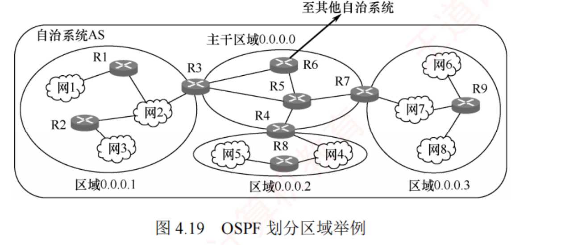
图 4.19 OSPF 划分区域举例 。一个大椭圆是自治系统 AS ，里面套着四个小椭圆：主干区域 0.0.0.0 （含 R3、R5、R6、R7、R4）与三个普通区域——0.0.0.1 （R1、R2，挂网1/网2/网3）、0.0.0.2 （R8，挂网4/网5）、0.0.0.3 （R9，挂网6/网7/网8）。顶上一条线标着「至其他自治系统 」，从 R6 引出。⭐ 看图要认出两类特殊路由器 ：① 区域边界路由器 ＝ 同时踩在两个椭圆边界上的那几台（R3、R4、R7 ）——每个区域至少有一台；② 自治系统边界路由器 ＝ 通往外部 AS 的那台（R6 ），它在主干区域 里 。再顺着图走一遍跨区域路径：从区域 0.0.0.1 的网 1 出发 → R3（本地区域边界）→ 主干区域 → R4（目的区域边界）→ 区域 0.0.0.2 的网 4 ——「必须经过主干区域」这条规则在图上是看得见的：三个普通区域彼此没有任何直接连线 。 必记 · OSPF 的五种分组（记住谁问谁答）
# 分组 作用 1 问候（Hello） 发现邻居、维持邻接关系 ，确认链路双向连通2 数据库描述（DD） 发送自己 LSDB 中所有链路状态项目的摘要 3 链路状态请求（LSR） 向邻居请求 某些链路状态项目的详细信息 4 链路状态更新（LSU） 用洪泛法发送链路状态通告 LSA，是 OSPF 最核心的部分 5 链路状态确认（LSAck） 对链路更新分组的确认
⭐ 五种分组正好串成一条完整的剧情：Hello 找到人 → DD 对目录 → LSR 要细节 → LSU 给细节 → LSAck 回执 。
这样记比逐条背名字快得多。 必记 · OSPF 的四个时间常数（经常直接问数字 ）
常数 值 含义 问候间隔 10 s 相邻路由器每隔 10s 交换问候分组 判死时间 40 s 40s 内未收到邻居的问候分组 ⟹ 判定邻居不可达 ，立即更新 LSDB 并重跑 DijkstraLSA 最大生存期 60 分钟 超过则失效 LSA 刷新周期 30 分钟 最初生成该 LSA 的路由器定期刷新，防止 LSA 丢失或异常
⚠️
书上补了一句常被拿去出题的话：网络中传送的大多数 OSPF 分组都是问候分组 （
因为它每 10 秒就要发一轮，而其余四种只在拓扑变化时才出现 ）。
我的补讲 · OSPF 的可靠性是自己做的，这一点和 BGP 形成绝妙对照
书上说 X ：OSPF 用 LSU 洪泛、用 LSAck 确认；BGP 走 TCP。
潜台词是 Y ：
两者都需要可靠传输 ，但解决方式完全相反 ——
OSPF 直接坐在 IP 上（IP 不可靠），所以它自己实现了一套确认机制（LSAck） ；
BGP 干脆借用传输层的 TCP ，一行确认代码都不用写。
所以能考 Z ：
①「OSPF 如何保证可靠传输」——靠 LSAck 确认分组，不靠传输层；
② 由此可推出「OSPF 的层次」——它自己做确认这件事本身就说明它下面没有可靠传输层，所以它是网络层协议 。
⭐
把三个协议的可靠性来源排一排，这条线就闭合了 ：
协议 坐在谁上面 可靠性从哪来 RIP UDP（不可靠） 不要求可靠 ——丢一次没关系，30 秒后还会再发一遍OSPF IP （不可靠）自己做：LSAck 确认 + LSA 序号 BGP TCP （可靠）直接继承 TCP
⟹ 「协议的可靠性可以自己做、可以借下层、也可以干脆不要」，这是 408 里最好的一个分层设计案例。 4.4.5 边界网关协议 BGP 考点追踪：BGP 的功能（2013）· BGP 使用的下层协议（2013、2017）· BGP 会话类型（2024）· BGP 报文类型及作用（2024）· BGP 路由选择的策略（2024）
BGP 是不同自治系统的路由器之间交换路由信息的协议，是一种外部网关协议。 RIP 和 OSPF 都只能在一个 AS 内工作；若没有 BGP，全世界数以万计的 AS 就都是一个个彼此孤立的「孤岛」 。
必记 · BGP 为什么不追求「最佳路由」（两条理由 + 一句结论）
① 互联网规模太大 ——AS 之间的路由选择非常困难，每个主干网路由器表中的项目数都极其庞大，要寻找最佳路由是很不现实的 ② AS 之间的路由选择必须考虑政治、安全或经济等因素 （这是 IGP 完全不需要考虑的 ）。⟹ 结论：BGP 只能力求寻找一条能够到达目的网络且比较好的路由（不能兜圈子） ，而并非寻找一条最佳路由 。 BGP 采用路径向量 路由选择协议 （与 DV、LS 都不同，是第三种 ）；BGP 是应用层协议，基于 TCP 实现（端口 179） 。
必记 · BGP 路由的两个关键属性
BGP 路由 = <前缀, BGP 属性> = <前缀, AS-PATH, NEXT-HOP>
AS-PATH（自治系统路径） ：记录该路由
所经过的自治系统序列 ；每个 AS 有全局唯一的
ASN ，
路由每经过一个 AS 就把它的 ASN 加进 AS-PATH 。
⟹ BGP 路由指出经过哪些 AS ，但不指明 具体经过哪些路由器。
NEXT-HOP（下一跳） ：接收该路由的路由器去往目的网络时应使用的下一跳地址；
通常是通告此路由的邻居 AS 的边界路由器上、与本 AS 直连的那个接口 IP ，即 AS-PATH 中第一个 AS 的入口点。 必记 · eBGP 与 iBGP 2024
一个 AS 中有两类路由器：边界路由器 与内部路由器 。
边界路由器之间、以及 AS 内部的 BGP 路由器之间，都通过端口 179 的半永久 TCP 连接 （交换完信息仍保持连接）交换 BGP 路由信息。
每对通过 TCP 交换 BGP 报文的路由器称为 BGP 对等方 ，该 TCP 连接称为 BGP 会话 。
会话类型 在哪 外部 BGP（eBGP）会话 跨越两个 AS 内部 BGP（iBGP）会话 位于同一个 AS 内部
⟹ BGP 不仅用于 AS 之间，还运行在 AS 内部 ，以确保外部路由信息在整个 AS 中正确传播。
⚠️ 为避免路由信息丢失，BGP 要求 AS 内的任意两台 BGP 路由器之间都建立 iBGP 会话 ，但不要求物理直连 （全连接的是「会话」不是「链路」）。 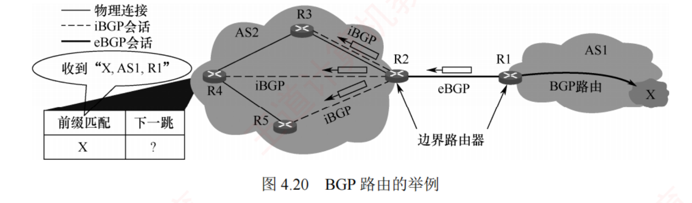
图 4.20 BGP 路由的举例 。左上角有一张三种线型的图例 ：实线＝物理连接、虚线＝ iBGP 会话 、粗实线＝ eBGP 会话 ——这张图例是全图的钥匙，先看它再看图 。右边小云是 AS1 （含 R1 与网络 X ），左边大云是 AS2 （含边界路由器 R2 与内部的 R3、R4、R5）。R2 与 R1 之间是一条 eBGP 会话 （粗线，标着 eBGP ），AS2 内部 R2–R3、R2–R4、R2–R5 之间是三条 iBGP 会话 （虚线，各标 iBGP ）。左下角画着 R4 那张待填的路由表：「前缀匹配 X ｜ 下一跳 ? 」 ，旁边气泡写着 R4「收到 X, AS1, R1 」。⭐ 整张图就是在问那个问号该填什么 ——答案不是 R1（在别的 AS 里，够不着），而是先解析出必须经 R2，再用 IGP 算出到 R2 的下一跳 R3 。另外注意：iBGP 的虚线是会话 不是链路，R2–R5 之间并没有物理直连——这正是「iBGP 要求两两建会话但不要求物理直连」的图示。 我的补讲 · 图 4.20 那个例子在讲什么：BGP 路由要「翻译」两次才能进路由表
书上说 X ：AS2 的内部路由器 R4 收到一条 BGP 路由「X，AS-PATH＝AS1，NEXT-HOP＝R1」，最后在路由表里写下
<X, R3>。
潜台词是 Y ：
从「NEXT-HOP＝R1」到「下一跳写 R3」中间隔着两次翻译 ，这正是本例的全部要点：
第一次翻译（NEXT-HOP 解析） ：R1 在 AS1 里，AS2 的内部路由器根本无法直接把分组发给它 ；
R4 知道 R1 是自己的 eBGP 对等方 R2 的邻居 ⟹ 要去 R1，必须先到 R2 ，路径变成「R2→R1→X」。第二次翻译（IGP 查找） ：R4 再用内部网关协议 （RIP/OSPF）算出「我到 R2 的最优路径」 ，
假设查得下一跳是 R3 ⟹ 于是在路由表里写 <X, R3>
最终转发路径：R4 → R3 → R2 → R1 → X （
同理 R3 的表里会写 <X, R2> ）。
所以能考 Z ：
每个路由器收到新的 BGP 路由通告后，都要执行「NEXT-HOP 解析 + IGP 查找」两步，才能把路由正确写入本地路由表。
2013 与 2024 两道综合真题都在考这个「BGP 给方向、IGP 给下一跳」的分工。
⭐
一句话记法：BGP 负责「出了本 AS 该往哪个 AS 走」，IGP 负责「在本 AS 内部怎么走到出口」 ——两者接力，缺一不可。 必记 · BGP 路由选择的四条原则（按优先级从高到低，顺序必背 ）
优先级 原则 说明与书上给的反例 1 本地偏好 LOCAL-PREF 最高 其值由管理员根据政治或经济策略设置 （图 4.21：高速链路设 300、低速设 200 ⟹ 全部流量走高速那条）。⚠️ 即使高速链路过载，BGP 也不会自动切一部分到空闲的低速链路。 2 AS-PATH 最短（AS 跳数最少） 图 4.22：AS1→AS2→AS3→AS5（经 2 个 AS）vs AS1→AS4→AS5（经 1 个）⟹ 选后者。⚠️ 但 AS4 若是个很大的 AS，分组在它内部要转发更多次，反而更慢——AS 跳数最少未必最好 。 3 热土豆路由选择 让分组经过最少的转发次数离开本 AS （像扔掉烫手的土豆）。此时要用 IGP 来算，不同路由器算出的结果不同 ：图 4.23 中 R1 选 R4（走路由 2），R2 选 R3（走路由 1）。4 BGP 标识符数值最小 BGP 报文首部的 BGP 标识符是运行 BGP 的路由器的唯一标识；前三条都定不下来时用它兜底
⭐ 口诀：偏好 → 跳数 → 热土豆 → 标识符
（
「先听老板的（策略），再看远近（AS 数），再看谁能最快甩出去（热土豆），最后按编号（标识符）」 ）。
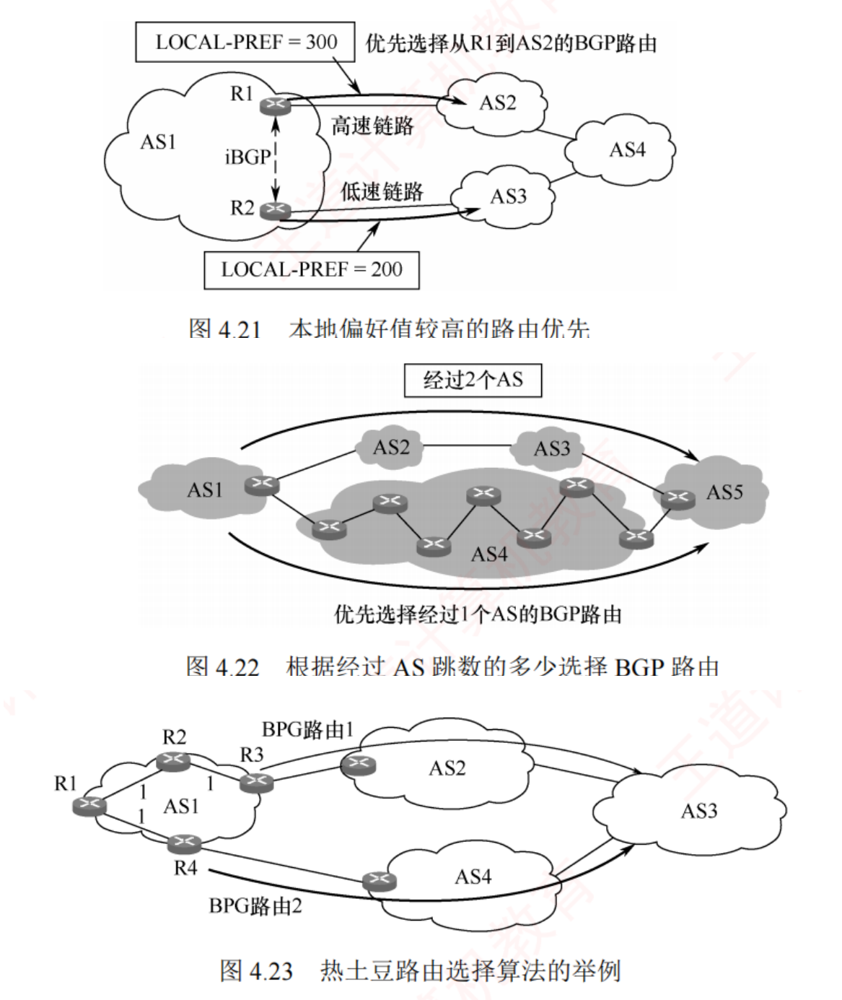
图 4.21 / 4.22 / 4.23——BGP 选路前三条原则的三个例子，竖排在一起对照看。 【上·图 4.21 本地偏好】 AS1 里 R1 与 R2 通过 iBGP 相连：R1 走「高速链路」到 AS2，标 LOCAL-PREF ＝ 300 ；R2 走「低速链路」到 AS3，标 LOCAL-PREF ＝ 200 ；AS2、AS3 都能到 AS4。300 > 200 ⟹ 所有发往 AS4 的流量都从 R1 离开 。⚠️ 图上那条低速链路即使完全空闲、高速链路已经过载，BGP 也不会自动分流——这是 LOCAL-PREF 的代价。 【中·图 4.22 AS 跳数】 从 AS1 到 AS5 有两条弧：上弧经 AS2→AS3（标「经过 2 个 AS」） ，下弧只经 AS4（标「优先选择经过 1 个 AS 的 BGP 路由」） ⟹ 选下弧。⚠️ 但请看图上的 AS4——它被画成一朵塞满了路由器的大灰云 ，内部要转发好多跳。这就是书上那句「AS 跳数最少的路由未必是最好的」的图证。 【下·图 4.23 热土豆】 AS1 内 R1—R2—R3 与 R1—R4 ，各段开销都标着 1 ；路由 1 经 R3→AS2→AS3 ，路由 2 经 R4→AS4→AS3 。两条路由的偏好与 AS 数都相同 ⟹ 各路由器各自选「离本 AS 出口最近」的那条 ：R1 到 R4 只要 1 跳 ⟹ 选路由 2；R2 到 R3 只要 1 跳 ⟹ 选路由 1 。⭐ 同一个 AS 里的两台路由器选了不同的 BGP 路由——这正是热土豆算法「结果因路由器而异」的含义。 顺带记一处书误 ：图 4.23 里两条路由的标注印成了「BPG 路由 1／2」，正文里写的是「BGP 路由 1／2」——是图上把 BGP 拼成了 BPG （dpi 400 复核过）。不影响做题，看到别以为是新名词。 必记 · BGP 的四种报文与两个时间常数 2024
刚启动时会话两端交换完整的 BGP 路由表 ；此后仅在路由发生变化时发送更新部分 （
节省带宽、降低处理开销 ）。
# 报文 作用 1 Open（打开） 与对等方建立关系 、使通信初始化、协商协议参数 2 Update（更新） BGP 的核心 ：通告某一路由的信息，以及列出要撤销的多条路由3 Keepalive（保活） 周期性证实与对等方的连通性 4 Notification（通知） 发送检测到的差错
⚠️ 一条极容易忽略的规定：撤销路由可以一次撤销多条 ，但新增路由时每个更新报文只能增加一条 。
时间常数 ：
Keepalive 发送间隔 60s ，保持时间 180s （前者恰是后者的 1/3 ） ；
每收到任意 BGP 报文，保持时间计时器就重置为 0；若在保持时间内没收到任何 BGP 报文，就认为对等方失效、关闭连接。
建立流程：先建 TCP 连接 → 交换 Open 报文（相互识别、协商参数）→ 接受方返回 Keepalive 报文 → 会话建立 。 必记 · ⭐⭐ 表 4.6 三种路由协议的比较（本章最该默写的一张表 ）
协议 RIP OSPF BGP 类型 内部（IGP） 内部（IGP） 外部（EGP） 路由算法 距离向量 链路状态 路径向量 传递协议 UDP （端口 520，应用层协议）IP （协议号 89，网络层协议）TCP （端口 179，应用层协议）路径选择 跳数最少 代价最低 较好，非最佳 交换节点 和本节点相邻的路由器 网络中的所有路由器 和本节点相邻的路由器 交换内容 当前本路由器知道的全部信息（自己的路由表） 与本路由器相邻的所有路由器的链路状态 首次：整个路由表；非首次：有变化的部分
⭐ 六行里最常单独出题的是第三行（传递协议）与第五行（交换节点）。
第三行的记法：「RIP 走 U（UDP）、OSPF 走 I（IP）、BGP 走 T（TCP）」——UIT 三个字母，按 R-O-B 的顺序念一遍就记住了。 我的补讲 · 三协议对照表的「反向出题法」：命题人只会这四种换法
把表 4.6 的每一格拆开，能造出的错误选项其实只有四类 ，认出套路就不会被绕：
换法 典型错项 反驳 ① 交换传递协议 「OSPF 使用 UDP 传送」「RIP 直接封装在 IP 中」「BGP 使用 UDP」 UDP-IP-TCP 顺序不能乱；OSPF 是唯一直接坐在 IP 上的 ② 交换类型 「BGP 是内部网关协议」「OSPF 用于 AS 之间」 只有 BGP 是外部的 ③ 交换算法 「OSPF 基于距离向量」「RIP 基于链路状态」「BGP 基于链路状态」 DV / LS / 路径向量三者一一对应，BGP 是独一份的路径向量 ④ 交换「和谁换」 「OSPF 只与相邻路由器交换信息」 OSPF 洪泛到全区域所有 路由器 ；只与邻居换的是 RIP 和 BGP
⚠️ 第 ④ 类最阴 ：
OSPF 的洪泛动作 确实是「发给相邻路由器」，但结果 是全区域每台都收到 ——
题目问「向谁发送信息」时，OSPF 的标准答案是「本自治系统中的所有路由器」。
⭐
我的自测法：把表 4.6 蒙住协议名那一行，只看六个属性，能不能倒着说出是哪个协议。
做得到，这一节的选择题就基本满分了。 知识串联 · 路由协议这一节，往三个方向各伸出一根线
端口 RIP 走 UDP 520、BGP 走 TCP 179 → ch5 传输层 ：
把这两个端口号和 ch6 的 DNS 53、HTTP 80、FTP 20/21 放在同一张表里背，效率高得多 ；
而「OSPF 没有端口号」这件事本身就是它是网络层协议的证据。 分块与映射 AS 分层路由 ＝ 用层次结构压缩全局表规模 ，
与《组成原理》多级 Cache、《操作系统》多级页表是同一个套路 ——
OSPF 内部再划「区域」，等于在层次里又加了一层，动机完全一样：把洪泛/查找的范围关进一个小盒子。 洪泛 OSPF 的洪泛法 ← ch3 3.5 的广播介质、← ch6 P2P 的查询扩散 ：
三处都要处理同一个问题——怎么防止无限转发 。
OSPF 的答案是「不回传给刚发来的那台」＋ LSA 序号去重，这与 ch3 交换机的生成树、ch6 的 TTL 限制是同一族解法。 可靠传输 「路由协议自己要不要做可靠传输」是一道很好的分层反思题 ：
OSPF 自己做（LSAck）· BGP 借 TCP · RIP 干脆不要 ——三种答案都对，因为三者对丢包的容忍度不同。
📄 p.208
4.5 IP 多播 4 页 · 5 题 · 0 真题 · 只有一个计算点
我的补讲 · 零真题的两节（4.5 + 4.6）到底要不要读？要，但只读三页的量
先把事实摆清楚 ：
4.5（4 页）与 4.6（2 页）合计 6 页，0 道统考真题、0 处考点追踪 ——这是全章唯一的零真题区间 。
本章 44 道真题，一道都没落在这里。
但也不能整个跳过，因为这 6 页里各藏着一个能直接出计算/判断题的硬点 ：
节 唯一必须掌握的硬点 为什么它会考 4.5 IP 多播 IP 多播地址 → 多播 MAC 的 32:1 映射（要能手算） 它是本章少数几个「给个地址、算个结果 」的题型，成本低、区分度高 4.6 移动 IP 三角路由（去程绕归属代理、回程直达） 一句话就能出一道判断题，且与 ch5 的 TCP 四元组直接相关
⟹ 我的建议读法：这两节用半小时快读一遍，把上面两个硬点练熟 ，其余当常识过；
但不要因为「零真题」就整节不看——它们零真题只是因为篇幅小，不是因为不考。 4.5.1 多播的概念
多播 ＝ 把同一份数据同时发送给多台主机，即一对多的通信 ；在互联网上进行的多播称为 IP 多播 。与单播相比，多播在一对多通信中能显著节省网络资源 ：视频服务器向 90 台主机发同一段视频时，单播要发 90 份，多播只发 1 份 ——该分组在传输路径上仅当遇到分岔节点 时才被复制并转发 。多播的实现依赖路由器支持，支持多播路由协议的路由器称为多播路由器 。
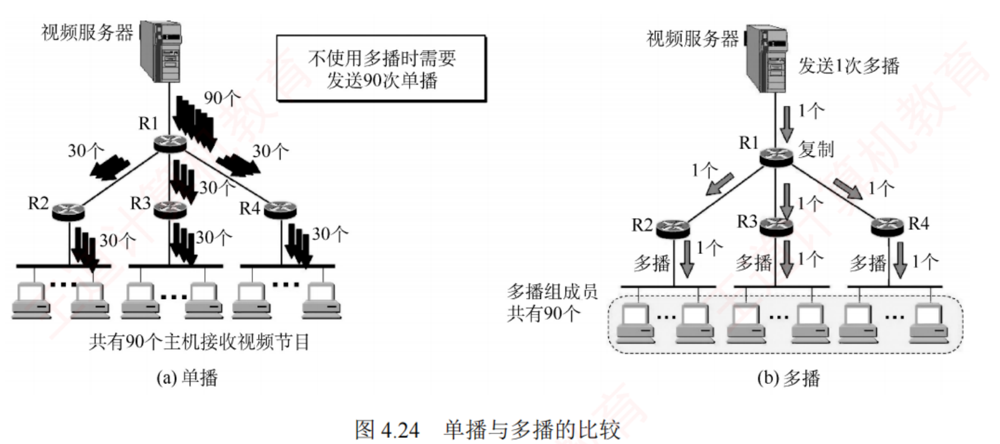
图 4.24 单播与多播的比较 ——同一张拓扑，两套数字 。(a) 单播 ：视频服务器一口气发出 90 个 分组（图上画成一大把箭头，旁边框着「不使用多播时需要发送 90 次单播 」），R1 再向 R2／R3／R4 各发 30 个 ，每台路由器又向其下的 30 台主机各发 30 个。(b) 多播 ：服务器只「发送 1 次多播 」，R1 收到后复制 ，向 R2／R3／R4 各送 1 个 ，三台路由器再各多播 1 个 给自己下面的主机组；底部虚线框标着「多播组成员共 90 个 」 。⭐ 两图对照要抓的就一件事：分组只在「分岔节点」处被复制 ——服务器到 R1 那一段，单播要跑 90 份，多播只跑 1 份，省下的正是这一段 。这也解释了为什么多播「大幅减轻服务器负担和网络负载」。 4.5.2 IP 多播地址
必记 · 多播地址的四条与「三个注意」
① 多播数据报的源地址是源主机的 IP 地址，目的地址是 IP 多播地址 。 ② IP 多播地址就是 IPv4 的 D 类地址 ：前四位 1110，范围 224.0.0.0 ～ 239.255.255.255 ，
可支持 228 个多播组 ，主机可随时加入或离开。③ 多播数据报的协议字段值由它携带的上层协议决定 ：携带 UDP 数据 ⟹ 17；携带 IGMP 报文 ⟹ 2 。三个注意（必背） ：
❶ 多播数据报也是「尽最大努力交付」，不提供可靠交付；
❷ 多播地址只能用于目的地址，不能用于源地址 ；
❸ 对多播数据报不产生 ICMP 差错报文 （← 与 4.2.7「四种不发 ICMP」的第 ③ 条是同一条规则的两处出现 ）。多播机制仅适用于 UDP ——TCP 是面向连接的，建立的是一对一的端到端连接，无法支持一对多。
4.5.3 在局域网上进行硬件多播（本节唯一的计算点）
必记 · IP 多播地址 → 多播 MAC 的映射规则（要能手算）
IANA 保留的以太网多播地址范围是 01-00-5E-00-00-00 ～ 01-00-5E-7F-FF-FF ：
这 48 位中
前 25 位固定不变，只有后 23 位可用作多播 。
而 D 类地址有 28 位可标志多播组，这 28 位中的高 5 位无法映射
⟹
32（＝25 ）个不同的 IP 多播地址会映射到同一个多播 MAC 地址，两者是多对一 的关系。
手算三步（口诀：【前三字节写死 · 第 4 字节与 0x7F · 后两字节照搬】）
224.215.145.230 ⟹ ?
第1步 前三字节固定写 01-00-5E
第2步 取 IP 的第 2 段 215 = 1101 0111，【最高位清 0】⟹ 0101 0111 = 0x57
第3步 IP 的第 3、4 段原样转十六进制：145 = 0x91，230 = 0xE6
⟹ 01-00-5E-57-91-E6
🐍 已用自写映射函数复算：224.215.145.230 ⟹ 01-00-5E-57-91-E6；
224.128.64.32 与 224.0.64.32 都映射成 01-00-5E-00-40-20 ，印证 32:1 —— 与书上例子逐字吻合。
⭐
由于多对一，主机收到多播数据帧后，还必须在 IP 层用数据报首部的目的 IP 再过滤一次 ，
只保留本机所属多播组的数据报，其余丢弃。 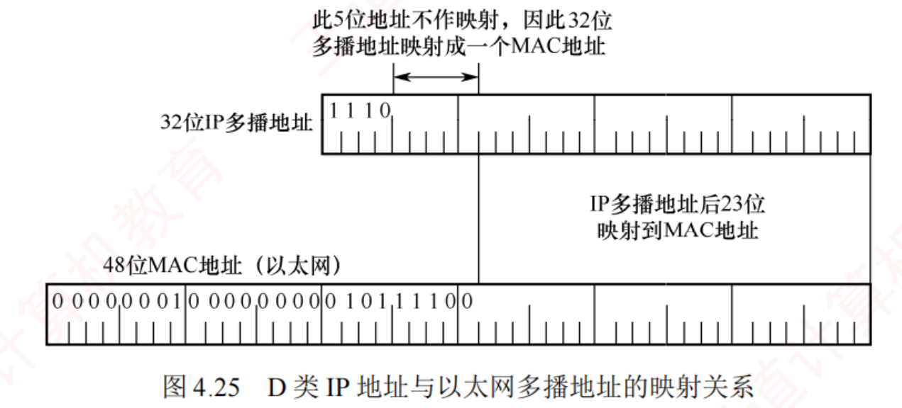
图 4.25 D 类 IP 地址与以太网多播地址的映射关系 。上面一条是 32 位 IP 多播地址 （最左边四格写着 1110，即 D 类的标志），下面一条是 48 位 MAC 地址 （左边固定写死 0000 0001 0000 0000 0101 1110 0，正是 01-00-5E 加一个 0）。中间有两处关键标注：① 左上角箭头指着 IP 地址紧跟 1110 的那 5 格，写着「此 5 位地址不作映射，因此 32 位多播地址映射成一个 MAC 地址 」；② 右侧一条长横线写着「IP 多播地址后 23 位映射到 MAC 地址 」 。⭐ 整张图就是一句话的图示：28 位里只有后 23 位过得去，高 5 位被丢掉 ⟹ 25 ＝ 32 个 IP 撞同一个 MAC。 手算时那句「第 2 字节最高位清 0」，对应的正是图上被丢掉的 5 位中落在第 2 字节里的那一位 。 陷阱 · 忘了把第 2 字节的最高位清 0——这是本节唯一的失分点
03 题的四个选项就是围绕这一步造出来的 ：
选项 第 4 字节 怎么造出来的 A. 01-00-5E-57 -91-E6 0x57 正解 ：215 ＝ 1101 0111，最高位清 0 ⟹ 0101 0111B. 01-00-5E-D7 -91-E6 0xD7 直接把 215 搬过去了 （215 ＝ 0xD7）——这就是「忘了清最高位」 C. 01-00-5E-5B -91-E6 / D. …-55 -… 0x5B / 0x55 凑数用的，位模式对不上
⟹ 只要记住「第 2 段先与 0x7F」这一步，这道题就是白送的。
反过来说，若干扰项里出现「把 IP 第 2 段原样搬进 MAC」的，一律排除。 4.5.4 IGMP 与多播路由协议
必记 · IGMP 的三条限定 + 两个阶段
三条限定 ：① IGMP 让连接到本地局域网的多播路由器 知道：本局域网上是否有主机加入或退出了某个多播组。 ② IGMP 仅作用于本地子网 ——它既不知道 某个多播组的总成员数量，也不了解 成员分布在哪些网络 。③ IGMP 报文封装在 IP 数据报（协议字段值 2 ）中传送；IGMP 是 IP 协议的一个组成部分，不被视为单独的协议 。 两个阶段 ：❶ 加入时 ——主机向该多播组的多播 IP 地址发一个 IGMP 报文声明入组，本地多播路由器再用多播路由选择协议把组成员关系通告出去；
❷ 维持时 ——组成员关系是动态的 ，本地多播路由器周期性查询 本网主机；只要有一台响应就认为该组仍活跃；
连续多次查询都无人响应，才判定本网已无该组成员 并停止通告。 多播路由选择的实质：构造一棵以源主机为根的多播转发树 ，
树上每个分组在每条链路上仅传送一次 ，参与转发的路由器不会收到重复的多播数据报 。
⚠️ 不同的多播组对应不同的转发树；同一个多播组若源主机不同，转发树也不同。
我的补讲 · 02 题把 408 里的四种防环机制 并排摆了出来，值得单独做一张卡
书上说 X ：设计多播路由时为避免环路，要
构造多播转发树 （因为树天然无环）。
潜台词是 Y ：
这题的三个干扰项全是「别处的正确知识」 搬过来的 ——
命题人把 408 里四种不同的防环手段摆在一起，考你能不能分清各自的主场。
防环机制 主场在哪 怎么防 构造转发树 本节：多播路由 树本身就没有环 水平分割 4.4.3 RIP 避免距离-向量的无穷计数 TTL 字段 4.2.1 IP 首部 防止分组因环路在网络中无限循环 （不是防环，是给环封顶 ） 生成树协议 ch3 3.8 交换机 把有环的链路层 拓扑裁成树
所以能考 Z ：
题目问「XX 层怎么避免环路」，先定位是链路层、网络层单播、网络层多播 哪一个 ，
四个答案一一对应，绝不通用 。
⟹ 这张表本身就是一道现成的多选题，建议抄进卡库。 📄 p.212
4.6 移动 IP 2 页 · 3 题 · 0 真题 · 只有「三角路由」一个硬点
必记 · 移动 IP 的定义与三种功能实体
移动 IP ＝ 允许移动主机在切换网络接入点时，仍保持其永久 IP 地址不变 的网络协议机制。
目标：不论移动主机当前在哪个网络，发往它的分组都能被自动、透明地正确投递；该机制对上层应用（如 TCP 连接）完全透明 。
实体 定义 移动节点 拥有永久 IP 地址 、可在不同网络间移动的主机 归属代理 （本地代理）连接在归属网络 （初始接入的网络）上的路由器，负责截获并转发发往移动节点的数据 外地代理 连接在被访网络 （当前接入的网络）上的路由器，协助移动节点接收数据 ；它还负责为移动站分配转交地址 并把该地址通知归属代理
陷阱 · 「换个地方上网 + DHCP 拿新 IP」不是 移动 IP
书上专门用一段话否定了这个直觉 ：把笔记本关机、从家里搬到办公室、通过 DHCP 自动获取新 IP 重新接入 ——
尽管物理位置和接入网络都变了，但由于它的 IP 地址已经改变 ，不属于移动 IP 的范畴 。 那移动 IP 到底为了什么？为了让 TCP 连接不断。
若要在移动过程中维持 TCP 传输，就必须保证该连接在漫游期间持续有效；而 TCP 连接由「源 IP + 源端口 + 目的 IP + 目的端口」四元组标识，IP 一变连接立刻作废
⟹ 「让 IP 地址保持不变」正是移动 IP 存在的全部理由。
⟹ 判断题记法：IP 变了 ＝ 不是移动 IP；IP 没变而位置变了 ＝ 才是移动 IP。
必记 · 移动 IP 通信流程五步（第 ③④ 两步就是「三角路由」 ）
每个移动站有一个永久地址（归属地址） ，它最初所在的网络叫归属网络 ；永久地址与归属网络的关联固定不变 。
离开归属网络后接入的网络叫被访网络（外地网络） ，在那里获得一个转交地址 。
本地通信 ：移动站在归属网络时，按传统 TCP/IP 方式直接通信。漫游与注册 ：漫游到被访网络后，先向外地代理 登记、获得转交地址 ；外地代理再把该地址注册到归属代理 。接收数据（B → A，绕远路） ：归属代理截获 所有发往 A 的分组，构建一条通往转交地址的 IP 隧道 ，
把原始分组封装 在新 IP 包里送到外地代理；外地代理解封装 还原出原始分组，直接交给 A。发送数据（A → B，走近路） ：A 发分组时仍用永久地址作源地址 ，
直接通过被访网络的外地代理转发，无须经过归属代理 。移动与返回 ：再次漫游时，新外地代理把新的转交地址注册给归属代理；回到归属网络后向归属代理注销 转交地址，恢复本地直连 。
⚠️ 两点注意 ：
① 转交地址仅用于移动站、归属代理、外地代理之间的通信，应用程序不会使用它 ；
② 外地代理向被访网络中的移动站发送分组时，直接通过 MAC 地址做链路层交付 。
为支持移动 IP，网络层要增加四个新功能 ：
① 移动站→外地代理的登记 协议；② 外地代理→归属代理的注册 协议；
③ 归属代理的隧道封装 协议；④ 外地代理的隧道拆封 协议。 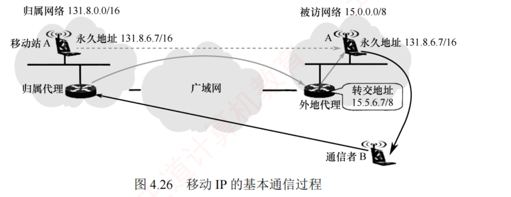
图 4.26 移动 IP 的基本通信过程 。左边是归属网络 131.8.0.0/16 （里面有移动站 A，永久地址 131.8.6.7/16 与归属代理 ），右边是被访网络 15.0.0.0/8 （里面是漫游后的 A ，永久地址仍然是 131.8.6.7/16 ，以及外地代理 ，旁边框着「转交地址 15.5.6.7/8 」），中间隔着一朵「广域网 」云。右下角是通信者 B ，有一条长箭头从 B 一路指向左边的归属代理 。⭐ 那条长箭头就是本图的题眼 ：B 明明和 A 在同一侧，分组却要先飞到左边的归属网络去——因为 B 用的是 A 的永久 地址做目的地址 。接着看那条灰色的弧线 ：它从归属代理跨过广域网指向外地代理，再由外地代理指向 A——这就是隧道（封装 → 转发 → 解封装） 。而 A 回给 B 的那条粗黑箭头是直的 ，压根没碰归属代理 。 一去绕、一回直，合起来就是「三角路由」；图上顶部那条连接两个 A 的虚线，则表示「同一台主机换了地方，永久地址没变」。 我的补讲 · 「三角路由」一张图记牢，03 题就是它的直接考法
书上说 X ：B→A 要经归属代理 + 隧道；A→B 直接走外地代理。
潜台词是 Y ：
这条路径是不对称 的——去程绕一大圈，回程走直线，画出来是个三角形，所以叫三角路由 。
归属代理（归属网络 131.8.0.0/16）
▲ │
① B 发给 A│ │② 隧道封装转发
目的=永久│ ▼
地址 │ 外地代理（被访网络 15.0.0.0/8，转交地址 15.5.6.7/8）
│ │③ 解封装，直接交给 A
通信者 B ──┘ 移动站 A（永久地址仍是 131.8.6.7/16）
▲ │
└────────────────────┘
④ A 发给 B：源=永久地址，【直接经外地代理走，不绕归属代理】
所以能考 Z （03 题原封不动就是这个）：
一台 160.80.40.20/16 的主机移动到别的网络后 ——
「可以直接发送 数据报，但不可以 直接接收数据报」（答案 D） 。
推理链条要能自己走一遍 ：
别人发给它时用的是永久地址 做目的地址 ⟹ 分组必然被路由到归属网络 ⟹ 只能由归属代理截获后隧道转发 ⟹ 不能直接接收 ；
而它自己发出去时用永久地址做源 地址、别人的地址做目的地址，这个分组没有任何理由再绕回归属代理 ⟹ 可以直接发送 。
⭐
另外两道题也一句话 ：
02 题——归属地址固定、转交地址动态改变 ；
01 题的错项 C——注册要通知的是「归属代理」，不是「外部代理」 （
外地代理是本地 登记，注册到归属代理才是关键一步 ）。
知识串联 · 多播与移动 IP 这 6 页，其实全是「旧手法的新用法」
封装 移动 IP 的隧道 ＝ 4.3.4 IPv6 过渡的隧道 ＝ ch3 的 PPP／VPN 封装 ——
三处都是「把一层的完整报文整个 塞进另一层当数据，让中间人看不懂也不需要懂」 。
认出这个手法，三处内容就只用记一次。 分块与映射 多播 IP → MAC 的 32:1 映射，是一次有损压缩 ：
28 位挤进 23 位，必然多对一 ⟹ 必须在上层再过滤一次 ——
这与《组成原理》Cache 的「多个主存块映射到同一 Cache 行 ⟹ 还要比对标记位」、
《数据结构》散列表的「多个关键字散列到同一槽 ⟹ 还要比较关键字」是同一个结构 ：映射降位 ⟹ 冲突 ⟹ 二次校验 。 中断 IGMP 的「周期性查询 + 多次无响应才判定退出」 ，
与 OSPF 的「40s 收不到问候就判死」、BGP 的「保持时间 180s」、RIP 的「180s 超时」是同一族心跳机制 ——
OS 里进程的存活检测、组原里的看门狗计时器，用的也是这一套。 端口与连接 移动 IP 的存在理由直通 ch5 ：TCP 连接由四元组标识，IP 一变连接就断
⟹ 「保持 IP 不变」是维持 TCP 连接的必要条件 ；
而多播只能用 UDP、不能用 TCP，也是同一个道理的反面（TCP 的连接是一对一的）。
📄 p.214
4.7 网络层设备 9 页 · 24 题 · 4 真题 · 全章投产比最高的一节
我的补讲 · 为什么说这 9 页是全章投产比最高的
因为它有一半内容你在 ch3 3.8 已经学过了。
4.7.1 讲的「冲突域 / 广播域」与 ch3 3.8 是同一张表 ，只是那一章从交换机的角度看，这一章从路由器的角度看。
换句话说：你在这 9 页里花的时间，同时买到了两章的分。 数字上也支持这个判断 ：9 页 · 24 题 · 4 道真题（2010、2012、2020 三道选择 + 2019 一道综合 ）＝ 0.44 真题/页 ，
密度排全章第三，仅次于 4.2（0.66）与 4.7 之前的 4.4 按分值算的那部分 ；
而 2019 那道综合真题本身就是「设备选型 + /30 对端地址 + NAT + 广播地址」四合一 ——
与 2022（4.2 综 17）、2020（4.2 综 16）构成一组同源题，做透一道等于做透三道。
4.7.1 冲突域和广播域 考点追踪：网络设备对冲突域和广播域的影响（2010、2020）
必记 · 两个「域」的定义与所属层次
冲突域 ＝ 连接到同一物理介质上的所有节点的集合 ，这些节点之间存在介质争用 现象。
在 OSI 参考模型中，冲突域属于第 1 层（物理层） 的概念。 广播域 ＝ 能够接收同一广播帧的所有节点的集合 。
在 OSI 参考模型中，广播域属于第 2 层（数据链路层） 的概念。 通常所说的局域网 LAN 在逻辑上等同于一个广播域 ；路由器用于连接不同的 LAN，即分隔不同的广播域 。
必记 · ⭐⭐ 三层设备对照表（与 ch3 3.8 同源，两章合并记一次）
设备 工作在哪层 能否分隔冲突域 能否分隔广播域 中继器 / 集线器 物理层 不能 （所有端口同属一个冲突域）不能 （1 个）网桥 / 交换机 数据链路层 能 （每端口一个冲突域）不能 （1 个）路由器 网络层 能 （每端口一个）能 （每端口一个）
⟹ 规律一句话：层次越高，隔离能力越强 ——物理层什么都不隔，链路层隔冲突域，网络层连广播域一起隔。
⚠️
唯一的例外是 VLAN ：
交换机在划分 VLAN 之后可以 分隔广播域 （见 ch3 3.6.4 与本章 2024 真题）。
凡题干里出现「无 VLAN 功能的交换机」这句话，就是在提醒你按上表的默认行答；出现「支持 VLAN」，就要另算。 我的补讲 · 数冲突域/广播域的三步法（每年都有一道，闭眼也要数对）
书上说 X ：三层设备各自能不能分隔两种域。
潜台词是 Y ：
考试从来不问「能不能」，只问「有几个」 ——所以要把定性的表变成可操作的数法：
数广播域 ：只看路由器 ——从路由器的每个「用上了的」接口出发，接口所连的那一整片（不管中间隔了多少交换机、集线器）就是一个 广播域 。
⟹ 广播域个数 ＝ 路由器已连接的接口数（外加与路由器无关的独立网段）。 数冲突域 ：从交换机/路由器的每个端口往外看 ——一个端口下面如果直连主机，那就是 1 个冲突域；
如果下面挂的是集线器 ，那么整台集线器连同它下面的所有主机合起来才算 1 个 。核对 ：集线器永远不增加 冲突域个数（它只是把一堆机器揉进同一个冲突域） 。
⚠️ 2020 那道真题（21 题）的陷阱正是第 2 步 ：
交换机的端口下面挂着集线器，
冲突域的边界落在集线器上而不是主机上 ⟹ 正确答案是 4 而不是 8 。
凡拓扑图里出现集线器，一律先把它连同下挂主机圈成一团再数。 4.7.2 路由器的组成和功能 考点追踪：路由器的功能（2010）
路由器是一种具有多个输入/输出端口的专用计算机 ，任务是互连不同的（异构）网络并转发分组 。在多个逻辑网络（多个广播域）互连时必须使用路由器 ；它可连接不同的 LAN、不同的 VLAN、不同的 WAN，或实现 LAN 与 WAN 的互连。
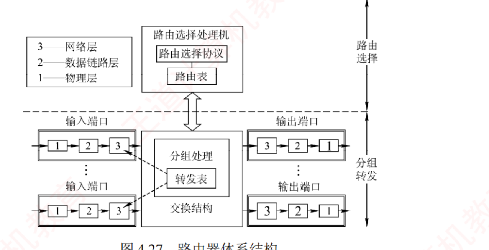
图 4.27 路由器体系结构 。一条水平虚线把整张图切成上下两半 ，右侧还标着两个大括号：上半 ＝「路由选择」 ，里面是「路由选择处理机 」盒子，盒子里装着路由选择协议 与路由表 ；下半 ＝「分组转发」 ，左边一列输入端口 、右边一列输出端口 ，中间是交换结构 ，交换结构里画着「分组处理 」与「转发表 」。⭐ 最该盯的是端口里那三个小方块 1 → 2 → 3（输入端口）与 3 → 2 → 1（输出端口） ——左上角的图例告诉你 1＝物理层、2＝数据链路层、3＝网络层 ：进来时自下而上层层剥（1→2→3），出去时自上而下层层包（3→2→1） 。这正是「路由器的每个端口都包含三层处理模块」那句话的图示，也是它能互连异构网络的原因。 另外注意上下两半之间那个双向空心箭头 ：路由表算好后要下发成转发表，而路由协议分组也要从数据平面上交给处理机——这就是 4.1.4 说的控制平面与数据平面。 必记 · 路由器的两大部分（图 4.27）
从结构上看，路由器由路由选择（控制平面） 与分组转发（数据平面） 两部分构成。
部分 核心部件 做什么 路由选择（控制平面） 路由选择处理机 按所选路由协议（RIP／OSPF）构建路由表 ，并周期性与相邻路由器交换路由信息 以更新维护 分组转发（数据平面） 交换结构 + 一组输入端口 + 一组输出端口 交换结构是路由器内部连接输入与输出端口的高速通路 ，按转发表把分组快速送到合适的输出端口
⭐
书上一句很形象的话：「交换结构本身就是一个在路由器中的网络 」 。
⚠️ 路由器的每个端口 都包含物理层、数据链路层和网络层三层的处理模块 ：
输入端口在物理层 接收比特流，在数据链路层 提取帧、剥离帧头帧尾，再把分组交给网络层 模块 ；
若是普通数据分组 ⟹ 查转发表、经交换结构送到输出端口；若是路由协议分组（RIP／OSPF 报文）⟹ 交给路由选择处理机 。
路由器端口设有缓冲区 暂存分组并可做差错检测；到达速率超过处理能力时缓冲区溢出，后续分组被丢弃
（
⟵ 这正是 4.1.5 说的拥塞在硬件上的样子 ）。
⚠️
书上还提醒：物理端口通常兼具 输入和输出功能，图 4.27 把输入/输出端口分开画只是为了方便理解。 4.7.3 路由表与分组转发 考点追踪：路由聚合与路由表构造（2009、2013）· 路由表分组转发匹配过程（2014）
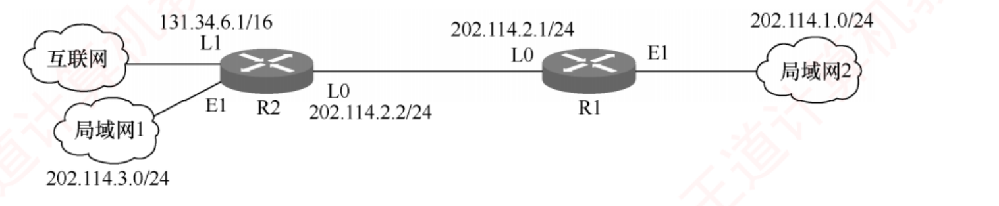
图 4.28 一个简单的网络拓扑 ——下面那张表 4.7 的四行，每一行都能在这张图上指出来。左边 ：一朵「互联网」云与一朵「局域网1（202.114.3.0/24） 」云，都接在 R2 上（R2 的 L1 ＝ 131.34.6.1/16 通互联网，E1 接局域网 1，L0 ＝ 202.114.2.2/24 ）。右边 ：R1 （L0 ＝ 202.114.2.1/24 与 R2 对接，E1 接「局域网2（202.114.1.0/24） 」）。⭐ 对着图读 R1 的路由表 ：第 1 行 202.114.1.0 走 E1 「直连」——就是右边那朵云；第 2 行 202.114.2.0 走 L0 「直连」——就是 R1 与 R2 之间那段线本身；第 3 行 202.114.3.0 下一跳 202.114.2.2 ——那正是 R2 的 L0 口；第 4 行 0.0.0.0/0.0.0.0 也指向 202.114.2.2 ——去互联网的一切都交给 R2 。⟹ 「直连的写接口、非直连的写对端 IP、剩下的全丢给默认路由」，一张四行表就把综合题要写的格式全示范完了。 必记 · 标准路由表的四个字段（按历年统考真题的口径 ）
目的网络 IP 地址 · 子网掩码 · 下一跳 IP 地址 · 接口
（⚠️ 与 4.2.2 提到的「三项核心信息」相比多了一个接口 ——统考综合题要求填的表通常是四列 。）
目的网络 IP 地址 子网掩码 下一跳 IP 地址 接口 202.114.1.0 255.255.255.0 直连 E1 202.114.2.0 255.255.255.0 直连 L0 202.114.3.0 255.255.255.0 202.114.2.2 L0 0.0.0.0 0.0.0.0 202.114.2.2 L0
这是书上表 4.7（图 4.28 拓扑中 R1 的路由表），最后一行就是指向互联网的默认路由 。
⭐ 写路由表的两条格式规矩：① 直连网络的下一跳写「直连／直接交付」而不是某个 IP；② 默认路由写在最后一行（前缀最短、优先级最低）。 必记 · ⭐⭐ 路由表 vs 转发表（本节最该背的一段）
转发表由路由表得出，表项与路由表项有直接对应关系，但两者的设计目标不同 ：
路由表 转发表 为什么优化 使路由计算优化 ，便于动态更新与拓扑变化处理使高速查找优化 ，用于实际的数据转发装什么 四个字段（含掩码与接口） 目的网络前缀 + 下一跳 ；可配一条默认路由怎么实现 通常由软件维护 既可用软件实现，也可用专用硬件
⭐⭐
书上专门加粗的一段（一定会考） ：
「转发」是单个路由器 根据转发表把收到的 IP 数据报从合适端口送出的过程，属于数据平面 操作；
「路由选择」是多个路由器协同工作 ，通过路由协议交换拓扑信息、运行路由算法动态生成路由表的过程，属于控制平面 操作。
⟵ 这与 4.1.4 SDN 的「数据平面 / 控制平面」是同一组概念——本章开头讲的抽象，在本章结尾落了地 。 我的补讲 · 「跨子网通信 + ARP」五步答题模板（综合题的通用卷面）
书上说 X （4.7 综合题 01）：H1 向不同子网的 H2 发一个 IP 数据报的完整过程。
潜台词是 Y ：
这五步是模板 ，2015、2019、2022 三道综合真题的某一问都能直接套 ——
把它背成一段固定的话，考场上照抄改地址即可。
判断是否同网 ：H1 构造源 IP ＝ 自己、目的 IP ＝ H2 的数据报；先把本子网的掩码 与 H2 的 IP 逐位「与」，
结果不等于 H1 的网络地址 ⟹ 不在同一子网 ⟹ 无法直接交付 ，把数据报交给链路层。ARP 查网关 ：H1 通过 ARP 获得路由器 R1（默认网关）的 MAC ，
作为目的 MAC ，自己的 MAC 作源 MAC ，封装成帧发出。路由器查表 ：R1 收到帧，去掉帧头帧尾 得到 IP 数据报，按目的 IP 查路由表，得下一跳为「直连」。ARP 查目的主机 ：R1 通过 ARP 得到 H2 的 MAC ，作目的 MAC，R1 的 MAC 作源 MAC，封装成帧发到 Net2 上。目的主机拆封 ：H2 去掉帧头帧尾，得到 H1 发来的 IP 数据报。
📌
书上灰框特别点了一句，正是最容易答反的地方 ：
在第 ② 步（H1 发出 的帧）里，帧的目的 MAC 是默认网关的 MAC；
在第 ④ 步（H2 收到 的帧）里，帧的源 MAC 是默认网关的 MAC。
⟹ 同一个网关的 MAC，在一头当目的、在另一头当源。 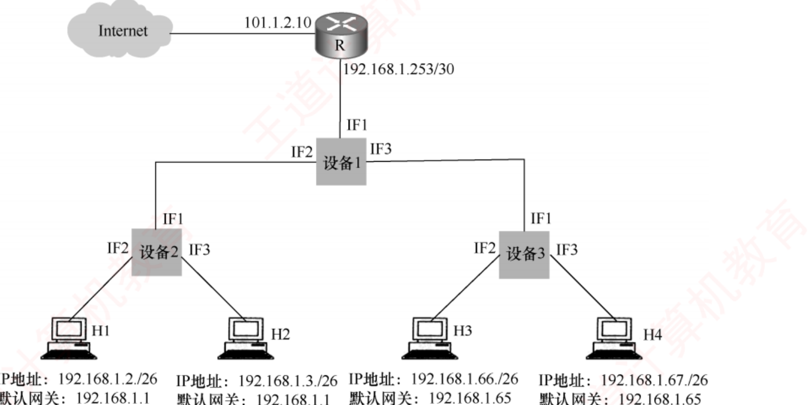
2019 统考真题的拓扑（本章 4.7 综 03） 。顶上是 Internet ，接 路由器 R （上口 101.1.2.10 、下口 192.168.1.253/30 ）；R 往下接设备 1 （三个接口 IF1／IF2／IF3），设备 1 的 IF2、IF3 分别接设备 2 与设备 3 ，两台设备下面各挂两台主机：H1 192.168.1.2/26、H2 192.168.1.3/26（网关 192.168.1.1） ；H3 192.168.1.66/26、H4 192.168.1.67/26（网关 192.168.1.65） 。⭐ 解题的第一眼要落在两个网关地址上 ：192.168.1.1 与 192.168.1.65 明摆着是两个不同的 /26 子网 （.0/26 与 .64/26） ⟹ 能把它们分开的只能是路由器 ⟹ 设备 1 是路由器，设备 2、3 是交换机。 第二眼落在 /30 上 ：R 的下口占了 .253，那条链路上只剩 .254 给设备 1 的 IF1 。整道题的四问就是顺着这两眼展开的。 我的补讲 · 2019 综合真题拆开看，它把本章四个考点串成了一道题
题干骨架 ：R 是路由器（下口
192.168.1.253/30 ），下面接「设备 1」，设备 1 再分出两支接「设备 2」「设备 3」；
H1/H2 是 192.168.1.2、.3，掩码 /26，网关 192.168.1.1 ；
H3/H4 是 192.168.1.66、.67，掩码 /26，网关 192.168.1.65 。
可选设备只有两类：无 VLAN 功能的以太网交换机 与路由器 。
问 答 用到本章哪一节 ① 三个设备各选什么 设备 1 ＝ 路由器，设备 2、3 ＝ 交换机 。理由：.2/.3 的网络前缀是 192.168.1.0 ，.66/.67 的是 192.168.1.64 ，是两个不同的网络 ；无 VLAN 的交换机连出来仍是一个 广播域，只有路由器能分隔 4.7.1 冲突域/广播域② 谁要配 IP、配什么 只有设备 1（路由器） 要配。IF1 ＝ 192.168.1.254 （/30 块 .252～.255 里可用的只有 .253 与 .254，对端 R 占了 .253 ）；IF2 ＝ 192.168.1.1、IF3 ＝ 192.168.1.65 （网关地址就是路由器的 LAN 口地址 ） 4.2.2 /30 点对点③ R 要提供什么服务 NAT ——因为 192.168.0.0/16 是私有地址 ，不能直接上互联网4.2.3 NAT④ 发往 192.168.1.127 谁会收到 只有 H4 。.127 落在 192.168.1.64/26 里、主机号全 1 ⟹ 是该子网的广播地址 ；而路由器隔离广播域 ，所以只在 LAN2 内广播 （H3 是发送方）4.2.2 广播地址 ＋ 4.7.1
🐍 已复算：192.168.1.253/30 的两个可用地址确为 .253 与 .254；192.168.1.127 确是 192.168.1.64/26 的广播地址 —— 与书答吻合。
⭐ 这道题最值得学的是它的出题结构：一张拓扑 + 四问，每一问踩一个不同的知识点。
2020（双 NAT）、2022（设备选型 + DHCP + ch3 最短帧长）是同一个模子出来的——练熟这一道，另外两道只是换了皮 。 知识串联 · 4.7 是本章的「收口」，向前向后都咬着别的章
设备 ⭐ 冲突域/广播域表 ← ch3 3.8 ：那一章从网桥/交换机的角度讲，这一章从路由器的角度讲，是同一张表的两半 。
复习时把两处合并成一次，省下的时间足够多刷 20 道题。 分层 「路由器实现了物理层、数据链路层、网络层」← ch1 1.2 的分层与封装 ：
路由器转发时先解封装输入帧、取出 IP 数据报，再按下一跳接口重新封装 成适合输出链路的新帧
⟹ 正是这种「拆了再包」的能力，使它能互连底层技术完全不同的网络（以太网 ↔ PPP 链路） ，
这与只在物理层的中继器、只在链路层的交换机有本质区别。 控制与数据 「转发 ＝ 数据平面 / 路由选择 ＝ 控制平面」← 4.1.4 SDN ：
本章第一节抛出的抽象，在最后一节变成了具体的硬件结构（路由选择处理机 vs 交换结构） ——
再往外，它还等于《组成原理》CPU 的「控制器 vs 数据通路」、OS 的「机制 vs 策略」。 队列与调度 路由器端口的缓冲区溢出丢包 ← 4.1.5 拥塞控制 → ch5 TCP 拥塞控制 ：
「到达率 > 处理率 ⟹ 队列涨 ⟹ 丢包」这条链，在本章开头是概念、在这里是硬件、在 ch5 是算法。
📄 p.223
4.8 本章小结及疑难点
必记 · 疑难点 1：「尽最大努力交付」到底包含哪五条
① 不保证 IP 数据报无差错 地到达目的主机； ② 不保证在规定时间内 交付； ③ 不保证按发送顺序 交付； ④ 不保证不重复 交付； ⑤ 不主动丢弃数据报 ——仅在两种情况下丢弃：首部检验和出错 ，或因缓存满而无法处理 。第 ⑤ 条最容易被忽略，它其实是一句「辩护」 ：IP 虽然不保证什么，但它不会无缘无故地扔你的分组 。
由此推出一条常考结论：凡交付给目的主机的 IP 数据报，其首部都是没有差错 的（有错早被丢了）
⟹ IP 层可确保首部完整性，但不保证数据部分正确、也不保证传输可靠 ；若应用需要可靠传输，交给 TCP。
必记 · 疑难点 2：ARP 请求的对象不在本网时，谁来应答？（2015 真题的理论依据 ）
情形 谁应答 返回谁的 MAC A 与 B 在同一局域网 B 本人 （单播 ARP 响应）B 自己的硬件地址 B 不在 A 所在局域网 A 的默认网关（路由器）代理应答 ——A 的 ARP 请求根本到不了 B 路由器在该局域网这一侧接口 的硬件地址
⟹ 这就是 4.2.5 那张「ARP 四种典型情况」表的第 2 行，换了个问法。
考场判据依旧是那一句：ARP 永远只解析「我这一跳要交给谁」的 MAC。 必记 · 疑难点 3：为什么路由表里放的是 IP 而不是 MAC？（整个网络部分最核心的一句设计哲学 ）
问题 ：数据报首部只有源和目的 IP，没写下一跳，怎么转发？答 ：路由器查路由表得到下一跳的 IP 地址 ，但不修改 IP 数据报的内容 ；
这个 IP 交给数据链路层，由 ARP 解析成 MAC 填进帧首部 ，从而在物理网络中送到下一跳。此过程对每个数据报重复执行 。 追问 ：那能不能直接在路由表里存 MAC，省掉 ARP？
答案是不能。
理由两条：① IP 地址的抽象性屏蔽了底层网络差异，是互联网可扩展性的基础 ；
② 硬件地址是平面化 的，若路由表直接用它，表项数量将剧增、管理复杂，反而得不偿失。 把这两条与 4.2.2「IP 地址是分等级的、MAC 地址是平面的」对上，整章的设计哲学就闭环了。
必记 · 疑难点 4：「路由器实现了三层」是什么意思
指路由器具备处理这三层协议的能力 ：
物理层 ——能接收和发送比特流；
数据链路层 ——能识别帧结构、解析 MAC 地址，完成帧的解封装与重新封装 ；
网络层 ——能读取 IP 首部，按目的 IP 查路由表做转发决策。⟹ 转发数据时，路由器先解封装 输入帧取出 IP 数据报，再按下一跳接口重新封装 成适合输出链路的新帧。
正是这种能力使它能互连底层技术不同的网络（如以太网与 PPP 链路）。
我的补讲 · 全章读完，这 12 个问题答得上来就算过关
按小节顺序排的自测清单，答不上来就回到对应小节 ：
# 问题 回哪一节 1 虚电路与数据报的七行对照能不能默写？ 4.1.3 2 SDN 三类接口谁对谁？流表取代了什么？ 4.1.4 3 分片三步法 + 多级 MTU 要串行做两次？ 4.2.1 4 五个特殊 IP 地址 + 表 4.2 的三处「减 2」？ 4.2.2 5 变长子网划分四步 + 对齐规则 ？4.2.2 ⭐ 6 路由聚合三步 + 最长前缀匹配三步 ？4.2.2 / 4.2.4 ⭐ 7 NAT 出站改源、入站改目的；三个私有块的边界（172.31 ）？ 4.2.3 8 ARP 请求广播、响应单播；跨网解析的是谁的 MAC？ 4.2.5 9 DHCP 四步的源/目的地址；续租为什么改成单播？ 4.2.6 10 ICMP 五种差错报文 + 四种「不发」；PING 与 Traceroute 各用哪种？ 4.2.7 11 表 4.6 三协议对照六行 ；RIP 更新规则的第二条为什么无条件？4.4 ⭐ 12 三层设备的冲突域/广播域；数域个数时集线器怎么算？ 4.7.1
⭐ 打星的第 5、6、11 三条是本章的命门：它们对应 29 道 4.2 真题里的大多数，以及 4.4 的三道综合真题。
其余九条答不上来只是丢选择题的分，这三条答不上来是丢整道大题。